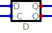

Circuits logiques combinatoires et séquentiels
Avant-propos
Ce manuel a été rédigé en fonction de deux objectifs distincts mais reliés. Le premier objectif était de produire un manuel de qualité, en français, sur un sujet fondamental en électronique numérique et d'en faire une Ressource Éducative Libre (REL). Une recherche préalable nous avait en effet permis de constater qu'il existe peu de manuels récents de ce type sur le sujet. En offrant une telle ressource à la communauté, nous espérons contribuer à rendre plus accessible la formation dans ce domaine technologique important.
Le deuxième objectif était d'expérimenter avec une méthode de travail permettant d'élaborer de telles ressources éducatives en faisant appel à un ensemble d'outils libres et accessibles à tous. Le but était aussi de s'assurer de pouvoir obtenir un ou un ensemble de documents sources susceptibles d'en faciliter la réutilisation, la révision et le remixage. Le manuel est donc appelé à devenir une preuve de concept pour le processus d'élaboration qui a été utilisé.
La matière couverte dans ce manuel correspond d'assez près au contenu du cours MIC1065 Circuits logiques, offert dans le cadre du baccalauréat en systèmes informatiques et électroniques de l'Université du Québec à Montréal.
L'auteur, Guy Bégin, est professeur au département d'informatique de l'Université du Québec à Montréal. Ses recherches l'ont toujours amené à s'intéresser aux 0 et aux 1 si souvent rencontrés en circuits logiques, mais également en télécommunications numériques, son champ de recherche privilégié.
Remerciements
Ce manuel a été réalisé avec le soutien de …
Les logiciels libres suivants ont été utilisés à différentes étapes, pour la rédaction et la préparation des modèles, des images et pour la simulation:
Licence

Sauf indications contraires, le contenu de ce manuel électronique est disponible en vertu des conditions de la Licence Creative Commons Attribution - Partage dans les mêmes conditions 4.0 International.
Vous êtes autorisé à :
- Partager
- – Copier, distribuer et communiquer le matériel par tous moyens et sous tous formats.
- Adapter
- – Remixer, transformer et créer à partir du matériel pour toute utilisation, y compris commerciale.
Selon les conditions suivantes :
- Paternité
- – Vous devez citer le nom de l’auteur original.
- Mêmes conditions
- – Si vous remixez, transformez, ou créez à partir du matériel composant l'Oeuvre originale, vous devez diffuser l'Oeuvre modifiée avec la même licence.
Pour citer cet ouvrage: Bégin, G. (2022), Circuits logiques combinatoires et séquentiels. Université du Québec à Montréal. Licence CC BY-SA
Préface
Ce manuel est une introduction au domaine de la conception des circuits logiques, qui sont à la base de tous les systèmes numériques modernes. Il s'adresse tout particulièrement aux étudiants qui suivent un enseignement technique, ou un premier cycle universitaire, ainsi qu'à tous ceux qui s'intéressent à l'ingénierie électronique. Le lecteur n'a besoin d'aucune connaissance préalable pour pouvoir en assimiler les concepts, mais une connaissance de la programmation permettra de pousser l'expérimentation par simulation.
Les chapitres 1 à 3 de cet ouvrage sont consacrés aux concepts de base de la logique binaire et des systèmes de numération. Ces notions sont présentées d'un point de vue relativement abstrait qui n'est pas étranger au fait que la logique binaire mise en oeuvre dans les circuits numériques modernes est fondée sur des principes mathématiques, voire philosophiques établis bien longtemps avant l'invention de l'électronique.
Dans les trois chapitres suivants, on voit comment la logique peut s'incarner dans des dispositifs électroniques: d'abord avec des portes logiques simples (chapitre 4), et plus avant, avec des dispositifs combinatoires plus complexes (chapitre 6). On présente également les approches permettant de simplifier les circuits logiques combinatoires, c'est-à-dire ceux dont le comportement ne dépend pas du temps (chapitre 5).
Les circuits logiques séquentiels, qui eux comportent de la mémoire, sont considérés ensuite. On présente d'abord les loquets et bascules, composants de base des circuits séquentiels (chapitre 7), puis on aborde l'analyse (chapitre 8) et la conception (chapitre 9) de circuits séquentiels synchrones. Le chapitre 10 présente de nombreux types de circuits séquentiels typiques, alors que le chapitre 11 est consacré aux différents types de mémoires.
Le chapitre 12 offre une brève introduction aux dispositifs logiques programmables qui amènent les circuits logiques à un autre degré de flexibilité et d'intégration.
Dans les chapitres 13 et 14, on s'intéresse à la modélisation de circuits, en introduisant le langage desciptif VHDL, qui permet de décrire formellement des circuits logiques pour en faire la conception, la simulation, voire, la synthèse.
Le manuel se conclut avec des séries d'exercices (chapitre 15) qui permettront de mettre en pratique les notions abordées.
Table des matières
- Avant-propos
- Préface
- 1. Systèmes de numération
- 1.1. Objectifs
- 1.2. Systèmes numériques
- 1.3. Nombres binaires
- 1.4. Conversion binaire <-> décimal
- 1.5. Notation
- 1.6. Représentations compactes de nombres binaires
- 1.7. Nombres binaires fractionnaires
- 1.8. Opérations arithmétiques binaires
- 1.9. Compléments de nombres
- 1.10. Nombres signés et codage
- 1.11. Opérations arithmétiques binaires
- 1.12. Codes binaires
- 2. Logique binaire, fonctions logiques et algèbre de Boole
- 3. Théorèmes et propriétés
- 4. Portes logiques
- 5. Simplification logique
- 6. Circuits combinatoires typiques
- 6.1. Objectifs
- 6.2. Circuit combinatoire
- 6.3. Analyse d'un circuit logique combinatoire
- 6.4. Conception d'un circuit combinatoire
- 6.5. Alternatives d'implémentation
- 6.6. Circuits logiques combinatoires classiques
- 6.7. Additionneur binaire
- 6.8. Multiplexeur
- 6.9. Décodeur
- 6.10. Encodeur
- 6.11. Comparateur de magnitude
- 6.12. Démultiplexeur
- 6.13. Encodeurs divers
- 6.14. Portes à trois états et tampon de bus
- 7. Circuits séquentiels
- 8. Analyse de circuits logiques séquentiels synchrones
- 9. Conception de circuits logiques séquentiels
- 9.1. Objectifs
- 9.2. Conception d'un circuit séquentiel synchrone
- 9.3. Spécification fonctionnelle
- 9.4. Diagramme d'état
- 9.5. Tableau d'états
- 9.6. Réduction du nombre d'états
- 9.7. Codage des états
- 9.8. Décodeur d'état
- 9.9. Décodeur de sorties
- 9.10. Procédure de conception
- 9.11. Exemple de conception
- 9.12. États interdits
- 9.13. Exemple avec états one-hot
- 10. Circuit séquentiels: registres et compteurs
- 11. Mémoires
- 12. Logique programmable
- 13. Langages descriptifs et de modélisation
- 13.1. Objectifs
- 13.2. Modélisation et simulation
- 13.3. Le langage VHDL
- 13.4. Entité
- 13.5. Architecture
- 13.6. Signaux et assignation
- 13.7. Notes sur la syntaxe
- 13.8. Concurrence
- 13.9. Vecteurs de bits
- 13.10. Modèle complet
- 13.11. Modèle comportemental
- 13.12. Modèle flux de données
- 13.13. Modèle structural
- 13.14. Bloc processus
- 13.15. Modélisation du délai
- 13.16. Librairies
- 13.17. Encapsulation
- 13.18. Description de design en VHDL
- 13.19. Banc d'essai
- 13.20. Instanciation
- 13.21. Écoulement du temps
- 13.22. Exemples de banc d'essai
- 13.23. Compilation et simulation
- 14. Préparation et simulation des modèles VHDL
- 15. Exercices
Liste des tableaux
- Tableau 1 : Valeur binaire du nombre \(10101\)
- Tableau 2 : Étapes de conversion de 37 en binaire
- Tableau 3 : Représentation octale
- Tableau 4 : Regroupement pour conversion en octal
- Tableau 5 : Représentation hexadécimale
- Tableau 6 : Regroupement pour conversion en hexadécimal
- Tableau 7 : Évaluation de la valeur du nombre fractionnaire (101,11)2
- Tableau 8 : Étapes pour complément à deux
- Tableau 9 : Nombre de valeurs à représenter entre \(-10\) et \(+10\)
- Tableau 10 : Assignation de codes aux nombres de 4 bits
- Tableau 11 : Tableau de vérité pour l'additionneur binaire
- Tableau 12 : Code Gray à quatre bits
- Tableau 13 : Théorèmes de l'algèbre de Boole
- Tableau 14 : Tableau de vérité de la fonction NON-ET
- Tableau 15 : Tableau de vérité de la fonction NON-OU
- Tableau 16 : Tableau de vérité de la fonction OU-exclusif
- Tableau 17 : Fonction de trois variables
- Tableau 18 : Minterms et maxterms pour trois variables
- Tableau 19 : Fonction de trois variables
- Tableau 20 : Tableau réduit
- Tableau 21 : Tableaux de vérité des fonctions intermédiaires et de la sortie
- Tableau 22 : Tableau de vérité pour l'additionneur binaire
- Tableau 23 : Tableau de vérité pour un demi-additionneur
- Tableau 24 : Addition de (+50)10 + (+100)10 = (00110010)2 + (01100100)2
- Tableau 25 : Addition de (-50)10 + (-100)10 = (1100 1110)2 + (1001 1100)2
- Tableau 26 : Tableau de vérité du multiplexeur quatre-vers-un
- Tableau 27 : Tableau de vérité du décodeur trois-vers-huit
- Tableau 28 : Tableau de vérité, décodeur 2 vers 4 avec sortie active basse
- Tableau 29 : Tableau de vérité pour la fonction arbitraire
- Tableau 30 : Tableau de vérité pour l'encodeur 3 bits
- Tableau 31 : Tableau de vérité pour encodeur 2 bits à priorité
- Tableau 32 : Tableau de vérité pour un multiplexeur quatre-vers-un trois états
- Tableau 33 : Loquet SR NOR: tableau de fonctionnement
- Tableau 34 : Loquet SR NAND: tableau de fonctionnement
- Tableau 35 : Loquet SR avec signal de contrôle: tableau de fonctionnement
- Tableau 36 : Loquet D: tableau de fonctionnement
- Tableau 37 : Bascule D
- Tableau 38 : Bascule JK
- Tableau 39 : Bascule T
- Tableau 40 : Tableau d'excitation pour l'exemple
- Tableau 41 : Tableau d'excitation circuit séquentiel JK
- Tableau 42 : Tableau d'état initial
- Tableau 43 : Tableau d'état après une simplification
- Tableau 44 : Tableau d'état simplifié
- Tableau 45 : Tableau d'état (machine de Moore)
- Tableau 46 : Tableau d'implication
- Tableau 47 : Tableau d'implication, après étape 1
- Tableau 48 : Tableau d'implication, après étape 3
- Tableau 49 : Tableau d'état réduit (machine de Moore)
- Tableau 50 : Possibilités d'assignation de codes d'états
- Tableau 51 : Tableau d'assignation d'état
- Tableau 52 : Tableau de transition d'états
- Tableau 53 : Tableau d'excitation, bascule JK
- Tableau 54 : Tableau d'excitation, bascule T
- Tableau 55 : Tableau de transition d'états, avec bascules JK
- Tableau 56 : Assignation one-hot
- Tableau 57 : Tableau de transition d'états one-hot
- Tableau 58 : Codes de sélection et opérations
- Tableau 59 : Séquence du compteur
- Tableau 60 : Tableau d'état du compteur
- Tableau 61 : Séquence d'états du compteur Johnson
- Tableau 62 : Signaux de contrôle d'une mémoire
- Tableau 63 : Valeurs pour stdlogic
- Tableau 64 : Unités de temps
Liste des programmes
- Programme 1 : Déclaration d'entité
- Programme 2 : Déclarations génériques
- Programme 3 : Déclaration d'entité 2
- Programme 4 : Déclaration d'architecture
- Programme 5 : Expressions
- Programme 6 : Assignations et commentaires
- Programme 7 : Précédence d'opérations et associativité
- Programme 8 : Assignations avec vecteurs de signaux
- Programme 9 : Énoncés concurrents
- Programme 10 : Énoncés concurrents équivalents
- Programme 11 : Vecteur de bits
- Programme 12 : Concaténation
- Programme 13 : Calcul de somme initial
- Programme 14 : Calcul de somme compact
- Programme 15 : Bascule JK maître-esclave
- Programme 16 : Bloc processus
- Programme 17 : Bascule D, front montant, mise à zéro asynchrone
- Programme 18 : Processus avec porte OU combinatoire
- Programme 19 : Délai inertiel
- Programme 20 : Délai de transport
- Programme 21 : Déclaration de librairies
- Programme 22 : Encapsulation
- Programme 23 : Utilisation d'une composante
- Programme 24 : Bascule maître-esclave structurale
- Programme 25 : Compteur basé sur la bascule
- Programme 26 : Multiplicateur 8 bits: entités
- Programme 27 : Multiplicateur 8 bits: composante adder
- Programme 28 : Multiplicateur 8 bits: composante FF
- Programme 29 : Multiplicateur 8 bits: déclarations
- Programme 30 : Multiplicateur 8 bits: descriptions
- Programme 31 : Entité banc d'essai
- Programme 32 : Banc d'essai: instanciation par composant
- Programme 33 : Composant lié
- Programme 34 : Instanciation directe
- Programme 35 : Énoncés liés au temps
- Programme 36 : Énoncé after
- Programme 37 : Signal de mise à zéro
- Programme 38 : Signal d'horloge
- Programme 39 : Énoncé wait
- Programme 40 : Liste de signaux en attente d'évènement
- Programme 41 : Entité vide pour banc d'essai
- Programme 42 : Instanciation du modèle
- Programme 43 : Génération de signaux de test
- Programme 44 : Stimulus pour entrées
- Programme 45 : Premier exemple complet de banc d'essai
- Programme 46 : Deuxième exemple complet de banc d'essai, portion 1
- Programme 47 : Deuxième exemple complet de banc d'essai, portion 2
- Programme 48 : Deuxième exemple complet de banc d'essai, portion 3
- Programme 49 : Entité de niveau supérieur
1. Systèmes de numération
1.1. Objectifs
- Comprendre le fonctionnement du système de numération binaire
- Pouvoir effectuer des conversions entre nombres en représentation binaire, octale, hexadécimale
- Comprendre le rôle des compléments, et la représentation de nombres signés
- Comprendre la notation fractionnaire
- Se familiariser avec quelques codes courants
- Pouvoir effectuer des opérations arithmétiques sur des nombres binaires
1.2. Systèmes numériques
Les systèmes numériques sont omniprésents dans notre monde technologique. La grande force des systèmes numériques est leur capacité à représenter l'information sous toutes ses formes et à permettre la manipulation de cette information. Tout ensemble dont les éléments peuvent être dénombrés, comme un alphabet ou un ensemble fini de couleurs, se prête naturellement à une représentation numérique. Mais il est également possible de représenter des informations qui correspondent à des informations provenant d'ensembles continus, comme par exemple des informations sonores, en procédant à une numérisation par échantillonnage et codage.
Une bonne façon de se familiariser avec la représentation numérique de l'information est d'étudier le système de numération binaire. Dans un chapitre suivant, nous étudierons les principes fondamentaux de la logique binaire. C'est sur ces deux bases que nous pourrons établir notre exploration des circuits logiques.
1.3. Nombres binaires
Les nombres binaires sont essentiellement construits de la même façon que les nombres décimaux avec lesquels nous sommes plus familiers. La différence fondamentale tient au fait qu'il n'est possible d'utiliser que deux symboles (chiffres), 0 et 1, plutôt que les dix chiffres de 0 à 9. Les chiffres sont nommés bits (contraction de b inary dig it).
Par exemple, le nombre décimal que nous écrivons \(2843\) correspond à \(2 \times 1000 + 8 \times 100 + 4 \times 10 + 3 \times 1\). Il s'agit d'un système positionnel, dans lequel la valeur attribuée à un chiffre est définie par sa position et par la valeur de la base du système de numération. Ainsi, pour ce nombre décimal, la base vaut 10 et on a \(2 \times 10^3 + 8 \times 10^2 + 4 \times 10^1 + 3 \times 10^0\). La position la plus à gauche est celle dont la valeur est la plus grande. C'est le chiffre le plus significatif; la position de droite correspond au chiffre le moins significatif. On peut imaginer une virgule après le chiffre le moins significatif, pour délimiter la partie entière du nombre. D'autres chiffres, placés à droite de cette virgule correspondraient à la partie fractionnaire. On y reviendra.
Les mêmes règles positionnelles permettent d'attribuer une valeur à un nombre binaire, en tenant compte du fait que la base vaut cette fois-ci 2. Par exemple, la valeur attribuée au nombre binaire \(10101\) est
\[ 1 \times 2^4 + 0 \times 2^3 + 1 \times 2^2 + 0 \times 2^1 + 1 \times 2^0 = 16+4+1= 21 \]
comme on peut voir dans le tableau 1.
| Position | 4 | 3 | 2 | 1 | 0 |
|---|---|---|---|---|---|
| Valeur | \(2^4\) | \(2^3\) | \(2^2\) | \(2^1\) | \(2^0\) |
| Valeur déc. | 16 | 8 | 4 | 2 | 1 |
| Bit | 1 | 0 | 1 | 0 | 1 |
Nous avons ici le bit le plus significatif à gauche et le bit le moins significatif à droite. Chaque chiffre vaut 2 fois plus que le chiffre immédiatement placé à sa droite.
1.4. Conversion binaire <-> décimal
Convertir un nombre entier binaire en nombre décimal se fait naturellement, en s'appuyant sur les valeurs associées à la notation positionnelle. La conversion en sens inverse, de décimal à binaire, est un peu moins évidente. La méthode consiste à faire une division entière du nombre (et des quotients successifs) par 2 et à noter les restes obtenus. Le premier reste correspond au bit le moins significatif, et le dernier au bit le plus significatif.
Par exemple, les opération pour convertir 37 en binaire sont résumées dans le tableau 2.
| Quotient entier | Reste | Coefficient | |
|---|---|---|---|
| 37/2 | 18 | 1 | \(a_0 = 1\) |
| 18/2 | 9 | 0 | \(a_1 = 0\) |
| 9/2 | 4 | 1 | \(a_2 = 1\) |
| 4/2 | 2 | 0 | \(a_3 = 0\) |
| 2/2 | 1 | 0 | \(a_4 = 0\) |
| 1/2 | 0 | 1 | \(a_5 = 1\) |
On obtient ainsi 100101.
1.5. Notation
Puisque les notations de nombres binaires, octaux, hexadécimaux ou décimaux font appel à des chiffres qui sont tous tirés du même ensemble, il y a un risque d’ambiguïté si on ne connaît pas la base utilisée. Par exemple 11 peut soit s'interpréter comme onze (si on suppose la base dix) ou comme trois (si on suppose la base deux). À moins que le contexte ne soit absolument clair, il vaut mieux être explicite pour éviter de telles ambiguïtés. C'est pourquoi on dénote souvent explicitement la base, comme par exemple, (11)2 pour le nombre trois en binaire qui pourra être distingué de (11)10, le nombre onze en décimal.
1.6. Représentations compactes de nombres binaires
En comparant un nombre décimal et sa représentation binaire, comme par exemple ici 37 et 100101, on voit bien que la représentation binaire est nettement plus encombrante. On utilise souvent des notations plus compactes mais qui conservent un lien direct avec la représentation binaire: la représentation octale et la représentation hexadécimale.
1.6.1. Représentation octale
La représentation octale correspond à utiliser la base 8, avec les chiffres \(0, 1, \ldots, 7\). On voit la correspondance entre les nombres en binaire et les chiffres de la représentation octale dans le tableau 3.
| Binaire | Octal |
|---|---|
| 000 | 0 |
| 001 | 1 |
| 010 | 2 |
| 011 | 3 |
| 100 | 4 |
| 101 | 5 |
| 110 | 6 |
| 111 | 7 |
Pour convertir un nombre binaire en nombre octal, il suffit de regrouper les bits par groupes de trois bits, en partant de la droite (bit le moins significatif), et de remplacer chaque groupe par le chiffre en base 8 correspondant.
Par exemple pour (1010011110001)2, on aura le découpage du tableau 4.
| Binaire | 1 | 010 | 011 | 110 | 001 |
| Octal | 1 | 2 | 3 | 6 | 1 |
On obtient le nombre octal (12361)8.
1.6.2. Représentation hexadécimale
La représentation hexadécimale correspond à utiliser la base 16, avec les chiffres \(0, 1, \ldots, 9\), auxquels on ajoute les lettres A, B, C, D, E et F pour représenter les valeurs de dix à quinze respectivement1. On voit la correspondance entre les nombres en binaire et les chiffres de la représentation hexadécimale dans le tableau 5.
| Binaire | Hexadécimal |
|---|---|
| 0000 | 0 |
| 0001 | 1 |
| 0010 | 2 |
| 0011 | 3 |
| 0100 | 4 |
| 0101 | 5 |
| 0110 | 6 |
| 0111 | 7 |
| 1000 | 8 |
| 1001 | 9 |
| 1010 | A |
| 1011 | B |
| 1100 | C |
| 1101 | D |
| 1110 | E |
| 1111 | F |
Pour convertir un nombre binaire en nombre hexadécimal, il suffit de regrouper les bits par groupes de quatre bits, en partant de la droite (bit le moins significatif), et de remplacer chaque groupe par le chiffre en base 16 correspondant
Par exemple pour (1010011110001)2, on aura le découpage du tableau 6.
| Binaire | 1 | 0100 | 1111 | 0001 |
| Hexa | 1 | 4 | F | 1 |
On obtient le nombre hexadécimal (14F1)16.
1.6.3. Conversion en sens inverse
La conversion de octal (respectivement, hexadécimal) à binaire se fait simplement en remplaçant chaque chiffre octal (resp., hexadécimal) par le groupe de trois (resp., quatre) bits correspondant, en partant du moins significatif.
1.7. Nombres binaires fractionnaires
Il est aussi possible de représenter des nombres fractionnaires en base deux. En gardant à l'esprit que la position d'un bit détermine sa valeur, il suffit d'étendre le principe déjà établi aux bits qui seront placés après la virgule qui sépare la partie entière de la partie fractionnaire. Les indices des positions à droite de la virgule seront négatifs.
Le tableau 7 donne par exemple le détail de l'évaluation de la valeur du nombre fractionnaire (101,11)2. On obtient comme valeur \(1 \times 4 + 0 \times 2 + 1 \times 1 + 1 \times 1/2 + 1 \times 1/4 = 5,75\).
| Position | 2 | 1 | 0 | -1 | -2 |
|---|---|---|---|---|---|
| Valeur | \(2^2\) | \(2^1\) | \(2^0\) | \(2^{-1}\) | \(2^{-2}\) |
| Valeur déc. | 4 | 2 | 1 | 1/2 | 1/4 |
| Bit | 1 | 0 | 1 | 1 | 1 |
1.8. Opérations arithmétiques binaires
Il est possible de transposer les opérations arithmétiques habituelles pour effectuer différentes opération arithmétiques: addition, soustraction, multiplication, division, avec des nombres binaires. Nous verrons plus loin comment ces opérations s'exécutent lorsque nous aurons établi les formes d'encodages binaires qui seront utilisés pour les nombres, notamment la représentation des nombres signés.
1.8.1. Multiplication et division par deux
Pour multiplier un nombre binaire non signé par deux, il suffit de décaler tous ses bits d'une position vers la gauche. Si le nombre est entier, on devra insérer un zéro à la position zéro. Si le nombre est fractionnaire, le bit le plus significatif de la partie fractionnaire se retrouvera à la position zéro.
\[ (10011)2 \times 2 = (100110)2 \]
\[ (100,11)2 \times 2 = (1001,1)2 \]
Pour diviser un nombre binaire par deux, il suffit de décaler tous ses bits d'une position vers la droite. Une division fractionnaire produira possiblement un nombre fractionnaire, comme dans l'exemple suivant.
- Division fractionnaire
\[ (10011)2 \div 2 = (1001,1)2 \]
- Division entière
Pour une division entière (sans fraction), on éliminera le bit qui aurait été placé après la virgule.
\[ (10011)2 \div 2 = (1001)2 \]
Il est évident de généraliser ces opérations pour les multiplications ou divisions par des puissances de 2: par 4, 8, 16, etc.
1.9. Compléments de nombres
Les compléments de nombres jouent un rôle dans la simplification de certaines opérations mathématiques et logiques. Dans un système de numération de base \(b\), on considère deux types de compléments: le complément à \(b\) et le complément à \(b-1\). Pour la base dix, nous aurons donc le complément à dix et le complément à neuf. Pour les nombres binaires (base 2), on aura le complément à deux et le complément à un. Pour évaluer les compléments d'un nombre, on doit tenir compte du nombre de chiffres que comporte ce nombre.
1.9.1. Complément à neuf et complément à un
Soit un nombre entier \(N\) en base \(b\) constitué de \(n\) chiffres. Le complément à \(b-1\) de \(N\) est \((b^n-1)-N\).
Par exemple, en base \(b=10\), le complément à neuf pour le nombre décimal \(N = 4576\) formé de \(n=4\) chiffres sera \((b^n-1)-N = (10^4 -1) - 4576 = 5424\).
En base \(b=2\), le complément à un pour le nombre binaire \(N = (10011)2 = (19)10\) formé de \(n=5\) bits sera \((b^n-1)-N = (2^5 -1) - 19 = 12\) ce qui donne en binaire: \((12)10 = (1100)2\).
On peut vérifier qu'il est très facile, en binaire, de déterminer le complément à un, sans effectuer de calculs, en inversant simplement chacun des bits de la représentation binaire du nombre à complémenter. Ainsi, avec notre exemple, on trouve:
\[ 10011 \]
\[ 01100 \]
Remarquons ici un zéro non significatif comme premier bit à gauche.
1.9.2. Complément à dix et complément à deux
Le complément à \(b\) de l'entier \(N\) s'évalue comme \((b^n)-N\). Cela correspond à ajouter 1 au complément à \(b-1\).
Ainsi pour notre exemple précédent en base \(b=10\), le complément à dix pour le nombre décimal \(N = 4576\) formé de \(n=4\) chiffres sera \((b^n)-N = (10^4) - 4576 = 5425\).
Pour notre autre exemple, en base \(b=2\), le complément à deux pour le nombre binaire \(N = (10011)2 = (19)10\) formé de \(n=5\) bits sera \((b^n)-N = (2^5) - 19 = 13\) ce qui donne en binaire: \((13)10 = (1101)2\).
L'évaluation directe à la main, sans calculs, du complément à deux est également possible en suivant la démarche suivante:
- On parcourt le nombre binaire initial à partir (à droite) du bit le moins significatif, et on retranscrit les bits rencontrés jusqu'à atteindre un premier bit 1, que l'on retranscrit également.
- On continue la retranscription vers la gauche, en inversant cette fois les bits subséquents.
Par exemple, pour (10110)2, on aura la démarche détaillée dans le tableau 8. Les étapes sont numérotées selon la position considérée, à partir de la droite.
| Nombre | 1 | 0 | 1 | 1 | 0 | |
|---|---|---|---|---|---|---|
| Étape 0 | 0 | Retranscrit | ||||
| Étape 1 | 1 | 0 | Retranscrit | |||
| Étape 2 | 0 | 1 | 0 | Inversé | ||
| Étape 3 | 1 | 0 | 1 | 0 | Inversé | |
| Étape 4 | 0 | 1 | 0 | 1 | 0 | Inversé |
Pour une évaluation par un circuit, on commencera par déterminer le complément à un par inversion et on lui additionnera 1 pour obtenir le complément à deux.
1.10. Nombres signés et codage
Représenter de nombres \(\geq 0\) en binaire est donc relativement naturel. Dans l'optique où on voudra stocker ces nombres dans une mémoire binaire numérique, il n'y a qu'à prévoir une taille suffisante (en nombre de bits) pour pouvoir accommoder des nombres assez grands pour l'application considérée. Avec \(n\) bits, il est possible de représenter des entiers de 0 à \(2^n-1\) avec cette représentation «naturelle».
Mais on peut se demander comment représenter des nombres négatifs, c'est-à-dire \(< 0\). Une première observation est le fait que si on considère des nombres positif et négatifs, on double en quelque sorte la quantité de valeurs à représenter. Par exemple, il y a 21 nombres à représenter si on veut pouvoir utiliser les valeurs comprises entre \(-10\) et \(+10\), comme on peut le voir dans le tableau 9.
| Gamme | n. de valeurs |
|---|---|
| de -10 à -1 | 10 |
| 0 | 1 |
| de 1 à 10 | 10 |
| Total | 21 |
Nous devons donc nous assurer d'avoir autant de combinaisons de bits qu'il sera nécessaire. La deuxième observation est qu'il faudra un moyen de distinguer les nombres positifs des nombres négatifs. Si on veut que cette distinction puisse se faire non seulement sur papier, mais surtout lorsque les nombres seront stockés et manipulés dans un système électronique, il faut définir un format binaire «tout compris» qui permette de le faire.
Nous devons donc établir un code, c'est-à-dire, une convention qui permettra de donner un sens à un groupe de bits. Le choix de la convention devrait être guidé par les usages qui seront ultimement faits des nombres qui seront représentés.
En fait, lorsque nous avons convenu (implicitement) de représenter des nombres entiers en utilisant directement la conversion en base 2 des nombres décimaux, nous avons établi un code de représentation, qui, bien que naturel, n'en est pas moins une convention. Ici, nous devrons formuler plus explicitement la convention qui sera utilisée pour représenter les entier signés.
Une convention de représentation peut être établie totalement arbitrairement, mais elle sera sans doute plus utile si elle peut contribuer à faciliter des opérations courantes réalisées avec les éléments à représenter. Puisqu'il est question ici de nombre entiers signés, l'opération à considérer en priorité est l'addition. On devrait aussi considérer les trois points suivants dans notre choix de convention pour attribuer des codes binaires aux valeurs. (Pour illustrer notre réflexion, nous allons considérer des nombre pouvant être représentés par des codes binaires de quatre bits, ce qui permet en théorie de représenter un total de 16 valeurs.)
- Puisqu'il faudra partager notre ensemble de codes binaires en deux, il serait logique de placer la représentation pour zéro au centre de ce découpage.
- Les codes binaires utilisés pour un nombre et pour son inverse additif devraient être disposés symétriquement autour du code utilisé pour représenter le zéro. Il est naturel de représenter la valeur zéro avec le code 0000.
- L'ordre des codes devrait correspondre à l'ordre des nombres. On sait bien comment ordonner les nombres entiers, en passant des nombres négatifs aux nombres positifs.
Quel ordre serait approprié pour les représentations (codes binaires)? L'ordre naturel, du moins pour les nombres entiers positifs, serait de passer de 0000 à 0001 à 0010, etc. Il faudra cependant limiter le nombre de valeurs positives, car il faut réserver des codes pour les valeurs négatives, et nous avons déjà utilisé un code pour le zéro. Quel code binaire devrait-on placer juste avant le zéro, pour représenter -1? Si on dispose l'ensemble des codes binaires entre 0000 et 1111 selon un cycle, tel qu'illustré sur la figure 1, alors le code approprié pour -1 sera 1111. Et le code pour -2 sera 1110. Un avantage de cette disposition est que, en ajoutant 1 pour passer de -2 à -1, on parcourt le cycle dans le même sens qu'en ajoutant 1 pour passer de 1 à 2.
Figure 1 : Relations entre les codes dans l'assignation en complément à deux
En suivant cette logique, on pourra, comme indiqué sur la figure, assigner les codes dans les boîtes en ellipses, en jaune, à des valeurs positives et les codes dans les boîtes en hexagones, en vert, à des valeurs négatives. Si on assigne autant de valeur positives que de valeurs négatives, un seul code binaire ne sera pas utilisable, le code 1000, dans la boîte en losange. Tout mouvement selon le sens des flèches (horaire) sur l'illustration correspond à une soustraction; tout mouvement en sens inverse correspond à une addition. Les nombres binaires seront ainsi symétriques par rapport à notre zéro.
Nous obtenons ainsi l'assignation du tableau 10.
| Code | Nombre |
|---|---|
| 1001 | -7 |
| 1010 | -6 |
| 1011 | -5 |
| 1100 | -4 |
| 1101 | -3 |
| 1110 | -2 |
| 1111 | -1 |
| 0000 | 0 |
| 0001 | 1 |
| 0010 | 2 |
| 0011 | 3 |
| 0100 | 4 |
| 0101 | 5 |
| 0110 | 6 |
| 0111 | 7 |
| 1000 | aucun |
Voici quelques observations importantes sur cette représentation.
- Tous les codes des nombres négatifs ont le premier bit à gauche (qui serait le bit le plus significatif) à la valeur 1, alors que les autres ont codes ont la valeur 0. Ce bit peut ainsi servir d'indicateur de signe, avec la convention habituelle qu'on ne met pas de signe au zéro. On parlera ainsi de bit de signe pour dénoter ce bit, qui ne contribue pas à la grandeur (en valeur absolue) du nombre.
- L'inverse additif d'un nombre \(n\), c'est-à-dire \(-n\), est représenté par le complément à deux du nombre. Ceci signifie que pour trouver l'inverse additif d'un nombre, il suffit de calculer son complément à deux. Le complément à deux du complément à deux nous re-donnera le nombre initial, conformément à la double négation \(--n = n\).
Il existe d'autres conventions pour la représentation de nombres signés, comme par exemple, la représentation signe+magnitude, mais la représentation en complément à deux est de loin la plus utilisée.
1.11. Opérations arithmétiques binaires
1.11.1. Addition de nombres non signés
En transposant les opérations classiques pour effectuer à la main des additions ou des soustractions, il est possible d'effectuer des calculs avec des nombres binaires. Additionner des nombres entier non signés ne pose pas de difficultés particulières.
On suppose deux nombre entiers binaires non signés \(A\) et \(B\) représentés en utilisant le même nombre de bits (si un nombre est plus petit, on ajoutera des 0 non significatifs à gauche pour compléter la représentation). Lorsqu'on effectue l'opération bit par bit, en partant de la position la moins significative, on peut utiliser la table d'addition suivante. À la position \(i\), on a trois entrées à prendre en considération: \(A_{i}\) et \(B_{i}\), les bits des nombres à additionner et \(R_{i-1}\), la retenue provenant de la position \(i-1\). En sortie, on a la somme \(S_{i}\) et la retenue \(R_{i}\).
| \(A_{i}\) | \(B_{i}\) | \(R_{i-1}\) | \(R_{i}\) | \(S_{i}\) |
|---|---|---|---|---|
| 0 | 0 | 0 | 0 | 0 |
| 0 | 0 | 1 | 0 | 1 |
| 0 | 1 | 0 | 0 | 1 |
| 0 | 1 | 1 | 1 | 0 |
| 1 | 0 | 0 | 0 | 1 |
| 1 | 0 | 1 | 1 | 0 |
| 1 | 1 | 0 | 1 | 0 |
| 1 | 1 | 1 | 1 | 1 |
Exemple:
A: 101110001 B: 001111001 S: 111101010 R: 001110001
S'il y a une retenue non nulle à la suite de l'addition à la position la plus significative, il y a un débordement, car le résultat est trop grand pour être représenté avec le nombre de bits initial.
1.11.2. Addition de nombres signés
L'addition de nombre signés codés avec la représentation en complément à deux est nettement avantageuse. Il suffit d’additionner les deux nombres comme s'il s'agissait de nombre non signés, en incluant les bits de signe dans le calcul. La retenue qui émane de la position la plus significative ne doit pas être prise en compte.
Exemple 1:
Additionnons \(A=-2\) et \(B=4\), représentés respectivement (1110)2 et (0100)2.
A: 1110 B: 0100 S: 0010 R: 1100
qui nous donne bien le résultat escompté: S = (0010)2 = (2)10.
Exemple 2:
Additionnons \(A=3\) et \(B=-5\), représentés respectivement (0011)2 et (1011)2.
A: 0011 B: 1011 S: 1110 R: 0011
qui nous donne bien le résultat escompté: S = (1110)2 = (-2)10.
On peut vérifier facilement qu'additionner un nombre avec son complément à deux donne toujours zéro, ce qui correspond à faire \(-n + n = 0\).
Comme avec l'addition de nombre entiers non signés, il faudra se préoccuper des débordements qui peuvent survenir parce que la capacité de représentation est limitée par la taille (en nombre de bits) des codes binaires utilisés.
1.11.3. Soustraction de nombres signés
La soustraction s'effectue en faisant \(A - B = A + (-B)\), comme suit:
- On détermine le complément à deux du nombre à soustraire (ici, \(B\)).
- On additionne ce complément à deux au nombre duquel on soustrait (ici, \(A\)). La retenue qui émane de la position la plus significative ne doit pas être prise en compte.
Le résultat s'interprétera comme un nombre signé en complément à deux.
1.11.4. Extension de signe
Dans la représentation des nombres signés en complément à deux, le bit de signe (bit le plus à gauche) est un indication directe du signe d'un nombre. Si on change la taille des nombres, c'est-à-dire, le nombre de bits utilisés au total pour la représentation, il faut une opération spécifique pour préserver l'encodage en complément à deux.
Considérons par exemple le nombre 5, représenté d'abord sur quatre bits et ensuite sur huit bits. On a pour 5
\[ 0101 \]
ou encore
\[ 00000101 \]
Quand on compare ces deux représentations, on observe que:
- elles se terminent de la même façon, avec les trois bits 101 qui représentent la grandeur du nombre;
- le bit le plus à gauche est 0 dans les deux cas (même signe);
- dans la représentation sur huit bits, il y a des bits 0 entre le bit de signe et les trois derniers bits.
Considérons maintenant un nombre négatif, le nombre -5, représenté d'abord sur quatre bits et ensuite sur huit bits. Le complément à deux de 5 = (0101)2 est
\[ 1011 \]
alors que le complément à deux de 5 = (00000101)2 est
\[ 11111011 \]
Quand on compare ces deux représentations, on observe que:
- elles se terminent de la même façon, avec les trois bits 011;
- le bit le plus à gauche est 1 dans les deux cas (même signe);
- dans la représentation sur huit bits, il y a des bits 1 entre le bit de signe et les trois derniers bits.
Ces constatations nous amènent à conclure que lorsqu'on augmente la taille de représentation d'un nombre signé, il faut faire une extension de signe pour intercaler les bonnes valeurs binaires entre le bit de signe et les bits qui représentent la grandeur du nombre. Pour un nombre positif, on doit intercaler des bits 0, alors que pour un nombre négatif, on intercale des bits 1. On peut donc énoncer la règle comme on doit intercaler des bits dont la valeur est la même que le bit de signe.
Si, à l'inverse, on réduit la taille des nombres signés, on n'aura qu'à supprimer des bits, tous égaux au bit de signe, entre le bit de signe et ceux qui représentent la grandeur du nombre. Si les bits à supprimer ne sont pas tous égaux au bit de signe, c'est une indication que la réduction de taille n'est pas possible: la nouvelle taille est insuffisante pour représenter les nombres correctement.
1.12. Codes binaires
Il n'y a pas que des nombres que l'on voudra représenter en binaire. Il est maintenant le temps de définir ce qu'on appelle un code binaire, car cette notion est au centre de tous les encodages que nous aurons à utiliser.
Un code binaire sur \(n\) bits est typiquement une association entre, d'une part, les éléments d'un ensemble que l'on cherche à représenter et d’autre part, les différents groupes ou patrons possibles avec \(n\) bits. On appelle parfois ces patrons des mots-code (ou par abus de langage, des codes). Comme il y a \(2^n\) patrons de bits différents, il est possible d'associer jusqu'à ce nombre d'éléments.
Une règle, souvent implicite mais essentielle, est qu'on ne devrait associer qu'un seul élément à un patron de bits donné. Sinon, l'interprétation du code (le décodage) devient ambiguë. Selon l'application, il n'est pas toujours nécessaire d'associer tous les patrons de bits à des éléments. Par exemple, si on veut représenter les chiffres décimaux, il est nécessaires de disposer d'au moins 10 patrons de bits, ce qui est possible avec \(n=4\). Puisque \(2^4 = 16\), il y aura \(16 - 10 = 6\) patrons de bits inutilisés.
La règle spécifique d'association peut être établie arbitrairement, mais elle est souvent conçue en vue de respecter certaines propriétés liées aux éléments à représenter ou à la configuration du code lui-même. C'est ce qu'on a fait, par exemple, pour définir la convention d'encodage des entiers par complément à deux.
1.12.1. Code Gray
Lorsqu'on utilise un code binaire pour représenter des valeurs associées à des phénomènes physiques, il peut être opportun d’utiliser un encodage dans lequel le nombre de changements de bits est minimal lorsqu'on passe d'un patron de bits au suivant dans la séquence des codes. Par exemple, si on cherche à encoder des positions d'un interrupteur rotatif (comme pour encoder des angles), il est préférable que lorsqu'on passe d'un position à la suivante en tournant le commutateur, un seul bit ne change dans la sortie. Ainsi, une erreur sur un bit n'introduit pas un gros changement dans l'interprétation de la valeur encodée. Un code Gray permet d'atteindre cet objectif.
Avec le code Gray du tableau 12, on peut voir par exemple que la transition entre les codes pour 7 et 8 n’entraîne qu'un changement sur un bit, de 0110 à 1100. Avec un encodage classique basé sur les entiers binaires, on aurait observé pour ce cas une transition entre 0111 et 1000, qui comporte quatre changements de valeurs de bits.
| Code Gray | Valeur |
|---|---|
| 0000 | 0 |
| 0001 | 1 |
| 0011 | 2 |
| 0010 | 3 |
| 0110 | 4 |
| 0111 | 5 |
| 0101 | 6 |
| 0100 | 7 |
| 1100 | 8 |
| 1101 | 9 |
| 1111 | 10 |
| 1110 | 11 |
| 1010 | 12 |
| 1011 | 13 |
| 1001 | 14 |
| 1000 | 15 |
1.12.2. Codes alphanumériques et autres
Vous rencontrerez sans doute plusieurs autres encodages courants, comme par exemple pour encoder des caractères (code ASCII, codes UTF) ou pour encoder uniquement des chiffre décimaux (code BCD). Une fois qu'on a bien compris la règle d'encodage, il n'y a généralement pas de difficultés à les utiliser.
Certains codes sont construits de manière à permettre d’identifier et même, dans certains cas, de corriger des erreurs dans le stockage ou la transmission des données encodées. Ces codes sont construits en fonction de règles d'encodage, qui, lorsqu'elles ne sont pas respectées, permettent de constater la présence d'erreurs.
2. Logique binaire, fonctions logiques et algèbre de Boole
2.1. Objectifs
- Situer les opérations de la logique binaire dans leur contexte algébrique
- Être familier avec les postulats de l'algèbre de Boole, et les principaux théorèmes
- Pouvoir exprimer une fonction logique par un tableau de vérité
- Pouvoir appliquer les théorèmes de DeMorgan
- Pouvoir formuler une expression logique à partir d'un tableau de vérité
- Pouvoir exprimer une fonction logique en somme de produits, ou en produit de sommes, et pouvoir convertir d'une forme à l'autre
2.2. Logique binaire
La logique binaire associe une valeur de vérité à des variables, selon une convention préétablie. Ces valeurs de vérité sont binaires, à savoir, vrai ou faux. Pour représenter ces valeurs de vérité, on peut utiliser un encodage binaire, comme par exemple
| Valeur de vérité | Valeur binaire | |
|---|---|---|
| Vrai | 1 | |
| Faux | 0 |
2.2.1. Variable binaire
Une variable binaire, dénotée par une lettre, permet de désigner une valeur binaire pouvant assumer une de deux valeurs possible, 0 ou 1. La variable est typiquement associée à une proposition, l'état d'un élément ou toute autre condition pouvant admettre deux états distincts. En assignant une valeur binaire à la variable, on définit une valeur de vérité associée à cette variable, et ainsi à la condition qu'elle représente. Par exemple, soit \(S\) une variable binaire qui représente la proposition «le soleil est visible». Alors, \(S=0\) peut s'interpréter comme «le soleil est visible est faux» ou «le soleil n'est pas visible».
2.2.2. Opérations logiques
Trois opérations logiques de base permettent d'agir sur des variables binaires, de les combiner et de formuler des expressions logiques à partir d'elles.
- ET: cette opération est représentée (comme la multiplication) par un point central ou par l'absence de signe d'opérateur entre les arguments. Par exemple, \(x \cdot y\) ou \(x y\). La valeur de l'expression est 1 si et seulement si toutes les variables ont la valeur 1. Sinon, la valeur est 0.
- OU: cette opération est représentée (comme l'addition) par un signe +. Par exemple, \(x + y\). La valeur de l'expression est 1 si au moins une des variables a la valeur 1. Si aucune des variables ne vaut 1, la valeur de l'expression est 0.
- NON: cette opération est représentée par un prime, comme par exemple \(x^\prime\), ou par une barre au-dessus de la variable, \(\overline{x}\). L'opération NON renverse la valeur binaire de son argument: si \(x =0\) alors \(x^ \prime = 1\); si \(x =1\) alors \(x^ \prime = 0\). Cette opération de négation, est aussi appelée complément, car complémenter une valeur binaire revient à faire basculer sa valeur.
2.2.3. Expression logique
Une expression logique combine des variables logiques et des opérations, et peut donc assumer une valeur binaire logique. Cette valeur logique peut être assignée à une autre variable, en créant ainsi une équation logique. Par exemple, \(z = x \cdot y\) signifie que \(z\) assume la valeur de l'expression \(x \cdot y\). À partir des valeurs logiques des variables (entrées) \(x\) et \(y\), on peut donc déterminer la valeur logique de la sortie \(z\).
2.2.4. Tableaux de vérité
Une façon de décrire la valeur logique d'une variable de sortie en fonction des valeurs possibles des variables d'entrée est au moyen d'un tableau de vérité. Dans un tel tableau, il y a une ligne pour chaque combinaison possible des valeurs d'entrée, et sur chaque ligne, on indique la valeur de sortie correspondante. C'est en quelque sorte une description en extension de la valeur de l'expression de sortie.
Voici par exemple les tableaux de vérité pour les opérations de base.
Opération ET:
| \(x\) | \(y\) | \(x \cdot y\) | |
|---|---|---|---|
| 0 | 0 | 0 | |
| 0 | 1 | 0 | |
| 1 | 0 | 0 | |
| 1 | 1 | 1 |
Opération OU:
| \(x\) | \(y\) | \(x + y\) | |
|---|---|---|---|
| 0 | 0 | 0 | |
| 0 | 1 | 1 | |
| 1 | 0 | 1 | |
| 1 | 1 | 1 |
Opération complément:
| \(x\) | \(x^{\prime}\) | |
|---|---|---|
| 0 | 1 | |
| 1 | 0 |
2.3. Formalisme mathématique
Un formalisme mathématique, élaboré bien avant l'avènement des circuits électroniques numériques, permet de formuler, analyser et simplifier les expressions de la logique binaire. Il s'agit de l'algèbre de Boole.
2.3.1. Définitions
Une algèbre est un système mathématique, défini pour un ensemble d'éléments auxquels sont associés un ensemble d'opérateurs et qui respecte un jeu d'axiomes ou postulats. Une algèbre nécessite donc:
- Un ensemble \(S\) d'éléments
- Des opérateurs: \(\cdot\), \(\star\), \(+\)
- L'application des opérateurs aux différents éléments doit respecter
un certain nombre de propriétés appelées postulats, comme par exemple:
- Fermeture
- Associativité
- Commutativité
- Existence d'élément identité
- Existence d'élément inverse
- Distributivité
Selon le choix des postulats, on arrive à définir différents types de systèmes algébriques. Par exemple, les nombres réels avec lequel nous sommes familiers est un système algébrique d'un type appelé corps.
2.4. Algèbre de Boole
Une algèbre de Boole est un type de système algébrique défini sur un ensemble \(B\), muni de deux opérateurs dénotés \(+\) et \(\cdot\), et qui respecte les postulats suivants2 (postulats de Huntington):
- Fermeture: tout résultat d'une opération sur un élément de
l'ensemble donne un élément de l'ensemble.
- ♠ Fermeture par rapport à \(+\).
- ♥ Fermeture par rapport à \(\cdot\).
- Éléments identité
- ♠ Élément identité de \(+\), noté 0: on a \(x + 0 = 0 + x = x\).
- ♥ Élément identité de \(\cdot\), noté 1: on a \(x \cdot 1 = 1 \cdot x = x\).
- Commutativité
- ♠ Commutativité par rapport à \(+\): on a \(x + y = y + x\).
- ♥ Commutativité par rapport à \(\cdot\): on a \(x \cdot y = y \cdot x\).
- Distributivité
- ♠ \(\cdot\) est distributif sur \(+\): on a \(x \cdot (y + z)= (x \cdot y) + (x \cdot z)\).
- ♥ \(+\) est distributif sur \(\cdot\): on a \(x + (y \cdot z)= (x + y) \cdot (x + z)\).
- Pour chaque élément \(x \in B\), il existe un élément
\(x^{\prime} \in B\) (appelé complément de \(x\)) tel que
- ♠ \(x + x^{\prime} = 1\).
- ♥ \(x \cdot x^{\prime} = 0\).
- Il existe au moins deux éléments \(x, y \in B\) tels que \(x \neq y\).
Observons des différences entre une algèbre de Boole et le corps des réels:
- Il n'y a pas de loi d'associativité dans les postulats. On peut en démontrer une, cependant.
- L'opération \(+\) est distributive sur \(\cdot\).
- Il n'y a pas d'inverse multiplicatif ni d'inverse additif, on ne peut donc pas faire de soustraction ou de division.
- Il y a un concept de complément.
- L'ensemble d'éléments est différent. Nous utiliserons pour notre part l'ensemble \(B: \{0, 1 \}\) pour notre algèbre de Boole.
2.5. Algèbre de Boole à deux valeurs
L'ensemble de définition: \(B : \{0, 1 \}\).
Opérateur \(\cdot\)
| \(x\) | \(y\) | \(x \cdot y\) | |
|---|---|---|---|
| 0 | 0 | 0 | |
| 0 | 1 | 0 | |
| 1 | 0 | 0 | |
| 1 | 1 | 1 |
Opérateur \(+\)
| \(x\) | \(y\) | \(x + y\) | |
|---|---|---|---|
| 0 | 0 | 0 | |
| 0 | 1 | 1 | |
| 1 | 0 | 1 | |
| 1 | 1 | 1 |
Règle de complémentation
| \(x\) | \(x^{\prime}\) | |
|---|---|---|
| 0 | 1 | |
| 1 | 0 |
2.6. Vérification des postulats
- La fermeture est évidente (en regardant les tableaux des opérations).
En observant les tableaux de vérité, on constate que
- \(0 + 0 = 0\), \(0 + 1 = 1 + 0 = 1\)
- \(1 \cdot 1 = 1\), \(0 \cdot 1 = 1 \cdot 0 = 0\)
ce qui définit les deux éléments identité: 0 pour \(+\) et 1 pour \(\cdot\).
- La commutativité des lois est évidente: les tableaux sont symétriques.
- Les lois de distributivité se démontrent aisément en établissant des tables de vérité pour les différentes valeurs de \(x, y\) et \(z\).
- Par le tableau de complément, on vérifie que
- \(x + x^{\prime} = 1\), car \(0 + 0^{\prime} = 0 + 1 = 1\) et \(1 + 1^{\prime} = 1+ 0 = 1\)
- \(x \cdot x^{\prime} = 0\) car \(0 \cdot 0^{\prime} = 0 \cdot 1 = 0\) et \(1 \cdot 1^{\prime} = 1 \cdot 0 = 0\).
- Le postulat 6 est vérifié car il y a deux éléments distincts: 0 et 1.
3. Théorèmes et propriétés
3.1. Objectifs
- Bien saisir les relations de dualité entre les opérations
- Connaître les principaux théorèmes de l'algèbre de Boole et pouvoir les appliquer correctement
- Pouvoir passer d'une version d'un théorème à sa version duale
- Connaître les autres fonctions logiques importantes
- Pouvoir construire un tableau de vérité
3.2. Dualité
Les postulats ont été formulés en paires, identifiés par ♠ et ♥. En interchangeant les opérateurs et les éléments identité, on transforme un postulat de forme ♠ en un postulat de forme ♥. C'est le principe de dualité. Ainsi, n'importe quelle expression algébrique demeurera valide si les opérateurs et les valeurs d'éléments identité sont interchangés.
Puisque notre algèbre ne comporte que deux éléments, les deux éléments identité sont en fait les deux seuls éléments, 0 et 1. On obtient donc le dual d'une expression en changeant les 0 pour des 1, les 1 pour des 0 et les ET pour des OU, les OU pour des ET.
3.3. Théorèmes de base
Le tableau 13 résume les postulats et théorèmes de base de notre algèbre. On présente en parallèle chaque version et sa version duale.
| Version ♠ | Version ♥ | |
|---|---|---|
| Postulat 2 | \(x+0=x\) | \(x \cdot 1 = x\) |
| Postulat 5 | \(x+x^{\prime} = 1\) | \(x \cdot x^{\prime} = 0\) |
| Theorème 1 | \(x + x = x\) | \(x \cdot x = x\) |
| Theorème 2 | \(x + 1 = 1\) | \(x \cdot 0 = 0\) |
| Theorème 3 | \((x^{\prime})^{\prime} = x\) | |
| Postulat 3 | \(x + y = y + x\) | \(xy = yx\) |
| Theorème 4 | \(x + (y + z) = (x + y ) + z\) | \(x(yz) = (xy)z\) |
| Postulat 4 | \(x(y+z) = xy + xz\) | \(x + yz = (x+y)(x+z)\) |
| Theorème 5 | \((x + y)^{\prime} = x^{\prime} y^{\prime}\) | \((xy)^{\prime} = x^{\prime} + y^{\prime}\) |
| Theorème 6 | \(x + xy = x\) | \(x(x+y) = x\) |
3.3.1. Autres fonctions logiques
Nous avons vu que les opérateurs logiques ET, OU et NON, qu'on peut aussi appeler fonctions logiques, sont à la base même de la définition de notre algèbre de Boole. Il est possible de concevoir d'autres fonctions logiques qui vont s'avérer utiles pour la formulation, la conception et la réalisation de systèmes logiques. Voici quelques unes des plus souvent utilisées.
- Fonction NON-ET
La fonction NON-ET, souvent désignée NAND, est obtenue en complémentant la sortie d'une fonction ET: \((x \cdot y)^\prime\).
Tableau 14 : Tableau de vérité de la fonction NON-ET \(x\) \(y\) \((x \cdot y)^\prime\) 0 0 1 0 1 1 1 0 1 1 1 0 - Fonction NON-OU (NOR)
La fonction NON-OU, souvent désignée NOR, est obtenue en complémentant la sortie d'une fonction OU: \((x + y)^\prime\).
Tableau 15 : Tableau de vérité de la fonction NON-OU \(x\) \(y\) \((x + y)^\prime\) 0 0 1 0 1 0 1 0 0 1 1 0 - Fonction OU-exclusif (XOR)
La fonction OU-exclusif, souvent désignée XOR, est obtenue en évaluant \(x \cdot y^\prime + x^\prime \cdot y\). La sortie est 1 seulement si une seule des entrées est 1. On verra plus loin que cette fonction joue un rôle important dans la formulation d'un additionneur.
Tableau 16 : Tableau de vérité de la fonction OU-exclusif \(x\) \(y\) \((x \cdot y^\prime + x^\prime \cdot y)\) 0 0 0 0 1 1 1 0 1 1 1 0
3.3.2. Fonctions de plusieurs entrées
La plupart des fonctions logiques simples peuvent naturellement se formuler en fonction de plus de deux entrées. Par exemple, \(a \cdot b \cdot c\) nous donne une fonction ET à trois entrées, et on peut facilement imaginer des fonctions ET ou des fonctions OU avec encore plus d'entrées.
3.3.3. Expressions et fonctions binaires
Une fonction binaire peut être décrite par une expression algébrique Booléenne. Selon les valeurs des variables, la valeur de l'expression Booléenne détermine la valeur de la fonction. Par exemple, \(F_1\) est une fonction de trois entrées \(a\) \(b\) et \(c\) définie par l'expression
\[ F_1 = a + b \cdot c^\prime \]
La précédence des opération dans les expressions algébriques est (1) parenthèses, (2) NON, (3) ET, et (4) OU.
Il est possible de construire le tableau de vérité pour \(F_1\) en évaluant la fonction pour les \(2^3 = 8\) combinaisons d'entrées possibles, comme dans le tableau 17.
| \(a\) | \(b\) | \(c\) | \(F_1\) | |
|---|---|---|---|---|
| 0 | 0 | 0 | 0 | |
| 0 | 0 | 1 | 0 | |
| 0 | 1 | 0 | 1 | |
| 0 | 1 | 1 | 0 | |
| 1 | 0 | 0 | 1 | |
| 1 | 0 | 1 | 1 | |
| 1 | 1 | 0 | 1 | |
| 1 | 1 | 1 | 1 |
En général, pour une fonction à \(n\) entrées, le tableau de vérité comportera \(2^n\) lignes.
3.4. Théorèmes de DeMorgan
Le complément d'une fonction \(F\), \(F^\prime\), s'obtient en remplaçant tous les 0 par des 1 et tous les 1 par des 0 dans les valeurs de la fonction. Par exemple, en complémentant ainsi les valeurs dans le tableau de vérité, on effectue ce changement.
On peut aussi effectuer ce changement en appliquant les théorèmes de DeMorgan (Théorème 5 ♠ et ♥ du tableau 13) qui peuvent se généraliser à plus de deux variables.
4. Portes logiques
4.1. Objectifs
- Être familier avec les symboles usuels des portes logiques
- Être familier avec les conventions et règles de dessin de schémas logiques
- Faire la différence entre niveau de signal et valeur logique
- Pouvoir expliquer les différences entre le fonctionnement idéalisé et la réalité physique des portes logiques
4.2. Niveaux logiques
Une porte logique est un dispositif électronique qui implémente une fonction logique en agissant sur des signaux électriques selon une convention préétablie. En général, on établit des valeurs binaires en se basant sur la tension des signaux, en définissant une correspondance entre des gammes de tensions et les valeurs logiques 0 et 1. Par exemple, pour une tension d'alimentation \(V_{DD}\), on pourrait avoir les correspondances suivantes:
| Gamme de tensions | Niveau |
|---|---|
| de 0 à \(V_{DD}/3\) | Niveau bas |
| de \(2V_{DD}/3\) à \(V_{DD}\) | Niveau haut |
Les portes logiques sont manufacturées selon différents standards technologiques qu'on appelle familièrement des familles logiques. Au sein d'une même famille, les portes respectent les mêmes références de niveaux pour pouvoir fonctionner ensemble adéquatement. Une porte peut comporter une ou plusieurs entrées et agit généralement sur une seule sortie.
4.3. Logique négative ou positive
On associe ensuite une valeur binaire à chacun des niveaux selon une certaine convention, par exemple:
| Niveau | Valeur logique |
|---|---|
| Niveau bas | 0 |
| Niveau haut | 1 |
qui correspond à une logique positive. La convention inverse nous donne la logique négative.
Certains signaux seront considérés comme actifs lorsque leur niveau logique sera 0. On parlera alors de signaux actifs bas. La convention implicite est généralement que les signaux sont actifs haut.
4.4. Symboles
On a défini des symboles pour représenter graphiquement les portes logiques courantes. Dans un schéma logique, les portes sont interconnectées entre-elles au moyen de symboles de conducteurs (fils) qui permettent d'acheminer les valeurs logiques d'une porte à l'autre.
4.4.1. Porte ET
À deux entrées \(S = A \cdot B\)
Figure 2 : Porte ET à deux entrées
Les portes qui réalisent des fonctions qui sont associative et commutatives peuvent aussi se définir avec plus de deux entrées. C'est le cas avec les fonctions ET et OU.
À trois entrées \(S = A \cdot B \cdot C\)
Figure 3 : Porte ET à trois entrées
4.4.2. Porte OU
À deux entrées \(S = A + B\)
Figure 4 : Porte OU à deux entrées
4.4.3. Porte inverseur
L'opération NON qui consiste à complémenter une valeur binaire s'effectue avec une porte appelée inverseur. Il n'y a toujours qu'une seule entrée. \(B = A^\prime\)
Figure 5 : Porte inverseur
4.4.4. Porte NON-OU (NOR)

Figure 6 : Porte NOR à deux entrées
4.4.5. Porte NON-ET (NAND) et NON-OU (NOR)
Les fonctions NAND et NOR ne sont pas associatives. Par exemple,
\[ (x \operatorname{Nor} y) \operatorname{Nor} z \neq x \operatorname{Nor} (y \operatorname{Nor} z) \]
On peut néanmoins définir des versions à plusieurs entrées de ces fonctions en ajustant la priorité d'évaluation. Pour une porte NOR à trois entrées, on fera \((A + B + C)^\prime\).
Pour une porte NAND à trois entrées, on fera \(S = (A \cdot B \cdot C)^\prime\).
Figure 7 : Porte NAND à trois entrées
4.4.6. Entrées inversées
On utilise souvent l'élément symbolique qui est placé à la sortie de l'inverseur (un petit cercle) pour indiquer l'inversion d'une entrée ou d'une sortie d'une porte. C'est le cas à la sortie des portes NAND et NOR comme on vient de le voir. Un autre exemple est la porte NAND de la figure 8, où une des entrées est également inversée. La porte évalue donc \(S = (A^\prime \cdot B \cdot C)^\prime\)
Figure 8 : Porte NAND à trois entrées dont une inversée
4.4.7. NAND et NOR, représentations équivalentes
En vertu du théorème de DeMorgan, on sait que \((x + y)^{\prime} = x^{\prime} y^{\prime}\) et que \((xy)^{\prime} = x^{\prime} + y^{\prime}\). On peut donc représenter les portes NAND et NOR de deux façons équivalentes.
Figure 9 : Deux représentations équivalentes pour une porte NOR
Figure 10 : Deux représentations équivalentes pour une porte NAND
4.4.8. Porte OU-exclusif (XOR)
La porte XOR à deux entrées donne une sortie 1 seulement lorsque ses deux entrées sont différentes. Il est possible de définir des portes XOR à plus de deux entrées, mais il y a différentes interprétations de ce qu'une telle porte devrait avoir comme comportement. De plus, comme la réalisation pratique de cette fonction n'est pas aussi simple que pour les autres fonctions, on se retrouve plus souvent qu'autrement à devoir mettre des portes à deux entrées en cascade pour augmenter le nombre d'entrées, ce qui rend moins intéressantes les portes XOR avec entrées nombreuses.
\[ S= A \cdot B^\prime + A^\prime \cdot B \]
Figure 11 : Porte XOR à deux entrées
4.4.9. Porte NON-OU-exclusif ou Équivalence (XNOR)
La porte Équivalence produit une sortie 1 lorsque ses entrées ont la même valeur (et sont donc équivalentes). Comme pour les portes XOR, les portes XNOR à plus de trois entrées peuvent s'interpréter de différentes façons.
Figure 12 : Porte XNOR
4.5. Universalité des NAND et NOR
En faisant appel uniquement à des portes de type NAND ou NOR, il est possible de réaliser n'importe quelle fonction logique, puisqu'il est possible de réaliser les trois opérateurs de base.
- Pour réaliser un inverseur, on utilise une porte NAND à une seule entrée (ou dont toutes les entrées sont reliées ensemble).
- Pour réaliser une porte ET, on fait suivre une porte NAND d'un inverseur.
- Pour réaliser une porte OU, on précède chaque entrée d'une porte NAND d'un inverseur.
On verra plus loin qu'il est aussi possible de réaliser avantageusement des fonctions quelconques avec des portes NAND en exploitant la forme somme de produits.
4.6. Limites physiques
Les portes logiques qu'on utilisera en pratique sont des dispositifs électroniques dont le fonctionnement correspond, dans les grandes lignes, aux comportements idéalisés des modèles abstraits de l'algèbre de Boole. Mais il faut toujours garder à l'esprit que la correspondance entre modèle et réalité physique n'est jamais parfaite. En raffinant nos modèles pour y incorporer des caractéristiques, limites ou contraintes appropriées, il sera possible de mieux tenir compte de la réalité physique.
4.6.1. Fan-out
Le fan-out d'une porte logique mesure sa capacité à commander d'autres portes reliées à sa sortie. Puisque les portes sont des dispositifs électroniques qui doivent faire circuler un certain courant électrique pour concrétiser les niveaux de tensions qui définissent leurs valeurs d'entrée et de sortie, il y a une limite pratique à la capacité d'une porte de fournir le courant nécessaire pour faire réagir la sortie des portes qu'elle devrait commander. Le fan-out mesure cette limite, en nombre de portes à commander. Si on connecte plus d'entrées à une sortie que sa valeur de fan-out, cette sortie ne pourra pas atteindre le niveau de tension adéquat, et les opérations logiques seront faussées.
4.6.2. Modèles de délai
Dans la mesure où on respecte ses contraintes d'utilisation, notamment de fan-out, une porte logique se comporte globalement de la façon attendue, étant donné sa fonction et les conventions de niveaux de signal établies. Par exemple, le niveau signal à la sortie d'un inverseur correspondra au niveau de signal attendu pour le complément de la valeur logique à son entrée. Mais il faut garder à l'esprit que les portes sont des dispositifs électroniques, et donc physiques, sujets à des «imperfections» qui diffèrent du comportement idéalisé.
Une de ces «imperfections» dont on doit impérativement tenir compte est le délai de propagation qui se manifeste comme un retard entre le moment où le signal à l'entrée de la porte assume (se stabilise à) son niveau de signal, et le moment où la sortie de la porte atteint son niveau de signal attendu. C'est en quelque sorte le délai entre une action à l'entrée et son effet sur la sortie. Ce délai limite la vitesse à laquelle on peut utiliser notre circuit logique. Si on essaie d'effectuer des transitions plus rapides que le délai, le comportement ne sera plus conforme aux attentes de conception. On doit donc respecter une vitesse de commutation maximale imposée par les délais de propagation.
Le délai de propagation peut dépendre de plusieurs facteurs: la famille logique, le type de porte, le sens de la transition, le fan-out effectif, les caractéristiques d'interconnexions, etc. Pour faciliter l'analyse, on fait appel à des modèles de délais plus ou moins sophistiqués. Un modèle très simple consiste à supposer un délai de propagation moyen, constant pour toutes les portes d'une famille donnée. Un modèle un peu plus subtil pourrait prendre en compte des délais de propagation moyens différents par types de portes. Le délai de propagation moyen est une caractéristique clé qui différencies les différentes familles logiques. Les délais sont typiquement de l'ordre de nanosecondes, permettant des vitesse de commutation dans les dizaines, centaines, voire, des milliers de MHz.
Lorsqu'un signal doit se propager à travers plusieurs portes, les délais de propagation s'accumulent, limitant encore davantage la vitesse de commutation de l'ensemble du circuit. La vitesse qui pourra être atteinte pour l'ensemble d'un circuit sera typiquement déterminée par le plus lent chemin en terme de temps de propagation.
- Modèles simples
Considérons pour illustrer une porte ET à deux entrées \(S = A B\). Le modèle le plus simple suppose une porte idéale, sans aucun délai: le chronogramme suivant montre la sortie qui commute immédiatement lorsque les conditions d'entrée changent.

Figure 13 : Porte ET sans délai
- Modèle avec délai en sortie
Le modèle avec délai en sortie consiste à considérer un délai fixe, qui affecte la sortie de la porte: la commutation prend effet en sortie après un délai \(t_p\).
Figure 14 : Porte ET avec délai en sortie
- Modèle avec délai en entrée
Le modèle avec délai en entrée est plus nuancé, car il permet de spécifier un délai différent selon l'entrée qui entraîne le changement à la sortie.
Figure 15 : Porte ET avec délai aux entrées
- Modèle combiné
Le modèle combiné consiste à considérer des délais différents par entrée, et en plus, un délai global en sortie.
- Modèle avec délai en sortie
- Condition de course et aléas
Un autre effet néfaste potentiel des délais à considérer est ce qu'on appelle une condition de course. Considérons le circuit de la figure 13. La sortie de la porte est \(s = a \cdot a^\prime\) qui devrait normalement donner systématiquement 0. Mais le chemin menant de l'entrée \(a\) à l'entrée du haut de la porte ET est plus court (en termes de délais) que le chemin qui mène à l'entrée du bas. En effet, le signal \(a^\prime\) est retardé d'un délai de propagation \(t_{p1}\) par rapport à \(a\).
Figure 16 : Cas à risque de condition de course
En pratique, on pourrait observer un chronogramme qui s'apparente à celui de la figure suivante (figure 17), où on voit que les deux signaux à l'entrée de la porte ET sont simultanément égaux à 1 pendant une courte période. Une courte impulsion 1 sera donc générée sur le signal \(s\) en sortie de la porte ET, après le délai de propagation \(t_{p2}\) de celle-ci. Cette impulsion, qui ne correspond à rien selon la logique du circuit est appelé un aléa (ou en anglais, glitch).
Figure 17 : Chronogramme montrant une condition de course
Ces aléas peuvent être la source de problèmes et de dysfonctionnements qui sont parfois difficiles à diagnostiquer, et il faut vraiment s'en méfier. Une telle impulsion, quasi imperceptible, pourrait par exemple déclencher le basculement de la valeur d'une cellule mémoire plus loin dans le circuit.
4.6.3. Porte tampon
La valeur binaire à la sortie d'une porte tampon est la même qu'à l'entrée. La porte n'agit pas sur la valeur logique mais permet de reconditionner le signal à son entrée pour le rendre, en sortie, davantage conforme aux niveaux électriques de référence. Une porte tampon est essentiellement utilisée pour renforcer et stabiliser le niveau du signal. Une façon pratique de réaliser une porte tampon est de placer deux inverseurs l'un à la suite de l'autre. L'utilisation de portes tampon est un des moyens de s'assurer de respecter les conditions de fan-out.
5. Simplification logique
5.1. Objectifs
- Pouvoir formuler une expression logique en forme canonique Produit de sommes ou Somme de produits, et convertir entre les deux formes
- Pouvoir simplifier une expression au moyen d'un diagramme de Karnaugh
- Pouvoir simplifier une expression par la méthode Quine-McCluskey
- Être familier avec les approches d'implémentation des fonctions simplifiées
5.2. Expressions équivalentes
Un des aspects ennuyeux avec les expressions logiques est que la correspondance entre expression et fonction logique n'est pas biunivoque: plusieurs expressions différentes peuvent correspondre à une seule et même fonction. De plus, certaines des expressions équivalentes peuvent être plus complexes que d'autres. Lorsque vient le temps d'implémenter avec des portes une fonction logique, il est la plupart du temps plus efficace d'implémenter selon une expression plus simple, voir minimale. On doit donc considérer des approches systématiques et efficaces pour simplifier les expressions logiques.
Quand une expression Booléenne est implémentée avec des portes logiques, chaque terme nécessite une porte et chaque variable au sein d'un terme correspond à une entrée de la porte. On appelle littéral une variable qui apparaît dans un terme, sous forme complémentée ou non. Par exemple, l'expression \(F = x^\prime y^\prime z + xz + xy^\prime z\) compte huit littéraux. Si on réduit le nombre de termes, le nombre de littéraux, ou les deux, on obtiendra une expression qui sera plus simple à implémenter avec des portes.
5.3. Formes canoniques
5.3.1. Minterms et maxterms
Dans une expression, une variable \(x\) peut apparaître telle qu'elle \(x\) ou complémentée \(x^\prime\). Si on considère les combinaisons possibles de deux variables via un opérateur ET, on a alors quatres possibilités: \(x^\prime y^\prime, x^\prime y, x y^\prime,x y\). Chacun de ces quatres termes s'appelle un minterm.
De façon équivalente (duale, en vérité), \(n\) variables reliées par une fonction OU peuvent donner lieu à \(2^n\) termes distincts, appelés maxterms.
De façon générale, pour \(n\) variables, on aura \(2^n\) minterms ou \(2^n\) maxterms différents possibles.
Pour étiqueter les différents minterms ou maxterms, on a établi une convention de numérotation. Le numéro d'étiquette d'un minterm est construit de la façon suivante. Une variable complémentée amène un bit d'étiquette 0, une variable telle qu'elle amène un bit d'étiquette 1. En ordonnant les bits selon l'ordre alphabétique des variables, on obtient un vecteur de bits qui donnera le numéro à assigner au minterm. Par exemple, le minterm \(x y^\prime z\) donnera l'étiquette 101, donc le numéro de minterm (en équivalent décimal) 5.
La règle pour les maxterms est duale: une étiquette 0 pour une variable telle qu'elle, et une étiquette 1 pour une variable complémentée. Chaque maxterm est le complément du minterm correspondant (de même numéro), et vice versa.
Dans le tableau 18, on montre les symboles de la forme \(m_j\) pour les mintems et \(M_j\) pour les maxterms, avec \(j\) qui est l'équivalent décimal de la combinaison de bits correspondante.
| \(x\) | \(y\) | \(z\) | Minterm | Symb. | Maxterm | Symb. |
|---|---|---|---|---|---|---|
| 0 | 0 | 0 | \(x^\prime y^\prime z^\prime\) | \(m_0\) | \(x+ y+ z\) | \(M_0\) |
| 0 | 0 | 1 | \(x^\prime y^\prime z\) | \(m_1\) | \(x+ y+ z^\prime\) | \(M_1\) |
| 0 | 1 | 0 | \(x^\prime y z^\prime\) | \(m_2\) | \(x+ y^\prime+ z\) | \(M_2\) |
| 0 | 1 | 1 | \(x^\prime y z\) | \(m_3\) | \(x+ y^\prime+ z^\prime\) | \(M_3\) |
| 1 | 0 | 0 | \(x y^\prime z^\prime\) | \(m_4\) | \(x^\prime+ y+ z\) | \(M_4\) |
| 1 | 0 | 1 | \(x y^\prime z\) | \(m_5\) | \(x^\prime+ y+ z^\prime\) | \(M_5\) |
| 1 | 1 | 0 | \(x y z^\prime\) | \(m_6\) | \(x^\prime+ y^\prime+ z\) | \(M_6\) |
| 1 | 1 | 1 | \(x y z\) | \(m_7\) | \(x^\prime + y^\prime+ z^\prime\) | \(M_7\) |
Pour la fonction \(F_1\) dont le tableau de vérité est le suivant:
| \(x\) | \(y\) | \(z\) | \(F_1\) | |
|---|---|---|---|---|
| 0 | 0 | 0 | 0 | |
| 0 | 0 | 1 | 0 | |
| 0 | 1 | 0 | 1 | |
| 0 | 1 | 1 | 0 | |
| 1 | 0 | 0 | 1 | |
| 1 | 0 | 1 | 1 | |
| 1 | 1 | 0 | 1 | |
| 1 | 1 | 1 | 1 |
on peut donc écrire
\[ F_1 = x y^\prime z^\prime + x y^\prime z^\prime + x y^\prime z + x y z^\prime + x y z = m_2 + m_4 + m_5 + m_6 + m_7 \]
puisque ce sont les termes pour lesquels la fonction vaut 1. Cette forme d'expression est une forme canonique appelée somme de produits.
Pour simplifier la notation, on peut écrire de façon plus compacte
\[F_1 = \sum (2, 4, 5, 6, 7)\]
où on ne met que les numéros des minterms participant à la somme.
Si on veut exprimer le complément d'une fonction, on peut lire dans le tableau de vérité les combinaisons pour lesquelles la fonction vaut 0. En prenant un minterm pour chaque combinaison où la fonction vaut 0 et en faisant un OU de ces termes, on obtient une expression en somme de produits pour le complément de la fonction. Ainsi, pour la fonction \(F_1^\prime\), on a
\[ F_1^\prime = m_0 + m_1 + m_3 = x^\prime y^\prime z^\prime + x^\prime y^\prime z + x^\prime y z \]
Si on complémente \(F_1^\prime\), on obtiendra naturellement \(F_1\). En appliquant le théorème de DeMorgan à chaque terme, on trouve
\(F_1 = (x+ y+ z)(x + y + z^\prime)(x + y^\prime + z^\prime) = M_0 \cdot M_1 \cdot M_3\)
Cette forme d'expression est aussi une forme canonique appelée produit de sommes.
Pour simplifier la notation, on peut écrire de façon plus compacte
\(F_1 = \prod (0,1,3)\)
où on ne met cette fois que les numéros des maxterms participant au produit.
5.3.2. Somme de produits
Pour \(n\) variables binaires, on a \(2^n\) minterms différents possibles. Les minterms qui participent à la somme dans l'expression en forme canonique somme de produits sont ceux qui produisent un 1 dans le tableau de vérité de la fonction. Puisque la fonction peut valoir 0 ou 1 pour chaque minterm, le nombre total de fonctions différentes qui peuvent être définies avec \(n\) variables est de \(2^{2^n}\).
Si on veut convertir en forme canonique somme de produits l'expression pour une fonction qui ne serait pas sous cette forme, on commence par faire l'expansion de l'expression en forme somme de produits. Ensuite, on vérifie chaque terme pour voir si toutes les variables en font partie. S'il manque une ou des variables, on peut faire un ET du terme avec une expression du type \(x + x^\prime\) dans laquelle \(x\) est une variable manquante. Ce ET ne change pas la valeur de la fonction puisque \(x + x^\prime = 1\).
Évidemment, on peut toujours trouver la formulation en forme canonique en se basant sur le tableau de vérité.
5.3.3. Produit de sommes
Si on veut convertir en forme canonique produit de sommes l'expression pour une fonction qui ne serait pas sous cette forme, on commence par faire l'expansion de l'expression en forme produit de sommes. On peut avantageusement faire appel à la distributivité de \(+\) sur \(\cdot\) pour ce faire. Ensuite, on vérifie chaque terme pour voir si toutes les variables en font partie. S'il manque une ou des variables, on peut faire un OU du terme avec une expression du type \(x \cdot x^\prime\) dans laquelle \(x\) est une variable manquante. Ce OU ne change pas la valeur de la fonction puisque \(x \cdot x^\prime = 0\).
5.3.4. Conversion entre formes canoniques
Prenons notre exemple précédent \(F_1 = \sum (2, 4, 5, 6, 7)\). On sait que \(F_1^\prime = \sum (0,1,3)\). Si on prend le complément de \(F_1^\prime\) par le théorème de DeMorgan, on obtient \(F_1 = (m_0 + m_1 + m_3)^\prime = m_0^\prime \cdot m_1^\prime \cdot m_3^\prime = M_0 \cdot M_1 \cdot M_3 = \prod (0,1,3)\).
En effet, de minterm à maxterm, on a \(m_j^\prime = M_j\). Le maxterm d'indice \(j\) est le complément du minterm de même indice \(j\), et vice versa.
5.3.5. Formes standard
Les expressions canoniques en somme de produits et en produit de sommes ne sont généralement pas simples, car toutes les variables doivent être présentes. Pour l'implémentation, on cherchera des expressions en formes somme de produits ou produit de sommes dans lesquelles les termes pourront être simplifiés. C'est-à-dire que les termes pourront comporter une, deux, trois, etc. variables plutôt qu'obligatoirement toutes les variables. Toujours pour notre fonction exemple, on peut écrire
\(F_1 = x + y z^\prime\)
Lorsqu'on implémente une telle fonction avec des portes logiques, il faut une porte ET pour chaque terme produit (qui comporte plus d'une variable) et une porte OU pour faire la somme finale. On obtient une implémentation à deux niveaux.
De façon duale, on peut également obtenir une formulation en produit de sommes qui aboutira à une implémentation à deux niveaux avec une porte OU par terme et une porte ET pour le produit final.
5.4. Objectifs de minimisation
Étant donné une fonction logique de \(n\) variables \(z(x_1, x_2, \ldots, x_n)\), on veut déterminer une expression pour cette fonction sous la forme Somme de Produits (S de P) ou Produit de Sommes (P de S) qui
- comporte un nombre minimum de termes produits (pour la forme S de P) ou de termes sommes (pour la forme P de S);
- est telle qu'aucune expression pour \(z\) comportant le même nombre de termes n'utilise moins de littéraux.
5.5. Diagrammes de Karnaugh
Une méthode visuelle permet de simplifier l'expression logique d'une fonction en systématisant une procédure faisant appel à un diagramme qui fait ressortir les simplifications possibles.
Un diagramme de Karnaugh (diag-K) est constitué d'un regroupement de cellules carrées, chaque cellule correspondant à un minterm possible. Les cellules sont organisées de façon à ce que lorsqu'on passe d'une cellule à une cellule adjacente (horizontalement ou verticalement), un seul bit du minterm change, ce qui revient à dire qu'une seule variable passe de telle qu'elle à complémentée.
Cela fait en sorte que si la fonction est 1 pour deux minterms adjacents, la somme des deux minterms pourra être simplifiée en un seul terme dans lequel la variable correspondant au bit qui change est absente. Par exemple, on pourrait avoir pour deux minterms adjacents \(m_5 + m_7 = xy^\prime z + xyz = xz(y^\prime + y) = xz\). Ici les deux minterms adjacents diffèrent par la variable \(y\), qui sera donc supprimée du terme produit résultant.
Figure 18 : Diag-K à deux variables
Figure 19 : Diag-K à trois variables, avec minterms
Sur un diag-K à trois variables, on voit que les bits \(AB\) sont ordonnés selon un code Gray, de façon à ce qu'un seul des bits change lorsqu'on passe d'une cellule à la suivante horizontalement. L'adjacence se poursuit en bout de diagramme: par exemple, la cellule 100 (\(m_4\)) est adjacente horizontalement à la cellule 000 (\(m_0\)). On peut imaginer le diagramme comme replié sur lui-même pour visualiser cette adjacence.
Figure 20 : Diag-K avec adjacence horizontale
Sur un diag-K à quatre variables, l'adjacence repliée est autant horizontale que verticale.
Pour plus de quatre variables, il devient difficile d'utiliser cette méthode: les diagrammes sont de grande taille et surtout, les règles d'adjacence ne sont plus aussi facilement observables. Les risques d'erreurs sont plus grands.
Figure 21 : Diag-K à quatre variables
5.5.1. Procédure de simplification
Pour utiliser un diag-K pour minimiser une fonction logique,
- Les minterms de la fonction à minimiser sont identifiés en insérant un 1 dans la cellule correspondant à chaque minterm.
- On cherche dans le diagramme pour trouver des regroupement de deux cellules adjacentes qui sont marquées d'un 1.
- Chaque groupe de deux cellules 1 adjacentes est marqué comme groupe. Un même minterm peut être incorporé à plus d'un groupe.
- Il est aussi possible de regrouper les groupes: deux groupes de 2 qui sont adjacents peuvent ainsi se regrouper en un groupe de 4. Les tailles de groupes doivent être des puissances de 2. Il est ainsi possible de créer des groupes de 2, 4, 8 ou 16 minterms.
- Une fois tous les regroupements identifiés, il est possible de lire l'expression de la fonction en somme de produits. Chaque groupement correspond à un terme produit, et la ou les variables dont le bit ne change pas dans le groupe sont conservées; les autres sont éliminées.
Considérons par exemple la fonction \(F(A,B,C) = \sum (0, 4, 6, 7)\). Après la première étape, on obtient

Après les regroupements, on obtient un diag-K comportant trois regroupements

Figure 22 : Diagramme après les regroupements
Le groupe en rouge correspond au produit \(B^\prime C^\prime\), celui en bleu correspond à \(A B\) et celui en vert correspond à \(A C^\prime\). L'expression finale en somme de produits est donc \(F = B^\prime C^\prime + A B + A C^\prime\).
5.5.2. Cas facultatifs
Certaines fonctions sont incomplètement définies, dans le sens où certaines combinaisons d'entrées ne se produiront jamais ou seront sans conséquences si elles se produisent. On parle de cas indifférents ou facultatifs (en anglais, don't care). Pour la simplification, ces cas pourront être traités tantôt comme des 0, tantôt comme des 1, selon ce qui sera le plus avantageux.
Pour tenir compte de ces cas, les minterms seront notés avec un X dans le diagramme de Karnaugh. Dans l'exemple à quatre variables suivant, sur deux cas facultatifs, un seul, celui correspondant à \(m_{7}\), a été traité comme un 1, ce qui a permis de créer le regroupement en bleu. L'autre cas facultatif, correspondant à \(m_{2}\), n'a pas servi dans un regroupement, ce qui signifie qu'il a été traité comme un 0. La fonction résultante est donc \(A C^\prime D^\prime + BD + AB \).
Figure 23 : Diag-K avec cas facultatifs
5.5.3. Impliquants
Le choix des regroupements à utiliser doit toujours viser à s'assurer que:
- Tous les minterms de la fonction sont couverts par les regroupements choisis.
- Le nombre de termes retenus pour l'expression est minimal.
- Il n'y a pas de termes redondants, c'est-à-dire, qui couvrent uniquement des minterms déjà couverts.
Il y a parfois des plus d'une expression qui rencontre ces critères. Il est possible de systématiser le choix des termes en prenant en compte le caractère essentiel des termes.
Soit \(p(X)\) un terme produit de littéraux tirés de l'ensemble de variables \(X\). Si, pour une fonction logique \(z(X)\) définie pour le même ensemble de variables, la relation
pour tout \(A\) tel que \(p(A)=1\), \(z(A)=1\)
tient, alors \(p\) est un impliquant de \(z\). Cela signifie que la vérité du terme produit \(p\) implique celle de \(z\). Tout minterm de \(p\) est aussi un minterm de \(z\).
Exemple:
\[z_1 = ab + bc + a b^{\prime} c\]
\(a b\), \(b c\), \(a b^{\prime} c\) sont des impliquants évidents de \(z_1\).
\(a^{\prime} b c\), \(a b c^{\prime}\), \(a b c\), \(a c\) sont aussi des impliquants de \(z_1\).
Figure 24 : Diag-K pour l'exemple des impliquants
5.5.4. Impliquant premier
Un impliquant \(p\) de la fonction \(z\) est premier si n'importe quel terme produit obtenu de \(p\) en supprimant un littéral n'est pas un impliquant de \(z\).
Ici, \(a b\) est un impliquant premier de \(z_1\) car ni \(a\) ni \(b\) ne sont des impliquants de \(z_1\). Mais \(a b^{\prime} c\) n'est pas un impliquant premier de \(z_1\) car \(a c\) est un impliquant de \(z_1\). Sur un diagramme de Karnaugh, un impliquant premier (i.p.) est un groupe qui n'est contenu dans aucun autre groupe plus grand.
5.5.5. Couverture d'une fonction
Un sous-ensemble d'i.p. qui contient tous les minterms d'une fonction couvre la fonction.
Une couverture minimale est une couverture avec
- le nombre minimal d'impliquants premiers,
- le moins de littéraux parmi les couvertures avec nombre minimum d'implicants.
5.5.6. Impliquant premier essentiel
Un i.p. est essentiel si et seulement si il couvre un minterm de la fonction qui ne peut être couvert par un autre i.p. de la fonction. Une couverture de la fonction doit contenir tous les impliquants premiers essentiels (i.p.e.).
Un impliquant premier absolument inessentiel est un i.p. qui couvre des minterms qui sont tous couverts par les i.p.e. de la fonction.
5.5.7. Sélection des impliquants
Règles de sélection des impliquants
- Mettre de côté tous les i.p.e. Ils seront utilisés dans la solution finale.
- Éliminer tous les i.p. absolument inessentiels.
- Il reste à choisir parmi les i.p. inessentiels pour obtenir une couverture minimale.
Lorsque le problème est de taille réduite, on peut faire une recherche exhaustive de toutes les solutions possibles pour choisir la solution minimale.
5.5.8. Minimisation avec cas facultatifs
- Lorsqu'on détermine les i.p., on doit considérer les X comme des 1, de façon à pouvoir utiliser les i.p. rendus possibles par les cas facultatifs.
- Lors de la sélection des i.p. pour obtenir une couverture minimale, on ne doit pas ne pas essayer de couvrir les X.
5.5.9. Minimisation avec plusieurs fonctions
Si deux fonctions \(z_i\) et\(z_j\) ont des expressions minimales qui comportent un terme commun, une seule porte suffira pour générer ce terme au profit des deux fonctions.
Exemple:
\[z_1 = a c + a^{\prime} b c^{\prime} + a^{\prime} c^{\prime} d\]
\[z_2 = a c + a^{\prime} b c^{\prime} d^{\prime} + a^{\prime} b^{\prime} c^{\prime} d\]
Figure 25 : Fonction \(z_1\)
Figure 26 : Fonction \(z_2\)
Il est alors préférable de réutiliser les termes communs et de générer seulement les termes manquants pour la seconde fonction. Dans cet exemple, le terme \(a c\) sera calculé une seule fois. Les termes \(a^{\prime} b c^{\prime} d^{\prime}\) et \(a^{\prime} b^{\prime} c^{\prime} d\) sont nécessaires pour \(z_2\). Alors, pour \(z_1\), on fera
\[ z_1 = a c + a^{\prime} b c^{\prime} d^{\prime} + a^{\prime} b^{\prime} c^{\prime} d + a^{\prime} b c^{\prime} d \]
qui ne nous coûtera que le dernier terme produit et une somme de quatre termes.
5.6. Tableau de couverture Quine-McCluskey
La méthode de Quine-McCluskey systématise la sélection des impliquants en se basant sur des relations qui s'expriment en fonction d'un tableau de couverture.
Un tableau de couverture comporte une ligne pour chaque i.p. et une colonne pour chaque minterm de la fonction à minimiser \(z\). Un ✓ est inscrit à l'intersection de la ligne \(i\) et de la colonne \(j\) si l'i.p. \(P_i\) de la ligne \(i\) couvre le minterm \(m_j\) de la colonne \(j\).
Le problème de minimisation devient alors: trouver une couverture pour la fonction \(z\) qui
- contient le nombre minimum de lignes
- est telle qu'aucune autre couverture à nombre de ligne minimum comprend moins d'entrées 1 et 0 dans ses codes d'impliquants de ligne.
Dans le tableau de couverture, on identifie facilement les i.p.e. par les colonnes qui ne contiennent qu'un ✓. L'i.p. qui couvre une colonne qui ne contient qu'un ✓ est un i.p.e.
Puisque les i.p.e. doivent faire partie de la solution finale, toutes les colonnes couvertes par des i.p.e. seront couvertes dans n'importe quelle solution. On peut donc éliminer ces colonnes de la suite de la recherche de la solution, de même que les lignes correspondant aux i.p.e. On obtient ainsi un tableau de couverture réduit.
Il ne faut cependant pas oublier de mettre les i.p.e. dans la solution finale.
5.6.1. Tableau de couverture réduit
Le tableau de couverture réduit permet de se concentrer sur la sélection des i.p. dont la sélection n'est pas évidente a priori. Considérons pour illustrer la discussion le tableau de couverture réduit suivant. \(m_c\) est sans doute couvert pas un i.p.e. qui n'est pas montré ici.
| \(m_a\) | \(m_b\) | \(m_c\) | \(m_d\) | \(m_e\) | \(m_f\) | \(m_g\) | \(m_h\) | |
|---|---|---|---|---|---|---|---|---|
| \(P_A\) | ✓ | ✓ | ✓ | ✓ | ||||
| \(P_B\) | ✓ | ✓ | ✓ | ✓ | ||||
| \(P_C\) | ✓ | ✓ | ✓ | ✓ | ||||
| \(P_D\) | ✓ | ✓ | ||||||
| \(P_E\) | ✓ | ✓ | ✓ | ✓ | ✓ | ✓ | ✓ |
5.6.2. Dominance de lignes
Une ligne \(P_i\) domine une ligne \(P_j\) (noté \(P_i \supseteq P_j\)) si la ligne \(P_i\) contient un ✓ dans toutes les colonnes où la ligne \(P_j\) contient un ✓. Ici, on a \(P_B \supseteq P_D\) mais \(P_B\) ne domine pas \(P_A\). On peut voir aussi que \(P_E\) domine plusieurs lignes.
En général, une \(P_i\) dominante contient plus de ✓ que \(P_j\). Si elles ont le même nombre de ✓ (dans les mêmes colonnes), on a \(P_i = P_j\). Il n'y a pas de cas d'égalité ici.
Une ligne dominée par une autre peut être éliminée du tableau de couverture à condition que son nombre de littéraux soit supérieur ou égal à celui de la ligne dominante.
5.6.3. Dominance de colonnes
Une colonne \(m_i\) domine une colonne \(m_j\) (noté \(m_i \supseteq m_j\)) si la colonne \(m_i\) contient un ✓ dans toutes les lignes où la colonne \(m_j\) contient un ✓. Ici, la colonne \(m_h \supseteq m_g\) mais \(m_b\) ne domine pas \(m_a\).
Une colonne dominant une autre peut être éliminée du tableau de couverture, car le fait que la solution finale couvre la colonne dominée assure que la colonne dominante sera couverte aussi. Donc ici, la colonne \(m_h\) peut être éliminée.
En cas d'égalité, comme on a ici pour \(m_e = m_g\), on peut librement choisir quelle colonne éliminer.
5.7. Implémentation des fonctions simplifiées
Les circuits logiques simplifiés en forme produit de sommes ou somme de produits sont souvent mis en oeuvre au moyen de portes NAND ou NOR plutôt qu'avec des portes ET et OU. La raison est qu'il est plus simple en pratique de réaliser ces portes.
5.7.1. Implémentation à deux niveaux
Une fonction en forme somme de produits s'implémente évidemment avec des portes ET pour les produits et une porte OU pour la somme finale. Considérons par exemple \(F = AB + CD\).
Figure 27 : Somme de produits pour \(F = AB + CD\)
La fonction peut aussi s'implémenter tout naturellement en faisant appel uniquement à des portes NAND. On peut vérifier facilement que le circuit suivant implémente la même fonction \(F = ((AB)^\prime \cdot (CD)^\prime)^\prime = AB + CD\)
Figure 28 : Somme de produits NAND
Cette configuration s'interprète plus facilement en représentant la porte de sortie comme une porte NOR avec les entrées complémentées (version équivalente de la porte NAND). En effet, la complémentation de chaque sortie de somme est compensée par la complémentation à l'entrée de la porte de sortie.

Figure 29 : Somme de produits NAND plus évidente
6. Circuits combinatoires typiques
6.1. Objectifs
- Pouvoir analyser un circuit combinatoire à partir de son schéma
- Pouvoir concevoir un circuit combinatoire à partir d'une spécification
- Connaître différentes approches de réalisation
- Être familier avec les principaux circuits combinatoires courants et leurs fonctions: additionneur, décodeur, multiplexeur, encodeur, comparateur
- Comprendre le fonctionnement d'une chaîne d'addition binaire et les mécanismes de propagation et d'anticipation de retenue
6.2. Circuit combinatoire
Un circuit logique combinatoire est une combinaison de portes logiques dont la sortie à un instant donné ne dépend que des valeurs des entrées à cet instant. Un circuit combinatoire à \(n\) entrées et \(m\) sorties peut être représenté par un schéma-bloc, dans lequel on place généralement les entrées à gauche et les sorties à droite.
Figure 30 : Circuit combinatoire
Avec \(n\) entrées, il est possible de créer \(2^n\) combinaisons différentes des entrées binaires. Pour chaque combinaison, le circuit peut donner une sortie 0 ou 1. On peut donc préciser la fonction réalisée par le circuit par un tableau de vérité comportant \(2^n\) lignes. Comme nous avons \(m\) sorties différentes, il y aura \(m\) colonnes dans le tableau de vérité pour les fonctions de sortie. Traditionnellement, on présente les entrées en ordre croissant de combinaison binaires.
6.3. Analyse d'un circuit logique combinatoire
Si on est placé devant le schéma d'un circuit logique dont on ne connaît pas la fonction, on doit en faire l'analyse. La première étape consiste à vérifier qu'il s'agit bien d'un circuit combinatoire. Si le schéma ne comporte pas de cellules de mémoire ou de boucles de rétroaction, on peut conclure que le circuit est combinatoire. Une boucle de rétroaction consiste en un chemin dans le circuit dans lequel une valeur d'entrée d'une porte provient, directement ou indirectement (par l'intermédiaire d'autres portes), de la sortie de la même porte. La présence de rétroaction est une caractéristique des circuits logiques séquentiels, que nous étudierons plus loin.
Pour interpréter le comportement du circuit, nous devons déterminer les expressions logiques qu'il met en oeuvre ou établir son tableau de vérité.
Pour déterminer l'expression logique, on procède ainsi:
- Étiqueter toutes les sorties des portes qui sont alimentées par les variables d'entrée du système. Les noms de variables seront arbitraire, mais devraient être choisis de façon à faciliter l'interprétation par la suite. Déterminer les fonctions logiques pour ces variables.
- Étiqueter les sorties des portes qui sont alimentées par les variables d'entrée et par les sorties étiquetées à l'étape précédente. Déterminer les fonctions logiques pour ces nouvelles variables.
- Répéter l'étape 2 jusqu'à arriver aux variables de sortie du système.
- En substituant les expressions logiques des fonctions identifiées, déterminer l'expression logique pour les sorties du système en fonction des entrées du système.
6.3.1. Exemple
Considérons le circuit combinatoire à analyser illustré à la figure suivante.

Figure 31 : Circuit combinatoire à analyser
- Il n'est pas la peine d'étiqueter la sortie de la porte inverseur. Comme variables intermédiaire, nous considérons \(I_1\) en sortie de la porte ET à trois entrées et \(I_2\) en sortie de la porte NOR. On trouve que \(I_1 = A^\prime \cdot B \cdot C\) et que \(I_2 = (A + D)^\prime = A^\prime \cdot D^\prime\).
- On aura donc \(F_1 = I_1 \cdot I_2\).
- En substituant, \(F_1 = ( A^\prime \cdot B \cdot C ) \cdot ( A^\prime \cdot D^\prime) = A^\prime \cdot B \cdot C \cdot D^\prime\).
- En simplifiant, on obtient finalement \(F_1 = A^\prime \cdot B \cdot C \cdot D^\prime\).
| \(A\) | \(C\) | \(B\) | \(D\) | \(I_1\) | \(I_2\) | \(F_1\) | |
|---|---|---|---|---|---|---|---|
| 0 | 0 | 0 | 0 | 0 | 0 | 0 | |
| 0 | 0 | 0 | 1 | 0 | 0 | 0 | |
| 0 | 1 | 0 | 0 | 0 | 1 | 0 | |
| 0 | 1 | 0 | 1 | 0 | 0 | 0 | |
| 0 | 0 | 1 | 0 | 0 | 1 | 0 | |
| 0 | 0 | 1 | 1 | 0 | 0 | 0 | |
| 0 | 1 | 1 | 0 | 1 | 1 | 1 | |
| 0 | 1 | 1 | 1 | 1 | 0 | 0 | |
| 1 | 0 | 0 | 0 | 0 | 0 | 0 | |
| 1 | 0 | 0 | 1 | 0 | 0 | 0 | |
| 1 | 1 | 0 | 0 | 0 | 0 | 0 | |
| 1 | 1 | 0 | 1 | 0 | 0 | 0 | |
| 1 | 0 | 1 | 0 | 0 | 0 | 0 | |
| 1 | 0 | 1 | 1 | 0 | 0 | 0 | |
| 1 | 1 | 1 | 0 | 0 | 0 | 0 | |
| 1 | 1 | 1 | 1 | 0 | 0 | 0 |
6.4. Conception d'un circuit combinatoire
Concevoir un circuit logique commence avec la formulation de la ou des fonctions du système et se termine avec une implémentation en portes logiques des fonctions logiques correspondantes. Voici les étapes à suivre.
- À partir de l'expression du besoin ou des spécifications du système, déterminer combien d'entrées et de sorties sont requises, et leur assigner des noms de variables. Le choix des noms devrait faciliter leur interprétation en lien avec leur fonction.
- Formuler le tableau de vérité qui décrit les valeurs logiques que doivent assumer les sorties en fonction des différentes combinaisons d'entrées.
- Simplifier les expressions logiques pour les différentes fonctions, en tenant éventuellement compte des partages possibles d'éléments intermédiaires.
- Tracer le circuit logique résultant, et le valider (à la main ou mieux, par simulation).
L'étape 2 est cruciale, car ce qui sera implémenté (s'il n'y a pas d'erreurs) est exactement ce que le tableau de vérité spécifie. On doit donc s'assurer que le tableau est correctement rempli et représente véritablement les besoins identifiés. Si des hypothèses ou des choix doivent être faits, notamment dans le cas où l'expression informelle des besoins est incomplète ou ambiguë, ces choix doivent être clairement identifiés et documentés, permettant le cas échéant de les modifier lorsque le système est mis à l'épreuve en fonctionnement.
N'importe quelle méthode de simplification peut être utilisée pour l'étape 3, mais il faut aussi prendre en compte le type de portes disponibles pour l'implémentation, les délais de propagations à travers les portes, le nombre d'interconnexions entre sorties et entrées de portes, et tout autre facteur pratique susceptible d'orienter les décisions finales.
6.5. Alternatives d'implémentation
Considérons la fonction logique \(Y\) correspondant au diag-K de la figure suivante.
Figure 32 : Diag-K d'une fonction combinatoire \(Y\) à réaliser
6.5.1. Implémentations via la fonction directe
- Implémentation en somme de produits
En somme de produits, on a \(Y = bc + a^\prime b + a b^\prime c^\prime\) pour la fonction et \(Y^\prime = a^\prime b^\prime + b^\prime c + a b c^\prime\) pour son complément. Les implémentations possibles pour la fonction directe sont illustrées ci-dessous.
Figure 33 : Implémentation de \(Y\) en somme de produits
Figure 34 : Implémentation (en NAND) de \(Y\) en somme de produits
- Implémentation en produit de sommes
En produit de sommes, on a \(Y =(a + b ) (b + c^\prime ) (a^\prime + ba^\prime + c)\) pour la fonction et \(Y^\prime = (b^\prime +c^\prime )(a+b^\prime )(a^\prime +b+c)\) pour son complément. Les implémentations possibles pour la fonction directe sont illustrées ci-dessous.
Figure 35 : Implémentation de \(Y\) en produit de sommes
Figure 36 : Implémentation (en NOR) de \(Y\) en produit de sommes
6.5.2. Implémentations via la fonction complémentaire
On peut aussi implémenter la fonction à partir de la fonction complémentaire \(Y^\prime\), en se basant sur le complément \(Y^\prime = (b^\prime +c^\prime )(a+b^\prime )(a^\prime +b+c)\) et en inversant la sortie. Voici les implémentations que l'on obtient alors.
- Implémentation en somme de produits
En somme de produits, on a utilisé une porte NOR en sortie pour obtenir finalement \(Y\).

Figure 37 : Implémentation via \(Y^\prime\) en somme de produits
Une autre forme fait appel à des portes NAND au premier niveau.
Figure 38 : Implémentation via \(Y^\prime\) en somme de produits
- Implémentation en produit de sommes
En produit de sommes, en se basant sur le complément \(Y^\prime = (b^\prime +c^\prime )(a+b^\prime )(a^\prime +b+c)\). On a encore ici deux variantes selon le type de portes utilisées.
Figure 39 : Implémentation via \(Y^\prime\) en produit de sommes
Figure 40 : Implémentation via \(Y^\prime\) en produit de sommes
6.6. Circuits logiques combinatoires classiques
Nous allons maintenant nous intéresser à un certain nombre de fonctions typiques que l'on rencontre fréquemment en circuits logiques. Ce sera aussi l'occasion de mettre en pratique les approches de conception que nous avons vues.
6.7. Additionneur binaire
Une des opérations binaires les plus utilisées est l'addition (et la soustraction). Nous avons présenté à la section 1.11.1 le tableau de vérité pour un additionneur binaire dont les entrées sont \(a_{i}\) et \(b_{i}\), les bits des nombres à additionner, et aussi \(r_{i-1}\), la retenue provenant de la position \(i-1\). En sortie, on aura la somme \(S_{i}\) et la retenue \(R_{i}\). Notez que pour bien distinguer la retenue d'entrée de la retenue de sortie, nous utilisons un symbole minuscule, \(r_{i-1}\), pour l'entrée et un symbole majuscule, \(R_{i}\), pour la sortie.
Figure 41 : Schéma-bloc d'un additionneur complet
| \(a_{i}\) | \(b_{i}\) | \(r_{i-1}\) | \(R_{i}\) | \(S_{i}\) | |
|---|---|---|---|---|---|
| 0 | 0 | 0 | 0 | 0 | |
| 0 | 0 | 1 | 0 | 1 | |
| 0 | 1 | 0 | 0 | 1 | |
| 0 | 1 | 1 | 1 | 0 | |
| 1 | 0 | 0 | 0 | 1 | |
| 1 | 0 | 1 | 1 | 0 | |
| 1 | 1 | 0 | 1 | 0 | |
| 1 | 1 | 1 | 1 | 1 |
6.7.1. Demi-additionneur
Un circuit logique qui effectue l'addition de deux bits est appelé un demi-additionneur. Mais ce qu'il nous faut vraiment, c'est un additionneur complet, c'est-à-dire, un circuit de trois entrées qui fait l’addition de trois bits, puisqu'il faudra pouvoir tenir compte de la retenue du niveau précédent pour effectuer l'addition sur un niveau. Il est possible d'implémenter l'additionneur complet avec deux demi-additionneurs.
| \(a_{i}\) | \(b_{i}\) | \(R_{i}\) | \(S_{i}\) | |
|---|---|---|---|---|
| 0 | 0 | 0 | 0 | |
| 0 | 1 | 0 | 1 | |
| 1 | 0 | 0 | 1 | |
| 1 | 1 | 1 | 0 |
À partir du tableau de vérité, on peut trouver que pour un demi-additionneur, \(S_{i} = a_i b_i^\prime + a_i^\prime b_i = a_i \operatorname{Xor} b_i\) et \(R_{i} = a_i b_i\).
Figure 42 : Circuit demi-additionneur (en S de P)
Figure 43 : Circuit demi-additionneur avec porte XOR
6.7.2. Additionneur complet
Une addition binaire complète de deux arguments constitués de \(n\) bits procède du bit le moins significatif vers le bits le plus significatif, en additionnant à chaque étape trois bits: \(a_{i}\), \(b_{i}\) et \(r_{i-1}\) et en produisant une somme \(S_{i}\) et une retenue \(R_{i}\).
Figure 44 : Diag-K pour \(S_i\), additionneur complet

Figure 45 : Diag-K pour \(R_i\), additionneur complet
Les expressions simplifiées sont
\[ S_{i} = a_i^\prime b_i^\prime r_{i-1} + a_i^\prime b_i r_{i-1}^\prime + a_i b_i^\prime r_{i-1}^\prime + a_i b_i r_{i-1} \]
\[ R_{i} = a_i b_i + a_i r_{i-1} + b_i r_{i-1} \]
Figure 46 : Circuit additionneur complet pour \(S_i\)

Figure 47 : Circuit additionneur complet pour \(R_i\)
Comme on le disait précédemment, il est possible de combiner deux demi-additionneurs pour réaliser un additionneur complet, comme on peut le voir ici.
Figure 48 : Circuit additionneur complet comportant deux demi-additionneurs et une porte OU
6.7.3. Additionneur binaire pour \(n\) bits
Un additionneur binaire est un circuit logique qui permet d'évaluer la somme arithmétique de deux nombres binaire de \(n\) bits. Il peut être conçu en combinant des additionneurs complets en cascade, en reliant la retenue de sortie provenant de la position 0 (la moins significative) à l'entrée de retenue de la position 1, …, la retenue de sortie provenant de la position \(i-1\) à l'entrée de retenue de la position \(i\), etc. (figure 49).
Pour en faire un circuit général pouvant également se combiner en chaîne, on prévoit une entrée pour une retenue au niveau 0, \(r_0\) et une sortie pour une retenue du dernier niveau \(n-1\), \(R_{n-1}\). On doit donc, pour le chaînage, acheminer la sortie retenue du niveau courant à l'entrée de retenue du niveau suivant.
Figure 49 : Chaîne d'addition
Cette réalisation en forme de chaîne, en réutilisant de façon systématique un bloc élémentaire, est avantageuse d'un point de vue complexité et flexibilité. Imaginons par exemple le défi de concevoir un additionneur binaire pour des nombres de quatre bits par la méthode classique. Comme il faudrait considérer 9 entrées, le tableau de vérité comporterait \(2^9= 512\) lignes!
6.7.4. Propagation de retenue
L'approche en cascade ne comporte pas que des avantages. Lorsqu'on effectue l'addition de deux nombres, les bits d'entrée des deux arguments et la retenue d'entrée sont présentés en même temps à l'additionneur. Comme dans tout circuit combinatoire, il faut un certain délai avant que les sorties n'atteignent leur niveau de sortie final. Ce délai de propagation dépend de la profondeur du circuit, en nombre de portes élémentaires à franchir de l'entrée vers la sortie. Et c'est évidemment le chemin le plus long qui détermine le délai de propagation global.
Dans le cas de l'additionneur, le chemin de propagation le plus long est celui qui mène à la dernière retenue finale \(R_{n-1}\). En effet, pour pouvoir calculer \(R_{n-1}\), bien que les valeurs de \(a_{n-1}\) et \(b_{n-1}\) soient déjà disponibles, il faut attendre que la valeur de \(r_{n-1} = R_{n-2}\) soit stabilisée avant que le calcul puisse s'effectuer avec les bonnes valeurs. Il en est de même avec la bloc précédent, et ainsi, en remontant la chaîne vers \(r_0\), on trouve le chemin de propagation de retenue comme chemin le plus long.
Pour déterminer le nombre de portes à franchir pour le chemin de propagation de retenue, nous avons ajouté deux sorties intermédiaires à notre circuit d'additionneur complet, \(P_i\) et \(G_i\), permettant de récrire la sortie comme \(S_i = P_i \operatorname{Xor} r_i\) et la retenue de sortie comme \(R_i = P_i r_i + G_i\). Les signaux \(P_i\) et \(G_i\) ne dépendent que des entrées et sont donc disponibles après le délai des portes ET et XOR. Le chemin de \(r_i\) à \(R_i\) passe par une porte ET et une porte OU. Pour un additionneur de \(n\) bits comprenant \(n\) additionneurs complets, on aura une profondeur de retenue totale de \(2n\) portes.
Figure 50 : Circuit additionneur complet montrant les signaux intermédiaires \(P_i\) et \(G_i\)
6.7.5. Anticipation de retenue
Les valeurs calculées par le circuit complet en chaîne ne seront valides et ne devront être prises en compte que lorsque le délai maximal se sera écoulé. Entre temps, les valeurs binaires présentes aux différentes sorties assumeront typiquement des valeurs changeantes jusqu'à stabilisation finale. Le délai de propagation de retenue est un facteur qui limite la vitesse à laquelle on pourra calculer la somme de deux nombres. Et comme l'addition est une opération courante, souvent utilisée, parfois à répétition, pour réaliser d'autres opérations arithmétiques, cette limitation est problématique.
Il serait en théorie possible de ramener à un minimum le délai de calcul de la retenue finale en réalisant cette fonction en deux niveaux, par exemple avec un produit de sommes. Cette option n'est pas réaliste, car le nombre d'entrées à considérer en parallèle est prohibitif.
Comme solutions de compromis intermédiaires, un certain nombre de mécanismes ont été élaborés, dont l'approche par anticipation de retenue, que nous allons explorer ici. On fait appel aux deux signaux \(P_i = a_i \operatorname{Xor} b_i\) et \(G_i = a_i b_i\), qui donnent respectivement pour la sortie et la retenue de sortie
\[ S_i = P_i \operatorname{Xor} r_{i-1} \] \[ R_i = P_i r_{i-1} + G_i \]
\(G_i\) est le signal qui indique la génération de retenue, produisant une retenue lorsque \(a_i\) et \(b_i\) sont tous deux à 1, sans égard à la valeur de la retenue d'entrée \(r_{i-1}\). Le signal \(P_i\) est l'indicateur de propagation de retenue, parce qu'il détermine si la retenue du niveau précédent \(r_{i-1}\) sera propagée à \(R_i\).
En partant du niveau 0, voici les expressions pour les différentes retenues:
\[ R_0 = r_0 = \operatorname{in}\] \[ R_1 = G_0 + P_0 R_0 \] \[ R_2 = G_1 + P_1 R_1 = G_1 + P_1 (G_0 + P_0 R_0) = G_1 + P_1 G_0 + P_1 P_0 R_0 \] \[ R_3 = G_2 + P_2 R_2 = G_2 + P_2 G_1 + P_2 P_1 G_0 + P_2 P_1 P_0 R_0 \] etc.
Les expressions pour les retenues successives sont en forme somme de produits, ce qui mène à une implémentation à deux niveaux pour calculer les retenues rapidement. Contrairement à l'approche de propagation de retenue, toutes les retenues sont obtenues après un même délai équivalent à une profondeur de deux portes. En calculant d'abord les différentes valeurs de \(P_i\) et \(G_i\) pour chaque niveau et en utilisant ces résultats intermédiaires pour, d'une part alimenter le circuit d'anticipateur de retenue et d'autre part, effectuer \(S_i = P_i \operatorname{Xor} r_i\), on obtient un additionneur parallèle plus rapide que la configuration en cascade.
Figure 51 : Circuit d'anticipateur de retenue pour \(n= 4\)
6.7.6. Soustraction
Pour effectuer une soustraction \(A - B\), il faut effectuer \(A + (-B)\), c’est-à-dire additionner le complément à deux de \(B\) à \(A\). On détermine le complément à deux en obtenant d'abord le complément à un en complémentant chaque bit, et en additionnant ensuite 1 à cette valeur par le biais de l'entrée de retenue de l'additionneur. Il est ainsi possible de concevoir un additionneur/soustracteur commandé par un signal de contrôle \(O\). Si \(O=0\), le circuit calcule \(A + (B)\) et si \(O=1\), le circuit calcule \(A + (-B)\).
La complémentation de \(B\) se fait au moyen de portes XOR qui calculent \(O \operatorname{Xor} b_i\) et dont la sortie est acheminée à l'entrée \(B\) de l'additionneur. Lorsque que \(O=1\), leur sortie vaut \(b_i^\prime\).
Figure 52 : Circuit additionneur/ soustracteur 4 bits
6.7.7. Débordements
Un additionneur ou un soustracteur sont conçus en fonction d'une taille de nombres \(n\). Lorsque le résultat de l'opération dépasse la limite pouvant être représentée, on doit détecter cette condition et la signaler par un signal binaire.
Le cas de l'addition de nombre non signés est le plus simple. Il suffit de surveiller la retenue du niveau le plus significatif. Une retenue de 1 signifie un débordement de l'addition.
Les calculs avec des nombres signés en complément à deux peuvent aussi occasionner des débordements, mais la détection doit tenir compte des bits qui indiquent le signe des nombres.
L'addition de deux nombres de signes différents ne peut pas occasionner de débordement, puisque la valeur absolue du résultat sera nécessairement moindre que celle du plus grand des nombres initiaux. Un débordement ne peut donc se produire que si les deux nombres additionnés sont de même signe, deux positifs ou deux négatifs.
Prenons le cas de nombres représentés sur huit bits en complément à deux. La gamme représentable va de -128 à +127 avec un bit qui représente le signe. Si on additionne (+50)10 = (00110010)2 avec (+100)10 = (01100100)2, on aura un débordement, car \(150 > 127\). On voit dans le tableau suivant les bits qui seront produits par l'addition, avec en évidence les retenues des deux derniers niveaux. Le bit de signe a été séparé des autres.
| Retenues | 0 | 1 | |
|---|---|---|---|
| 0 | 011 0010 | ||
| 0 | 110 0100 | ||
| 1 | 001 0110 |
Refaisons le même exercice avec deux nombres négatifs: on additionne (-50)10 = (1100 1110)2 avec (-100)10 = (1001 1100)2, qui créera un débordement aussi.
| Retenues | 1 | 0 | |
|---|---|---|---|
| 1 | 100 1110 | ||
| 1 | 001 1100 | ||
| 0 | 110 1010 |
On peut dans les deux cas détecter le débordement en observant que la retenue du dernier niveau et la retenue de l'avant dernier niveau sont différentes. On peut vérifier facilement que les autres cas sans débordement donnent des retenues égales. Donc, si on fait un OU-exclusif entre ces deux retenues, un résultat 1 indiquera un débordement. Ce mécanisme de détection de débordement a été ajouté au circuit additionneur/soustracteur 4 bits dans la figure suivante pour générer le signal \(D\) qui indique un débordement.

Figure 53 : Circuit additionneur/soustracteur 4 bits avec débordement
6.8. Multiplexeur
Un multiplexeur est un circuit combinatoire qui sélectionne le signal qui provient d'une de ses entrées, et fait que sa sortie soit égale à l'entrée sélectionnée. Les signaux de sélection fonctionnent typiquement selon un encodage binaire, ce qui suppose un nombre d'entrées de la forme \(2^n\). On désigne le multiplexeur par le nombre de signaux d'entrées à sélectionner.
6.8.1. Multiplexeur deux-vers-un
Le multiplexeur le plus simple utilise un seul signal de sélection \(S\) qui permet de choisir une de deux entrées \(I_0\) ou \(I_1\) pour agir sur la sortie \(Y\).
Figure 54 : Circuit du multiplexeur deux-vers-un
Figure 55 : Symbole du multiplexeur deux-vers-un
6.8.2. Multiplexeur quatre-vers-un
Un multiplexeur quatre-vers-un permet de choisir une de quatre entrées en utilisant deux signaux de sélection. Pour simplifier la représentation symbolique, les deux signaux de sélection sont représentés comme un seul fil, qui correspond en fait à une paire de signaux \(S_0\) et \(S_1\). Pour un multiplexeur à \(2^n\) entrées, on aurait un vecteur de \(n\) signaux de sélection.
Figure 56 : Circuit du multiplexeur quatre-vers-un
Figure 57 : Symbole du multiplexeur quatre-vers-un
| \(S_1\) | \(S_0\) | \(Y\) | |
|---|---|---|---|
| 0 | 0 | \(I_0\) | |
| 0 | 1 | \(I_1\) | |
| 1 | 0 | \(I_2\) | |
| 1 | 1 | \(I_3\) |
6.9. Décodeur
Un décodeur est un circuit combinatoire qui sert à interpréter des données encodées, le plus souvent en binaire. Il prend un groupe (vecteur) de \(n\) bits en entrée, et active une sortie parmi jusqu'à \(2^n\) sorties différentes. Dans le cas où certaines combinaisons d'entrées ne sont pas utilisées, moins de \(2^n\) sorties peuvent être produites.
Dans un décodeur générique, chaque combinaison binaire distincte activera une seule sortie. Il y a une correspondance directe entre chaque sortie possible et un minterm d'entrée.
Figure 58 : Circuit du décodeur trois-vers-huit
| \(x\) | \(y\) | \(z\) | \(D_0\) | \(D_1\) | \(D_2\) | \(D_3\) | \(D_4\) | \(D_5\) | \(D_6\) | \(D_7\) | |
|---|---|---|---|---|---|---|---|---|---|---|---|
| 0 | 0 | 0 | 1 | 0 | 0 | 0 | 0 | 0 | 0 | 0 | |
| 0 | 0 | 1 | 0 | 1 | 0 | 0 | 0 | 0 | 0 | 0 | |
| 0 | 1 | 0 | 0 | 0 | 1 | 0 | 0 | 0 | 0 | 0 | |
| 0 | 1 | 1 | 0 | 0 | 0 | 1 | 0 | 0 | 0 | 0 | |
| 1 | 0 | 0 | 0 | 0 | 0 | 0 | 1 | 0 | 0 | 0 | |
| 1 | 0 | 1 | 0 | 0 | 0 | 0 | 0 | 1 | 0 | 0 | |
| 1 | 1 | 0 | 0 | 0 | 0 | 0 | 0 | 0 | 1 | 0 | |
| 1 | 1 | 1 | 0 | 0 | 0 | 0 | 0 | 0 | 0 | 1 |
6.9.1. Décodeur avec sortie active basse et signal de contrôle
On peut aussi concevoir des décodeurs basés sur des portes NAND et dont la sortie sélectionnée est active au niveau bas. Une autre fonction utile est un signal de contrôle \(E\) qui n'active une sortie que lorsqu'il est activé.
Le décodeur deux-vers-quatre dont le circuit est présenté ci-dessous présente ces deux caractéristiques. Comme on peut voir dans le tableau de vérité, tant que le signal de contrôle est inactif ( \(E = 1\) puisque ce signal est également actif bas), les sorties sont inactives (au niveau 1) quelles que soient les entrées \(x\) et \(y\). Lorsque \(E = 0\), une seule sortie passe à 0, selon le code binaire présent aux entrées \(x\) et \(y\). Notez que tel que conçu et étiqueté, les entrées \(x\) et \(y\) sont actives hautes.

Figure 59 : Décodeur à sortie active basse
| \(E\) | \(x\) | \(y\) | \(D_0\) | \(D_1\) | \(D_2\) | \(D_3\) | |
|---|---|---|---|---|---|---|---|
| 0 | 0 | 0 | 0 | 1 | 1 | 1 | |
| 0 | 0 | 1 | 1 | 0 | 1 | 1 | |
| 0 | 1 | 0 | 1 | 1 | 0 | 1 | |
| 0 | 1 | 1 | 1 | 1 | 1 | 0 | |
| 1 | 0 | 0 | 1 | 1 | 1 | 1 | |
| 1 | 0 | 1 | 1 | 1 | 1 | 1 | |
| 1 | 1 | 0 | 1 | 1 | 1 | 1 | |
| 1 | 1 | 1 | 1 | 1 | 1 | 1 |
6.9.2. Implémentation de fonctions arbitraires au moyen d'un décodeur
Puisqu'un décodeur active sélectivement les \(2^n\) minterms possibles à partir de ses \(n\) entrées, il est possible d'implémenter, en somme de produits, une fonction quelconque en acheminant les minterms de la fonction à une porte OU. Il est même possible d'implémenter plusieurs fonctions différentes, en leur consacrant chacune une porte OU de sortie.
Voici par exemple une fonction réalisée à partir d'un décodeur 3-vers-8. L'entrée \(I\) correspond à un vecteur de trois bits. Le tableau de vérité correspondant est donné. On peut voir que les minterms choisis permettent d'implémenter
\[ Y = \sum(0,2,5,6)\]
Figure 60 : Fonction arbitraire réalisée au moyen d'un décodeur
| \(I_2\) | \(I_1\) | \(I_0\) | \(Y\) | |
|---|---|---|---|---|
| 0 | 0 | 0 | 1 | |
| 0 | 0 | 1 | 0 | |
| 0 | 1 | 0 | 1 | |
| 0 | 1 | 1 | 0 | |
| 1 | 0 | 0 | 0 | |
| 1 | 0 | 1 | 1 | |
| 1 | 1 | 0 | 1 | |
| 1 | 1 | 1 | 0 |
Une fonction qui comporte de nombreux minterms exige l'utilisation d'une porte OU avec un grand nombre d'entrées. Si la fonction à réaliser exige plus de \(2^n/2\) minterms, il est alors plus avantageux d'implémenter le complément de la fonction, qui nécessitera moins de \(2^n/2\) minterms, et d'inverser ensuite la sortie pour obtenir la fonction.
6.10. Encodeur
Un encodeur effectue le travail inverse du décodeur: lorsqu'une de ses \(2^n\) (ou moins) entrées est activée, il donne le code binaire correspondant sur ses \(n\) sorties vues comme un vecteur binaire. Le circuit ne nécessite pas vraiment d'entrée pour \(D_0\).

Figure 61 : Encodeur 3 bits
| \(D_0\) | \(D_1\) | \(D_2\) | \(D_3\) | \(D_4\) | \(D_5\) | \(D_6\) | \(D_7\) | \(x\) | \(y\) | \(z\) | |
|---|---|---|---|---|---|---|---|---|---|---|---|
| 1 | 0 | 0 | 0 | 0 | 0 | 0 | 0 | 0 | 0 | 0 | |
| 0 | 1 | 0 | 0 | 0 | 0 | 0 | 0 | 0 | 0 | 1 | |
| 0 | 0 | 1 | 0 | 0 | 0 | 0 | 0 | 0 | 1 | 0 | |
| 0 | 0 | 0 | 1 | 0 | 0 | 0 | 0 | 0 | 1 | 1 | |
| 0 | 0 | 0 | 0 | 1 | 0 | 0 | 0 | 1 | 0 | 0 | |
| 0 | 0 | 0 | 0 | 0 | 1 | 0 | 0 | 1 | 0 | 1 | |
| 0 | 0 | 0 | 0 | 0 | 0 | 1 | 0 | 1 | 1 | 0 | |
| 0 | 0 | 0 | 0 | 0 | 0 | 0 | 1 | 1 | 1 | 1 |
Cette configuration d'encodeur exige qu'une seule entrée ne soit activée à la fois. Activer plus d'une entrée ne correspond en effet à rien de valide: comment donner un sens à une telle combinaison au moyen d'un vecteur de \(n\) bits? Les sorties produites alors seront des vecteurs binaires sans signification.
6.10.1. Encodeur à priorité
Une encodeur à priorité met en oeuvre une priorité entre les entrées. Si plus d'une entrée sont 1 en même temps, la sortie sera celle qui correspond à l'entrée active qui a la plus grande priorité. Voici le tableau de vérité pour un encodeur 2 bits à priorité, dans lequel on a ajouté une sortie \(V\) qui indique la validité des sorties. Si aucune entrée n'est active, \(V=0\) et les sorties \(x\) et \(y\) ne doivent pas être prises en compte.
Lorsque des entrées sont activées, c'est celle qui a le plus grand indice qui est prioritaire.
| \(D_0\) | \(D_1\) | \(D_2\) | \(D_3\) | \(x\) | \(y\) | \(V\) | |
|---|---|---|---|---|---|---|---|
| 0 | 0 | 0 | 0 | X | X | 0 | |
| 1 | 0 | 0 | 0 | 0 | 0 | 1 | |
| X | 1 | 0 | 0 | 0 | 1 | 1 | |
| X | X | 1 | 0 | 1 | 0 | 1 | |
| X | X | X | 1 | 1 | 1 | 1 |
Figure 62 : Diag-K pour \(x\) de l'encodeur à priorité
Figure 63 : Diag-K pour \(y\) de l'encodeur à priorité
En simplifiant, on trouve les expressions suivantes:
\[ x = D_2 + D_3 \]
\[ y = (D_1 D_2^\prime) + D_3 \]
\[ V = D_0 + D_1 + D_2 + D_3 \]
Figure 64 : Encodeur 2 bits à priorité, en P de S
Puisque le terme \(x = D_2 + D_3\) est déjà calculé pour \(x\), on peut le réutiliser pour construire le terme pour \(V\), tel qu'illustré ci-dessous, ce qui évite d'utiliser une porte OU à quatre entrées.
Figure 65 : Encodeur 2 bits à priorité avec ré-utilisation d'un des termes
6.11. Comparateur de magnitude
Comparer la magnitude de deux nombres binaires est une opération qui peut se systématiser, comme on l'a fait pour l'addition. Considérons deux nombres binaires non-signés, \(A\) et \(B\) de même taille \(n\), avec leurs bits respectifs \(a_i\) et \(b_i\). On veut que notre comparateur active une de trois sorties, selon le cas: \(A < B\), \(A = B\) ou \(A > B\). Pour illustrer, nous considérerons \(n = 4\).
\[ a_3 a_2 a_1 a_0 \]
\[ b_3 b_2 b_1 b_0 \]
Nous aurons besoin d'une fonction qui permet de déterminer si deux bits sont égaux. Cette fonction correspond à la fonction Équivalence ou NOR-exclusif \(a_i b_i + a_i^\prime b_i^\prime\). Si les bits diffèrent en position \(i\), \(a_i = 1\) nous permet de conclure que \(A > B\), et, à l'inverse, \(a_i = 0\) nous indique que \(A < B\). Nous avons ainsi les éléments qui permettent d'effectuer une comparaison pour un bit, comme on peut en voir l'implémentation sur la figure suivante.
Figure 66 : Comparateur de magnitude
Notre démarche de conception pour \(n\) bits sera calquée sur la procédure que nous utilisons intuitivement pour faire une telle comparaison. La comparaison commence au niveau du bit le plus significatif. Si ces bits sont égaux, on considère la position suivante, jusqu'à atteindre une position \(i\) où les bits diffèrent ou la fin des nombres (c'est-à-dire \(i=0\)). Si les bits diffèrent en position \(i\), \(a_i = 1\) nous permet de conclure que \(A > B\), alors que \(a_i = 0\) nous indique que \(A < B\).
Les signaux intermédiaires \(x_i = a_i b_i + a_i^\prime b_i^\prime\) qui indiquent si deux bits d'une position sont égaux seront mis à profit pour alimenter un réseau de conditions en forme somme de produits qui mettront en application les règles énoncées. Les signaux de sortie binaires sont \((A = B), (A < B), (A > B)\). D'une part, la régularité des opérations simplifie la conception et, d'autre part, l'implémentation sera simplifiée du fait que certains des termes nécessaires peuvent être réutilisés.
\[ (A = B) = x_3 x_2 x_1 x_0 \]
\[ (A < B) = a_3^\prime b_3 + x_3 a_2^\prime b_2 + x_3 x_2 a_1^\prime b_1 + x_3 x_2 x_1 a_0^\prime b_0 \]
\[ (A > B) = a_3 b_3^\prime + x_3 a_2 b_2^\prime + x_3 x_2 a_1 b_1^\prime + x_3 x_2 x_1 a_0 b_0^\prime \]
On obtient ainsi un comparateur pour des nombres de 4 bits, tel qu'illustré.
Figure 67 : Comparateur de magnitude 4 bits
6.12. Démultiplexeur
Un démultiplexeur achemine la valeur logique de son entrée à une sortie (parmi \(2^n\) sorties) sélectionnée par un code binaire de sélection. Le démultiplexeur de la figure suivante comporte trois bits de sélection, et permet donc d'acheminer la valeur de l'entrée \(I\) vers une des huit sorties \(O_i, i = 0, \ldots, 7\). On peut aussi interpréter ce circuit comme un décodeur trois-vers-huit avec une entrée signal de contrôle (enable) \(I\).
Figure 68 : Démultiplexeur un-vers-huit
6.13. Encodeurs divers
Il est possible de concevoir des encodeurs pour des fonctions spécialisées, comme des encodeurs pour commander des affichages. La démarche de conception s'apparente largement à celles que nous avons vu dans les exemples précédents.
6.14. Portes à trois états et tampon de bus
Les portes à trois états ajoutent un troisième état de fonctionnement aux sorties: en plus des niveaux logiques bas et haut conventionnels, un troisième état appelé haute-impédance fait en sorte que la sortie se comporte comme si elle n'était plus connectée au circuit. La sortie n'agit pas sur le reste du circuit, les autres portes dont les entrées sont alimentés par la porte en haute-impédance ne sont aucunement affectées par celle-ci. Pour activer cet état de sortie haute-impédance, une entrée de contrôle est ajoutée.
Le figure ci-dessous montre une porte tampon à trois états. Avec
Contrôle = 0, la sortie est en haute impédance; avec Contrôle = 1,
la sortie est égale à l'entrée.
Figure 69 : Porte tampon à trois états
En plaçant des tampons à trois états à chaque sortie d'un décodeur, on peut réaliser un multiplexeur \(n\)-vers-un en reliant les sorties des tampons à une sortie unique. Ainsi, lorsque qu'une entrée est sélectionnée au moyen des entrées de sélection, c'est sa valeur qui se retrouve à la sortie du dispositif. La valeur Z représente l'état haute-impédance. Lorsque l'entrée de contrôle \(E = 0\), la sortie est en haute-impédance.
| \(s_1\) | \(S_0\) | \(E\) | \(I_0\) | \(I_1\) | \(I_2\) | \(I_3\) | \(Y\) | ||
|---|---|---|---|---|---|---|---|---|---|
| X | X | 0 | X | X | X | X | Z | ||
| 0 | 0 | 1 | \(I_0\) | X | X | X | \(I_0\) | ||
| 0 | 1 | 1 | X | \(I_1\) | X | X | \(I_1\) | ||
| 1 | 0 | 1 | X | X | \(I_2\) | X | \(I_2\) | ||
| 1 | 1 | 1 | X | X | X | \(I_3\) | \(I_3\) |
Figure 70 : Multiplexeur quatre-vers-un trois états
La fonctionnalité trois-états permet aussi de concevoir un
émetteur-récepteur de bus. Ce dispositif, illustré à la figure
suivante, permet d'établir une connexion bidirectionnelle entre I/O et
O/I. Lorsque l'entrée de contrôle \(E = 0\), c'est le tampon du haut
qui est actif, et O/I détermine la valeur de I/O. Lorsque \(E = 1\),
c'est le tampon du bas qui est actif, et I/O détermine la valeur de
O/I.
Figure 71 : Emetteur-récepteur de bus
7. Circuits séquentiels
7.1. Objectifs
- Pouvoir identifier un circuit logique séquentiel
- Savoir distinguer entre les circuits séquentiels synchrones et asynchrones
- Être familier avec les principaux types de loquets, pouvoir en expliquer le fonctionnement
- Être familier avec les principaux types de bascules, pouvoir en expliquer le fonctionnement
7.2. Modèle d'un circuit séquentiel
Les circuits logiques séquentiels sont ceux qui comportent de la mémoire. Le modèle général d'un circuit séquentiel est illustré sur la figure 72. On y voit qu'il y a une boucle de rétroaction, qui fait que les valeurs binaires stockées dans les éléments de mémoire contribuent au calcul des sorties. Les sorties du circuit à un instant donné ne dépendent donc pas seulement des entrées présentes à ce moment, mais aussi de ces valeurs qui sont mémorisées dans le système. Pour décrire cette situation dans laquelle se trouvent les valeurs stockées en mémoire, on parle de l'état du système. Selon les entrées et l'état à un instant donné, le système pourra changer d'état selon les changements qui seront apportés par la portion combinatoire aux valeurs mémorisées.
On verra donc le système évoluer au fil du temps, passant d'un état à un autre, et générant des sorties en fonction des entrées et de l'état du moment. Intuitivement, on peut penser que le nombre d'états distincts sera fonction du nombre de valeurs binaires qui seront mémorisées. Le comportement d'un système séquentiel est donc caractérisé par une séquence temporelle d'entrées, de sorties et de valeurs interne d'état.
Figure 72 : Modèle de circuit séquentiel
On peut distinguer les circuits séquentiels selon la relation de synchronisation qui existe entre les différents signaux du système. Dans un circuit séquentiel synchrone, le comportement du système peut se définir en fonction des valeurs de ses signaux à des instants discrets prédéterminés.
Le comportement d'un circuit séquentiel asynchrone dépend à tout moment des signaux d'entrée et de l'ordre dans lequel ces signaux changent.
Un circuit séquentiel synchrone fait appel à un signal spécial appelé horloge qui rythme les changement d'état et de sorties afin qu'il se produisent à des instants discrets. Les éléments de mémoire qui stockent les valeurs binaires sont appelés bascules (flip-flops en anglais). Il existe différents types de bascules. Nous les étudierons en détail, car elles sont à la base des circuits séquentiels les plus utilisés. La figure 73 présente le modèle général d'un circuit séquentiel synchrone.
Figure 73 : Modèle de circuit séquentiel synchrone
Le signal d'horloge est typiquement une onde carrée, telle qu'illustré sur la figure 74.

Figure 74 : Signal d'horloge
7.3. Éléments de mémoire
Un élément de mémoire peut maintenir son état binaire indéfiniment (à condition, évidemment, qu'il soit alimenté). Son état est observable par l'intermédiaire de ses sorties. On doit agir via la ou les entrées de l'élément pour le faire changer d'état. Les différents types d'éléments de mémoire sont caractérisés par le nombre et le type d'entrées.
Les éléments de mémoire qui sont contrôlés par les niveaux de leurs entrées sont appelés des loquets (latches en anglais). Les éléments contrôlés par des changements ou transitions de niveaux sont appelés des bascules. Les transitions sont appliquées à une entrée spéciale d'horloge qui sert à déclencher les changements d'état à des instants précis. Les loquets sont des ingrédients de base dans la conception des bascules. Nous les étudierons en premier.
7.4. Loquets
7.4.1. Loquet SR
Le loquet SR est formé de deux portes NOR interconnectées et comporte
deux entrées: \(S\) pour Set, qui permet de mémoriser une valeur 1,
et \(R\) pour Reset, qui permet de mémoriser une valeur 0. Le schéma
classique du loquet SR montré sur la figure 75 ne fait pas
ressortir la boucle de rétroaction, mais si on déplace un peu les
éléments sans changer les connexions, on voit mieux le lien de retour
caractéristique de la boucle. Sur la figure 76, la porte reliée
à \(S\) a été placée devant, mais nous aurions pu tout aussi bien
mettre l'autre porte en avant. Aucune des deux n'est vraiment devant
l'autre, puisqu'il s'agit d'une boucle n'ayant ni début ni fin.

Figure 75 : Schéma du loquet SR avec portes NOR
Figure 76 : Schéma du loquet SR NOR mettant la boucle en évidence
Quand les sorties sont \(Q=1, Q^\prime=0\), on dit que le loquet est
dans l'état activé (set). Lorsque \(Q=0, Q^\prime=1\), le loquet
est désactivé (reset). Les sorties \(Q\) et \(Q^\prime\) sont
normalement complémentaires. Si on active la condition d'entrée \(S=1,
R=1\), les deux sorties seront à 0, mais lorsqu'on relâchera les
entrées, le loquet passera à un état imprévisible, voire
instable. Dans une application normale, on voudra éviter la cas
d'entrée \(S=1, R=1\).
En fonctionnement normal, à moins de vouloir changer l'état, on garde les deux entrées à \(S=0, R=0\) et l'état du loquet se maintient. En appliquant le niveau 1 pendant un certain temps à \(S\) seulement, le loquet s'active, peu importe l'état dans lequel il se trouvait auparavant. On doit s'assurer de ramener l'entrée \(S\) à 0 avant d'effectuer d'autres changements aux entrées, pour éviter le cas interdit \(S=1, R=1\).
De même, en appliquant le niveau 1 pendant un certain temps à \(R\) seulement, le loquet se désactive, peu importe l'état dans lequel il se trouvait auparavant.
| \(S\) | \(R\) | \(Q\) | \(Q^\prime\) | ||
|---|---|---|---|---|---|
| 1 | 0 | 1 | 0 | ||
| 0 | 0 | 1 | 0 | après \(s=1, R=0\) | |
| 0 | 1 | 0 | 1 | ||
| 0 | 0 | 0 | 1 | après \(s=0, R=1\) | |
| 1 | 1 | 0 | 0 | interdit |
On peut aussi concevoir un loquet avec des portes NAND, comme sur la figure 77. Le fonctionnement est sensiblement le même, si ce n'est que les niveaux sont inversés par rapport au loquet NOR comme on peut le voir sur le tableau de fonctionnement (tableau 34). Par exemple, on garde les deux entrées à \(S=1, R=1\) pour maintenir l'état du loquet.
Figure 77 : Loquet SR en portes NAND
| \(S\) | \(R\) | \(Q\) | \(Q^\prime\) | ||
|---|---|---|---|---|---|
| 1 | 0 | 0 | 1 | ||
| 1 | 1 | 0 | 1 | après \(s=1, R=0\) | |
| 0 | 1 | 1 | 0 | ||
| 1 | 1 | 1 | 0 | après \(s=0, R=1\) | |
| 0 | 0 | 1 | 1 | interdit |
On peut ajouter un signal de contrôle d'entrée \(E\) (enable) pour contrôler quand le loquet pourra être affecté par les signaux d'entrée. Le circuit est représenté à la figure 78. Comme on peut voir dans le tableau 35, les sorties des portes NAND d'entrée demeurent à 1 tant que \(E = 0\), et le loquet ne peut pas être affecté par les entrées \(S\) et \(R\). Quand on active \(E = 1\), le circuit peut être actionné par les entrées \(S\) et \(R \). La condition pour activer est \(S=1, R=0\); pour désactiver, c'est \(S=0, R=1\). Lorsque \(E = 1\), on ne doit pas faire \(S=1, R=1\), car on mettrait le loquet dans un état indéterminé.
Le loquet SR avec contrôle est surtout important comme ingrédient de base pour la conception de bascules.
Figure 78 : Loquet SR NAND avec signal de contrôle
| \(E\) | \(S\) | \(R\) | prochain \(Q\) | |
|---|---|---|---|---|
| 0 | X | X | inchangé | |
| 1 | 0 | 0 | inchangé | |
| 1 | 0 | 1 | \(Q = 0\) | |
| 1 | 1 | 0 | \(Q = 1\) | |
| 1 | 1 | 1 | indéterminé |
7.4.2. Loquet D
Une option pour éliminer la condition qui fait apparaître un état indéterminé est de s'assurer de toujours commander \(S\) et \(R\) avec des signaux complémentaires. C'est ainsi qu'on arrive au loquet D, illustré sur la figure 79, qui ne comporte qu'une entrée de données \(D\) et une entrée de contrôle \(E\). La valeur de \(D\) est reflétée à \(Q\) lorsque \(E=1\) et se maintient après que \(E\) passe à 0 (tableau 36).
Figure 79 : Schéma du loquet D
| \(E\) | \(D\) | prochain \(Q\) | |
|---|---|---|---|
| 0 | X | inchangé | |
| 1 | 0 | \(Q = 0\) | |
| 1 | 1 | \(Q = 1\) |
Le symbole graphique d'un loquet D est illustré à la figure 80.

Figure 80 : Symbole du loquet D
7.5. Application: rebonds d'interrupteurs
Lorsqu'on utilise un interrupteur pour commuter un signal entre les niveaux qui correspondent aux valeurs logiques 0 et 1, le contact ne se fait pas de façon franche sans hésitations, et le signal observé rebondit plusieurs fois avant de se stabiliser à sa valeur, comme on peut le voir sur la partie de gauche de la figure 81. Ces rapides aller-retours entre les niveaux peuvent bien souvent déclencher un circuit logique et le mettre dans un état imprévisible. Pour éviter ce problème, on peut faire appel à un loquet selon la configuration de la partie droite de la figure. Le loquet réagit dès que l'entrée B passe à 0. Même si cette entrée remonte à 1, la valeur \(Q\) est maintenue. On obtient donc une transition franche sur \(Q\).
Figure 81 : Contacts et rebonds
7.6. Bascules (Flip Flops)
Les loquets peuvent remplir le rôle de mémoriser des valeurs binaires, mais le fait que les changements d'état soient activés par un niveau pose des difficultés. En effet, si les valeurs à l'entrée changent pendant que le signal de contrôle est actif, la valeur qui sera mémorisée par la rétroaction sera la dernière qui aura eu le temps de s'y établir, qui ne sera pas nécessairement la valeur que le concepteur voulait. Si la sortie du loquet est acheminée, directement ou à travers un circuit combinatoire, vers ses entrées ou les entrées d'autres loquets (activés par le même signal de contrôle) dans une boucle du circuit séquentiel, il se peut que les délais de propagation et de prise en compte des entrées fassent que la sortie globale du circuit séquentiel soit imprévisible.
La conception des bascules vise à corriger ce problème, en établissant un instant précis et prévisible de déclenchement où les valeurs d'entrée seront prises en compte systématiquement. Le concept essentiel est que l'état d'une bascule est modifié uniquement au moment où il y a un changement dans son signal de contrôle. Ce changement momentané est appelé transition et on dit que c'est la transition qui provoque le changement d'état qui déclenche la bascule.
On parlera de déclenchement sur le front montant lorsque la transition qui provoque le déclenchement passe d'un niveau bas vers un niveau élevé, et de déclenchement sur le front descendant dans le cas d'une transition du haut vers le bas. On illustre parfois le front de déclenchement au moyen d'une flèche, comme on peut le voir sur la figure 82.
Figure 82 : Signaux d'horloge avec fronts de déclenchement
7.6.1. Bascule D
Le secret pour isoler la valeur mémorisée par l'élément de mémoire des changements qui pourraient survenir sur les entrées consiste à utiliser un mécanisme semblable à celui d'un sas. Selon Larousse, la définition d'un sas est
Enceinte ou passage clos, muni de deux portes ou systèmes de fermeture dont on ne peut ouvrir l'un que si l'autre est fermé et qui permet de passer ou de faire passer d'un milieu à un autre en maintenant ceux-ci isolés l'un de l'autre.
Dans notre contexte, nous utiliserons deux loquets en série, avec la sortie du premier, appelé maître reliée à l'entrée du deuxième, appelé esclave. Le loquet maître sera activé par le signal d'horloge alors que le loquet esclave sera activé par le complément du signal d'horloge. De cette façon, un seul des loquets sera actif à la fois, comme dans un sas. La figure 83 illustre la configuration pour réaliser une bascule D maître-esclave.

Figure 83 : Bascule D maître-esclave
Lorsque le signal d'horloge est au niveau haut, seul le loquet maître pourra réagir au signal d'entrée. Puis, lorsque le signal d'horloge sera au niveau bas, ce premier loquet sera désactivé, sa sortie sera maintenue, et le deuxième loquet sera activé. Comme l'entrée du loquet esclave est alimentée par le loquet maître dont la sortie est maintenue, c'est la valeur mémorisée par le maître qui sera mémorisée dans l'esclave, et qui apparaîtra donc en sortie de l'ensemble.
La valeur qui sera ultimement mémorisée est celle qui se trouvait tout juste avant la transition de l'horloge passant du niveau haut vers le niveau bas. Nous avons donc créé une bascule sensible au front descendant.
En résumé:
- La sortie \(Q\) ne changera qu'une seule fois par cycle d'horloge.
- Un changement de valeur sera causé par la valeur d'entrée présente juste avant le front descendant de l'horloge.
- La valeur de sortie changera effectivement (s'il y a lieu) pendant la demi-période basse de l'horloge.
D'autres configuations permettent de réaliser ce comportement de sas. Par exemple, le circuit de la figure 84 utilise trois éléments en loquet SR NAND: les deux premiers sont activés par le signal de donnée \(D\) et l'horloge, et le dernier mémorise et fournit le signal de sortie \(Q\). Cette configuration réalise une bascule D à déclenchement sur front montant.
Figure 84 : Bascule D à déclenchement sur front montant
Pour bien comprendre son comportement, la série de figures suivantes permet d'en suivre le fonctionnement. Sur les figures, les valeurs binaires sont indiqués par des couleurs: un signal en vert sombre dénote la valeur 0 et un signal en vert clair représente la valeur 1.
Comme on peut voir sur la figure 85, lorsque \(clk = 0\), les entrées intermédiaires \(S\) et \(R\) sont maintenues au niveau 1, quelle que soit la valeur de l'entrée \(D\), ce qui assure de maintenir la valeur de sortie en \(Q\).
Figure 85 : Bascule au repos \(clk = 0, D=0\)
Même lorsque l'entrée de donnée \(D\) change, la valeur de sortie est maintenue, comme on voit sur la figure 86.
Figure 86 : Bascule au repos \(clk = 0, D \rightarrow 1\)
Si l'entrée de donnée \(D = 0\) lorsque \(clk\) passe à 1, \(R\) devient 0, ce qui met \(Q\) à 0 (opération reset) (figure 87).
Figure 87 : Bascule reset \(clk \rightarrow 1, D=0\)
Si l'entrée de donnée \(D\) change pendant que \(clk = 1\), comme sur la figure 88, \(R\) reste à 0, parce que la porte NAND à trois entrées a ses trois entrées à 1: par le signal \(clk = 1\), par la rétroaction du signal \(S\) et par le signal de sortie de la porte NAND du bas.
Figure 88 : Bascule \(clk = 1, D \rightarrow 1\)
Quand \(clk\) revient à 0, on a \(S= 1, R=1\) et la sortie \(Q\) ne peut plus changer.
La figure 89 présente la bascule dans l'état \(Q=0\) avec l'entrée de donnée \(D = 1\), juste avant que \(clk\) passe à 1. On voit que les deux portes NAND du haut sont prêtes à provoquer un changement d'état de \(S\) lorsque l'horloge passera à 1.
Figure 89 : Bascule \(clk =0, D = 1\)
Si l'entrée de donnée \(D = 1\) lorsque \(clk\) passe à 1, on voit que \(S\) est devenu 1, ce qui a amené \(Q\) à 1 (opération set) (figure 90).

Figure 90 : Bascule set \(clk \rightarrow 1, D=1\)
La figure 91 présente un chronogramme qui montre la bascule qui passe de l'état 0 à l'état 1 et retourne, au cycle suivant, à l'état 0.
Figure 91 : Chronogramme pour une bascule D
7.6.2. Délais et réponse temporelle
Comme dans tout circuit logique, les changements de valeurs logiques dans les différentes portes qui constituent une bascule ne sont pas instantanés. Il faut donc laisser le temps nécessaire pour que les changements puissent se propager, être pris en compte et se stabiliser.
Sur la figure 92, on indique le délai \(t_{setup}\) entre le moment où la valeur à l'entrée de donnée D est modifiée et la prochaine transition de déclenchement de l'horloge. Pour assurer un fonctionnement adéquat de la bascule, on doit respecter un temps de mise en place (setup) minimum pendant lequel la valeur à l'entrée de donnée D doit être maintenue avant la transition de déclenchement.
On montre aussi sur la figure le délai \(t_{hold}\) entre le moment de déclenchement, et un prochain changement de valeur à l'entrée de donnée D. Pour un fonctionnement adéquat, on doit également respecter un temps de maintien (hold) minimum pendant lequel la valeur à l'entrée de donnée D doit être maintenue après la transition de déclenchement de l'horloge.
Enfin, la figure montre le délai de propagation à la sortie de la bascule \(t_{prop}\), qui se mesure entre le moment du déclenchement et le moment où la sortie se stabilise à sa nouvelle valeur.
Figure 92 : Chronogramme avec temps et délais
Le symbole graphique d'une bascule D comporte un petit triangle à l'entrée d'horloge pour indiquer que le déclenchement se fait sur une transition. Un déclenchement sur front descendant est indiqué par un petit cercle d'inversion à l'entrée d'horloge.
Figure 93 : Symboles de bascules
7.6.3. Autres bascules
Il y a essentiellement trois opérations possibles pour une bascule: mettre sa sortie à 1 (set), mettre sa sortie à 0 (reset) ou faire basculer son état de sortie (toggle).
7.6.4. Bascule JK
Une bascule JK comporte deux entrées, ce qui permet de lui faire exécuter les trois opérations. Activer seulement l'entrée \(J\) fait un set, activer seulement l'entrée \(K\) fait un reset et activer les deux entrées fait un toggle. On peut réaliser une bascule JK comme sur la figure 94.
Figure 94 : Bascule JK
La figure 95 montre le chronogramme de fonctionnement d'une bascule JK. La bascule fait d'abord un set, puis un reset et enfin trois toggles de suite.
Figure 95 : Chronogramme de la bascule JK
7.6.5. Bascule T
La bascule T (T pour toggle) change d'état à chaque déclenchement lorsque l'entrée \(T\) est activée. On peut la réaliser à partir d'une bascule D ou d'une bascule JK (figure 96).
Figure 96 : Bascule T
7.6.6. Tableaux caractéristiques
On résume le fonctionnement des différentes bascules au moyen de tableaux qui décrivent, selon les conditions d'entrée et l'état présent, quel sera le prochain état après le déclenchement. \(Q(t)\) représente l'état présent et \(Q(t+1)\) l'état suivant.
| \(D\) | \(Q(t+1)\) | ||
|---|---|---|---|
| 0 | 0 | reset | |
| 1 | 1 | set |
| \(J\) | \(K\) | \(Q(t+1)\) | ||
|---|---|---|---|---|
| 0 | 0 | \(Q(t)\) | pas de changement | |
| 0 | 1 | 0 | reset | |
| 1 | 0 | 1 | set | |
| 1 | 1 | \(Q^\prime(t)\) | basculement |
| \(T\) | \(Q(t+1)\) | ||
|---|---|---|---|
| 0 | \(Q(t)\) | pas de changement | |
| 1 | \(Q^\prime(t)\) | basculement |
7.6.7. Équations caractéristiques
On peut de même formuler des équations qui décrivent le comportement des bascules. Pour une bascule D, on a
\[ Q(t+1) = D \]
Pour une bascule JK, on a
\[ Q(t+1) =J Q^\prime + K^\prime Q \]
Pour une bascule T, on a
\[ Q(t+1) = T \operatorname{Xor} Q = T Q^\prime + T^\prime Q \]
7.6.8. Entrées asynchrones
Certaines bascules sont aussi munies d'entrées asynchrones, dont
l'effet n'est pas soumis à l'horloge. Ces entrées sont typiquement
utilisées pour faire un reset ou un set de la bascule, par exemple
pour une remise à zéro initiale d'un circuit séquentiel. Une
configuration typique est illustrée par la bascule de la figure
97 qui comporte une entrée Reset' qui
permet de forcer l'état en agissant sur une porte NAND de chacune des
paires de portes. Cette entrée est active au niveau bas, c'est
pourquoi il y a une indication de complément dans son symbole.
Figure 97 : Bascule D avec reset asynchrone
8. Analyse de circuits logiques séquentiels synchrones
8.1. Objectifs
- Pouvoir analyser en détail le comportement d'un circuit séquentiel synchrone à partir de son schéma, selon différents types de bascules employées
- Pouvoir établir les équations de transition qui commandent les bascules
- Être familier avec la notion de tableau d'excitation
- Pouvoir tracer un diagramme d'état
- Pouvoir interpréter le comportement du système à partir de son diagramme d'état
- Savoir distinguer entre les deux modèles de circuit séquentiels (Moore et Mealy)
8.2. Démarche d'analyse
Analyser un circuit logique séquentiel a pour but de déterminer le comportement qu'aura le circuit selon les séquences d'entrées qui lui seront appliquées et l'état dans lequel il se trouve initialement. On voudra aussi connaître quelles séquences de sorties seront produites.
Dans la mesure où un circuit comporte une ou des bascules (peu importe le type) et un signal d'horloge, on peut considérer qu'il s'agit d'un circuit séquentiel synchrone. Le type de bascule sera pris en compte pour l'analyse, qui consistera à déterminer, pour un état présent donné, quel seront les prochains états possibles selon les valeurs d'entrée.
Les grandes lignes de la démarche sont les suivantes.
- Identification des éléments fonctionnels:
- entrées externes
- éléments de mémoire
- décodeur de prochain état
- sorties externes
- décodeur de sortie
- Expressions logiques du décodeur de prochain état: établies pour chaque entrée des bascules, en fonction des entrées externes et des variables d'état.
- Expressions logiques des sorties externes, établies en fonction des entrées externes et des variables d'état.
- Construction du tableau d'excitation.
- Diagramme d'état.
- Interprétation du comportement du circuit séquentiel.
Au centre de ce processus se trouve l'analyse des circuits combinatoires qui déterminent ce que seront les entrées des bascules. Nous chercherons à établir les équations de transition qui précisent ce que sera le prochain état en fonction des entrées et de l'état présent.
8.3. Exemple d'analyse
Nous allons appliquer la démarche à un exemple qui nous permettra de mieux expliquer chacune des étapes. Considérons le circuit de la figure 98.
Figure 98 : Circuit séquentiel synchrone à analyser
- Identification des éléments fonctionnels:
- Il y a une seule entrée externe \(I\).
- Il y a deux éléments de mémoire, étiquetés \(Z_0^n\) et \(Z_1^n\).
- On a un décodeur de prochain état pour deux bascules D.
- Il y a deux sorties externes: \(S\) et \(U\).
- Il y a un décodeur de sortie.
Expressions logiques pour le décodeur de prochain état: \[ Z_0^{n+1} = I \cdot (Z_1^n)^\prime + I \cdot Z_0^n \]
\[ Z_1^{n+1} = I \cdot Z_1^n + Z_0^n \]
Expressions logiques des sorties externes: \[ S = Z_0^n \cdot (Z_1^{n})^\prime \]
\[ U = Z_0^n \cdot Z_1^{n} \]
Tableau d'excitation
Chaque ligne du tableau d'excitation (tableau 40) montre, à gauche, un état présent (identifiable par les valeurs de bascules) et une combinaison de valeurs d'entrées, et à droite, le prochain état et les valeurs de sortie produites.
Tableau 40 : Tableau d'excitation pour l'exemple \(Z_1^n\) \(Z_0^n\) \(I\) \(Z_1^{n+1}\) \(Z_0^{n+1}\) \(S\) \(U\) 0 0 0 0 0 0 0 0 0 1 0 1 0 0 0 1 0 1 0 1 0 0 1 1 1 1 1 0 1 0 0 0 0 0 0 1 0 1 1 0 0 0 1 1 0 1 0 0 1 1 1 1 1 1 0 1 Diagramme d'état
Le diagramme d'état représente de façon schématique le comportement du circuit séquentiel. Les cercles correspondent aux différents états dans lesquels le système peut se trouver. On peut utiliser des étiquettes à l'intérieur des cercles pour nommer les états. On peut aussi y indiquer les numéros d'états (soit en vecteurs de bits, soit avec des nombres binaires comme ici sur la figure). Les sorties produites par le système sont aussi indiquées dans les cercles. Les transitions entre les états sont indiquées par des flèches. Une flèche qui revient vers le même cercle signifie que l'état ne change pas.
Les conditions appliquées aux entrées pour déclencher les transitions sont indiquées sur les flèches. Dans la figure, on voit aussi l'état initial, identifié par une flèche partant d'un gros point noir.
Le diagramme d'état se construit aisément à partir du tableau d'excitation.
Figure 99 : Diagramme d'état
Interprétation du comportement du circuit séquentiel.
Le système est initialement à l'état a. Tant que l'entrée \(I\) est 0, il demeure dans cet état. Lorsque \(I=1\), on passe à l'état b. Si \(I\) reste à 1, on passe à l'état d et on boucle sur l'état d. Si \(I\) revient à 0, de l'état b ou d, on passe à l'état c. De l'état c, si \(I = 1\), on reste dans l'état c. Sinon (\(I = 0\)), on retourne à l'état a.
La figure 100 montre une trace des formes d'onde observées en fonctionnement pour le système. Dans cet exemple, le système boucle d'abord sur l'état a (valeur 0 sur la trace) puis, passe à l'état b (valeur 1) et ensuite l'état d (valeur 3), boucle sur l'état d et passe ensuite à l'état c (valeur 2) pour finalement revenir à l'état a.
Figure 100 : Exemple de fonctionnement
8.4. Analyse pour des bascules JK
Pour analyser un circuit séquentiel utilisant des bascules JK, on détermine d'abord les expressions \(J_A\) et \(K_A\), \(J_B\) et \(K_B\), etc., pour chacune des bascules. On doit ensuite se référer au tableau caractéristique pour ce type de bascule (tableau 38) pour déterminer quelles seront les prochaines valeurs de sortie pour chacune des bascules. L'exemple suivant illustre la procédure.
8.4.1. Exemple avec bascules JK
Considérons le circuit séquentiel de la figure 101.
Figure 101 : Exemple de circuit séquentiel avec des bascules JK
À partir des expression des entrées \(J\) et \(K\) suivantes:
\[ J_0 = (q_1^{n})^\prime \]
\[ K_0 = q_0^{n} \cdot (q_1^{n})^\prime \]
\[ J_1 = q_0^{n} \]
\[ K_1 = (q_0^{n})^\prime \cdot q_1^{n} \]
on peut remplir le tableau d'excitation (tableau 41).
| \(q_1^{n+1}\) | \(q_0^n\) | \(J_0\) | \(K_0\) | \(J_1\) | \(K_1\) | \(q_1^{n+1}\) | \(q_0^{n+1}\) | |
|---|---|---|---|---|---|---|---|---|
| 0 | 0 | 1 | 0 | 0 | 0 | 0 | 1 | |
| 0 | 1 | 1 | 1 | 1 | 0 | 1 | 0 | |
| 1 | 0 | 0 | 0 | 0 | 1 | 0 | 0 | |
| 1 | 1 | 0 | 0 | 1 | 0 | 1 | 1 |
À partir du tableau d'excitation, on peut tracer le diagramme d'état (figure 102).
Figure 102 : Diagramme d'état du circuit séquentiel avec bascules JK
8.5. Modèles de machines séquentielles
On appelle les modèles abstraits de systèmes séquentiels des machines à état fini (en anglais, Finite State Machines, (FSM)). On distingue deux modèles de circuit séquentiels, selon la façon dont les sortie sont obtenues. Dans le modèle de Mealy, les sorties dépendent à la fois des entrées et des variables d'état présent (figure 103). Dans le modèle de Moore, les sorties ne dépendent que des variables d'état présent (figure 104).
Figure 103 : Machine de Mealy

Figure 104 : Machine de Moore
9. Conception de circuits logiques séquentiels
9.1. Objectifs
- Pouvoir concevoir un circuit logique séquentiel synchrone à partir d'une spécification fonctionnelle
- Savoir construire un diagramme d'état en fonction d'un besoin
- Savoir construire un tableau d'état en fonction d'un diagramme d'état
- Pouvoir réduire le nombre d'état nécessaires
- Savoir comment assigner des codes binaires aux états et pouvoir choisir une approche
- Pouvoir concevoir un décodeur de prochain état et un décodeur de sortie
9.2. Conception d'un circuit séquentiel synchrone
Concevoir un circuit logique séquentiel permet de répondre à un besoin pratique qui ne peut pas être satisfait par un circuit combinatoire. Le point de départ est une description, la plus précise possible, du besoin à remplir: quelle doit ou doivent être les entrées, les sorties, les conditions qui font passer d'un état au suivant, etc. Pour un besoin donné, une multitude de solutions fonctionnellement équivalentes sont possibles, aussi il faudra établir des critères ou identifier des contraintes qui permettront d'orienter la conception et le choix final d'une solution. Deux systèmes peuvent avoir un même comportement vu de l'extérieur, mais comporter des nombres d'états internes différents.
Des considérations pratiques nous amèneront souvent à vouloir réduire le nombre d'états nécessaires, et à simplifier les différents circuit combinatoires utilisés. Réduire le nombre de bascules utilisées ne se traduit pas toujours par un système plus simple, car les décodeurs d'état et de sortie peuvent s'en retrouver plus complexes.
9.3. Spécification fonctionnelle
Comme dans tout problème de conception, la formulation en mots de la spécification du système est cruciale. Appliquer parfaitement une procédure de conception en se basant sur une spécification erronée ne peut pas conduire à système adéquat.
Il faudra un bon bagage d'expérience et d'intuition au concepteur pour pouvoir interpréter et traduire correctement une description informelle, plus souvent qu'autrement incomplète, ambiguë et imprécise, en un design concret qui répond à un besoin maladroitement exprimé. Il revient au concepteur de s'assurer que ce qu'il a compris correspond bien à ce qui était demandé.
La première question à poser est: Que doit faire le système? Suivront d'autres questions, amenant à définir davantage de détails: Combien d'entrées sont nécessaires? Doit-il y avoir des entrées? Combien de sorties sont nécessaires? Le comportement du système pourra être essentiellement caractérisé en répondant à la question: Quelle doit être la séquence des sorties, pour une certaine séquence d'entrées? Mais comme les séquences d'entrées peuvent être en nombre infini, il faudra identifier des patrons qui permettront de résumer le comportement du système.
9.4. Diagramme d'état
Un diagramme d'état préliminaire est un bon point de départ pour définir et étudier le comportement du système. On identifiera les différents états par des lettres pour les distinguer sans faire référence à des variables binaires associées à des éléments de mémoire. Il s'agit dans un premier temps d'un diagramme préliminaire, parce que le diagramme final qui sera implémenté sera potentiellement différent.
À partir du diagramme d'état, il est possible de vérifier quelle séquence de sortie correspond à une séquence d'entrée donnée, et ainsi de valider le comportement.
9.5. Tableau d'états
Un tableau d'états comporte une ligne par état présent et combinaison d'entrées. Selon les combinaisons d'entrées possibles, on donne le prochain état et les valeurs de sortie.
9.6. Réduction du nombre d'états
Deux états sont équivalents si, pour chaque combinaison d'entrées, ils produisent la même sortie et amènent le système dans le même état ou dans un état équivalent. Considérons le diagramme d'état de la figure 105 et le tableau d'état correspondant (tableau 43). On peut voir qu'il s'agit ici d'une machine de Mealy, car les valeurs de sortie sont associées aux transitions.
Figure 105 : Diagramme d'état avant réduction
| État présent | \(x\) | État suivant | \(S\) | |
|---|---|---|---|---|
| a | 0 | b | 1 | |
| a | 1 | f | 1 | |
| b | 0 | d | 0 | |
| b | 1 | c | 1 | |
| c | 0 | d | 0 | |
| c | 1 | e | 0 | |
| d | 0 | b | 1 | |
| d | 1 | c | 1 | |
| e | 0 | e | 1 | |
| e | 1 | a | 1 | |
| f | 0 | d | 0 | |
| f | 1 | e | 0 |
En inspectant les différents états, on voit que les états c et f sont équivalents. En remplaçant l'état f par l'état c, on obtient le nouveau tableau d'état (tableau 43).
| État présent | \(x\) | État suivant | \(S\) | |
|---|---|---|---|---|
| a | 0 | b | 1 | |
| a | 1 | c | 1 | |
| b | 0 | d | 0 | |
| b | 1 | c | 1 | |
| c | 0 | d | 0 | |
| c | 1 | e | 0 | |
| d | 0 | b | 1 | |
| d | 1 | c | 1 | |
| e | 0 | e | 1 | |
| e | 1 | a | 1 |
On voit maintenant que les états a et d sont équivalents. En remplaçant l'état d par l'état a, on obtient le tableau d'état simplifié (tableau 44). Il n'y a plus de simplification possible. Nous sommes passés de six états à quatre.
| État présent | \(x\) | État suivant | \(S\) | |
|---|---|---|---|---|
| a | 0 | b | 1 | |
| a | 1 | c | 1 | |
| b | 0 | d | 0 | |
| b | 1 | c | 1 | |
| c | 0 | d | 0 | |
| c | 1 | e | 0 | |
| e | 0 | e | 1 | |
| e | 1 | a | 1 |
Il faut bien s'assurer que le tableau d'état simplifié produit les séquences de sortie désirées selon les séquences d'entrée appliquées.
9.6.1. Tableau d'implication
La méthode du tableau d'implication facilite l'identification des états redondants à éliminer. Considérons le tableau d'état suivant, qui correspond cette fois-ci à une machine de Moore dont nous allons réduire le nombre d'états.
| État présent | État suivant | État suivant | \(S\) | |
|---|---|---|---|---|
| \(x=0\) | \(x=1\) | |||
| a | g | c | 0 | |
| b | f | h | 0 | |
| c | e | d | 1 | |
| d | a | c | 0 | |
| e | c | a | 1 | |
| f | f | b | 1 | |
| g | a | c | 0 | |
| h | c | g | 1 |
Un tableau d'implication comporte une entrée pour chaque paire d'états dans le tableau d'état. Avec \(n\) états initialement (ici on a \(n=8\)), on étiquettera les colonnes avec les \(n-1\) premiers états, et les lignes avec les \(n-1\) derniers états. La première case vide, en haut à gauche, sera notée [a;b] et la dernière en bas à droite sera [g;h]. Voici le tableau avant d'être rempli (tableau 46). Seules les cases qui ne comportent pas de _ peuvent être remplies. Il n'y a par exemple rien d'utile à mettre dans une case étiquetée [b;b], et on mettra l'information qui irait dans la case [c;b] dans la case [b;c].
| b | _ | _ | _ | _ | _ | _ | ||
|---|---|---|---|---|---|---|---|---|
| c | _ | _ | _ | _ | _ | |||
| d | _ | _ | _ | _ | ||||
| e | _ | _ | _ | |||||
| f | _ | _ | ||||||
| g | _ | |||||||
| h | ||||||||
| a | b | c | d | e | f | g |
- On applique la procédure en considérant chaque case du tableau, ce
qui permet de comparer chaque paire de lignes du tableau d'état.
- On vérifie dans un premier temps si les sorties sont différentes. Si c'est le cas, on met un ✓ dans la case. Par exemple ici, a et c, a et e, a et f, a et h ont des sorties différentes, donc on place des ✓ dans les cases [a;c], [a;e], [a;f] et [a;h].
- Si les sorties sont les mêmes, on place dans la case les paires d'états qu'une équivalence nécessiterait. Par exemple pour la case [a;b], une équivalence entre a et b nécessiterait les équivalences g=f et c=h entre les états prochains. Pour la case [a;d], une équivalence entre a et d nécessiterait les équivalences g=a et c=c. Cette dernière, évidente, n'est pas inscrite dans le tableau. Pour [b;d], on trouve f=a et h=c.
- Si les sorties sont les mêmes et les paires d'états suivants sont identiques ou encore sont les états mêmes qu'on est en train de considérer, on met directement OUI dans le tableau. Par exemple, pour la case [a;g] on a les paires g=a et c=c, donc on met OUI. Pour la case [d;g], on a a=a et c=c, on met OUI également. On continue ainsi, de colonne en colonne, pour obtenir après ces étapes le résultat suivant (tableau 47).
| b | g=f c=h | _ | _ | _ | _ | _ | _ | |
|---|---|---|---|---|---|---|---|---|
| c | ✓ | ✓ | _ | _ | _ | _ | _ | |
| d | g=a | f=a h=c | ✓ | _ | _ | _ | _ | |
| e | ✓ | ✓ | d=a | ✓ | _ | _ | _ | |
| f | ✓ | ✓ | e=f d=b | ✓ | c=f a=b | _ | _ | |
| g | OUI | f=a h=c | ✓ | OUI | ✓ | ✓ | _ | |
| h | ✓ | ✓ | e=c d=g | ✓ | a=g | f=c b=g | ✓ | |
| a | b | c | d | e | f | g |
- L'étape suivante consiste à considérer chaque case qui comporte une ou des paires d'états impliqués. On regarde la case correspondant à chaque paire, et s'il y a un ✓ dans la case, alors l'implication ne fonctionne pas. Par exemple, la case [a;b] repose sur les équivalences g=f et c=h. Or si on regarde la case [f;g], on voit qu'il s'y trouve un ✓, ce qui veut dire que f et g ne peuvent pas être équivalents, ce qui implique que a et b ne pourront pas être équivalents. Ce n'est pas la peine de regarder la case [c;h]. On remplacera donc les paires de la case [a;b] par un ✓✓, pour faire ressortir ces nouveaux échecs.
- Un ✓✓ dans le tableau peut faire échouer d'autres implications. Il faut donc revoir les cases avec des paires d'états impliqués pour voir s'il faut changer leur statut. On continue à revoir ainsi jusqu'à ce qu'il n'y ait plus d'ajouts de ✓✓. On obtient finalement le tableau suivant (tableau 48).
| b | ✓✓ | _ | _ | _ | _ | _ | _ | |
|---|---|---|---|---|---|---|---|---|
| c | ✓ | ✓ | _ | _ | _ | _ | _ | |
| d | g=a | ✓✓ | ✓ | _ | _ | _ | _ | |
| e | ✓ | ✓ | d=a | ✓ | _ | _ | _ | |
| f | ✓ | ✓ | ✓✓ | ✓ | ✓✓ | _ | _ | |
| g | OUI | ✓✓ | ✓ | OUI | ✓ | ✓ | _ | |
| h | ✓ | ✓ | e=c d=g | ✓ | a=g | ✓✓ | ✓ | |
| a | b | c | d | e | f | g |
- Après cette étape, toutes les cases qui contiennent OUI ou des paires d'implications indiquent des équivalences d'états. Ici, on a les équivalences suivantes: a=d, a=g, c=e, c=h, d=g, e=h. Les états uniques résultants sont a, b, c et f. On obtient le tableau d'état réduit suivant (tableau 49).
| État présent | État suivant | État suivant | \(S\) | |
|---|---|---|---|---|
| \(x=0\) | \(x=1\) | |||
| a | a | c | 0 | |
| b | f | c | 0 | |
| c | c | a | 1 | |
| f | f | b | 1 |
9.7. Codage des états
Une fois que le nombre d'états a été réduit, il faut assigner des codes binaires aux états. Si on doit coder \(m\) états, il faudra \(n\) bits, avec \(2^n \geq m\). Si le nombre de combinaisons binaires est plus grand que le nombre d'état nécessaires, les combinaisons inutilisées seront considérées comme des cas facultatifs.
Le choix d'une assignation des codes aux états aura des répercussions sur la complexité du décodeur de prochain état, et sur le décodeur de sortie. Plusieurs options peuvent être envisagées: assigner des codes dans l'ordre naturel d'énumération binaire, assigner selon un code Gray, ou encore choisir une assignation où il y a un seul bit 1 par code binaire (approche dite one-hot). L'approche one-hot requiert plus de bascules, mais permet souvent de simplifier les décodeurs de prochain état et de sortie. Le tableau 50 montre un exemple possible d'assignation pour chacune de ces approches.
| État | Binaire | Gray | One-hot |
|---|---|---|---|
| a | 00 | 00 | 0001 |
| b | 01 | 01 | 0010 |
| c | 10 | 11 | 0100 |
| e | 11 | 10 | 1000 |
9.8. Décodeur d'état
Après avoir décidé d'une assignation, on refait le tableau d'état simplifié en remplaçant les étiquettes d'états symboliques par les codes binaires correspondants. On obtient ainsi un tableau de transition, qui permet d'élaborer les expressions logiques pour le décodeur de prochain état. Le type de bascules à utiliser déterminera les sorties nécessaires pour le décodeur d'état, en se basant sur les tableaux caractéristiques de la section 7.6.6.
9.9. Décodeur de sorties
Une fois que le codage d'état est établi, la conception du décodeur de sortie est directe. Un tableau de vérité avec comme entrées les valeurs binaires d'états et comme sorties les valeurs de sorties externes permet de déterminer les fonctions combinatoires à implémenter.
9.10. Procédure de conception
La conception d'un circuit séquentiel suit une procédure bien définie. Étant donnée la complexité de cette tâche, on limite la conception manuelle à des relativement petits circuits. Pour des besoins plus ambitieux, des outils de synthèse automatisés ont été développés. Ces procédures automatisées supposent typiquement des bascules D, car la correspondance entre l'entrée et la prochaine sortie est directe. Voici les étapes à suivre:
- À partir de la description et des spécifications du comportement souhaité, concevoir un diagramme d'état.
- Réduire le nombre d'état (si pertinent).
- Assigner des codes binaires aux états.
- Compléter le tableau de transition.
- Sélectionner un type de bascules à utiliser.
- Déterminer les expressions simplifiées pour le décodeur de prochain état et le décodeur de sortie.
- Tracer le schéma logique du circuit.
9.11. Exemple de conception
On doit concevoir un circuit séquentiel qui détecte la séquence binaire 101 lorsqu'elle apparaît dans sa séquence d'entrée. Une fois la séquence identifiée, le système produira une sortie 1 et demeurera dans le même état en continuant de produire une sortie 1, jusqu'à une remise à zéro.
9.11.1. Bascules D
- Diagramme d'état
Selon le diagramme d'état de la figure 106, le système démarre dans l'état a, et demeure dans cet état tant que l'entrée \(A=0\). Lorsque \(A=1\), on passe à l'état b, début de la reconnaissance du patron 101. Ensuite, si \(A=1\), on reste dans l'état b parce ce pourrait être le début d'une autre séquence 101. De l'état b, si \(A=0\), on passe à l'état c, car on a observé 10 en séquence. De l'état c, si on a \(A=0\), la séquence observée est maintenant de 100, et on doit tout recommencer en retournant à l'état a. De l'état c, si on a \(A=1\), alors on a reconnu la séquence 101. On met la sortie \(S=1\) et on reste dans cet état pour toutes les autres transitions, quelle que soit l'entrée. Il s'agit ici d'une machine de Moore, puisque la sortie est \(S=1\) produite lorsqu'on est dans l'état d; on a \(S=0\) dans les autres états.
Figure 106 : Diagramme d'état pour détecter la séquence 101
- Réduction d'état
Il n'y a pas de réduction d'états possible ici.
- Assigner des codes binaires aux états
Pour quatre états, il nous faudra deux bascules. Le tableau 51 présente l'assignation d'états choisie.
Tableau 51 : Tableau d'assignation d'état État Code a 00 b 01 c 10 d 11 - Compléter le tableau de transition
Le tableau 52 donne les transitions d'états.
Tableau 52 : Tableau de transition d'états \(Z_1^n\) \(Z_0^n\) \(A\) \(Z_1^{n+1}\) \(Z_0^{n+1}\) \(S\) 0 0 0 0 0 0 0 0 1 0 1 0 0 1 0 1 0 0 0 1 1 0 1 0 1 0 0 0 0 0 1 0 1 1 1 0 1 1 0 1 1 1 1 1 1 1 1 1 - Sélectionner un type de bascules à utiliser
On choisit des bascules D.
- Déterminer les expressions simplifiées
- Décodeur de prochain état
Les expressions pour le décodeur de prochain état sont:
\[ Z_1^{n+1} = (A^\prime \cdot Z_0^{n}) + (A \cdot Z_1^{n}) \]
\[ Z_0^{n+1} = A + (Z_0^{n} \cdot Z_1^{n}) \]
- Décodeur de sortie
L'expression pour le décodeur de sortie est:
\[ S = Z_0^{n} \cdot Z_1^{n} \]
- Schéma logique du circuit
Le circuit obtenu est représenté sur la figure 110. On montre sur la figure 111 une trace d'exécution. Les premiers coups d'horloge, l'entrée \(A=0\) et le système demeure dans l'état 0. Puis, lorsque \(A=1\), on passe à l'état 1. Comme \(A\) reste à 1, on demeure dans l'état 1 un certain temps. Puis, lorsque \(A=0\), on passe à l'état 2. Avec \(A=1\) de nouveau, on passe à l'état 3 en activant la sortie \(S=1\). On ne quittera plus cet état ensuite. Une deuxième trace d'exécution (figure 112 ) montre un cas où le système retourne à l'état 0 après avoir reçu une séquence 100.
Figure 110 : Détecteur pour la séquence 101

Figure 111 : Trace d'exécution avec succès
Figure 112 : Trace d'exécution sans succès
9.11.2. Autres types de bascules
Les fonctions du décodeur de prochain état se formulent naturellement en fonction de bascules D. Pour faire l'implémentation avec des bascules JK ou T, il faut pouvoir déterminer les entrées nécessaires pour amener les changements d'états requis. Pour ce faire, on utilisera des tableaux d'excitation qui listent les combinaisons d'entrées pour passer d'un état présent \(Q_n\) à un état prochain \(Q_{n+1}\). Le tableau d'excitation pour une bascule JK est donné dans le tableau 53 et celui pour une bascule T est donné dans le tableau 54.
| \(Q_n\) | \(Q_{n+1}\) | \(J\) | \(K\) | |
|---|---|---|---|---|
| 0 | 0 | 0 | X | |
| 0 | 1 | 1 | X | |
| 1 | 0 | X | 1 | |
| 1 | 1 | X | 0 |
| \(Q_n\) | \(Q_{n+1}\) | \(T\) | |
|---|---|---|---|
| 0 | 0 | 0 | |
| 0 | 1 | 1 | |
| 1 | 0 | 1 | |
| 1 | 1 | 0 |
Reprenons le tableau de transition d'états pour notre exemple, tableau 52, en ajoutant les signaux à générer pour des bascules JK. On obtient alors le tableau 55.
| \(Z_1^n\) | \(Z_0^n\) | \(A\) | \(Z_1^{n+1}\) | \(J\) | \(K\) | \(Z_0^{n+1}\) | \(J\) | \(K\) | |
|---|---|---|---|---|---|---|---|---|---|
| 0 | 0 | 0 | 0 | 0 | X | 0 | 0 | X | |
| 0 | 0 | 1 | 0 | 0 | X | 1 | 1 | X | |
| 0 | 1 | 0 | 1 | 1 | X | 0 | X | 1 | |
| 0 | 1 | 1 | 0 | 0 | X | 1 | X | 0 | |
| 1 | 0 | 0 | 0 | X | 1 | 0 | 0 | X | |
| 1 | 0 | 1 | 1 | X | 0 | 1 | 1 | X | |
| 1 | 1 | 0 | 1 | X | 0 | 1 | x | 0 | |
| 1 | 1 | 1 | 1 | X | 0 | 1 | x | 0 |
On trouve les expressions simplifiées suivantes:
\[ J_{Z_1} = A^\prime \cdot Z_0^n \]
\[ K_{Z_1} = A^\prime \cdot (Z_0^n)^\prime \]
\[ J_{Z_0} = A \]
\[ K_{Z_0} = (A + Z_1^n)^\prime \]
Ce qui nous donne l'implémentation de la figure 113.
Figure 113 : Détecteur pour la séquence 101, bascules JK
9.12. États interdits
Lorsque le nombre d'états nécessaires pour le fonctionnement de la machine à état fini est strictement inférieur au nombre total d'états possibles avec les bascules utilisées, un certain nombre d'états (physiques) ne seront pas utilisés dans le fonctionnement normal du circuit séquentiel. On parlera alors d'états interdits. Lors de la formulation des tableaux de vérité pour le décodeur de prochain état, ces états donneront lieu à des cas facultatifs, qui pourront permettre la simplification du circuit combinatoire du décodeur.
Il faut toutefois se méfier de scénarios dans lesquels la machine à état pourrait se retrouver dans un tel état interdit en raison d'un dysfonctionnement momentané ou lors de la mise en marche du système. Considérons par exemple un circuit séquentiel dont le diagramme d'état (tel qu'implémenté après conception) est illustré ci-dessous (figure 114). En fonctionnement normal, le système évolue entre les états a, b et c. Mais si pour une raison quelconque, le système entre dans l'état d, il restera coincé en bouclant sur cet état pour toujours (ou peut-être jusqu'à un prochain dysfonctionnement).
Figure 114 : Diagramme d'état avec état interdit
Une solution serait de modifier le décodeur de prochain état pour s'assurer que, de l'état interdit, on revient toujours vers un état normal, comme on peut le voir sur la figure suivante (figure 115), où de l'état d, on reviendra toujours vers l'état c.
Figure 115 : Diagramme d'état qui assure le retour en fonctionnement normal
9.13. Exemple avec états one-hot
Dans l'exemple suivant, on explore l'assignation d'états one-hot dans laquelle il n'y a qu'un seul bit 1 par code binaire.
Considérons le diagramme d'état suivant (figure 116).
Figure 116 : Diagramme d'état pour assignation one-hot
Le tableau d'assignation d'état correspondant est donné dans le tableau 56 ci-dessous.
| État | One-hot |
|---|---|
| a | 100 |
| b | 010 |
| c | 001 |
Chaque état aura sa propre bascule active, dont les sorties seront dénotées \(A\), \(B\) et \(C\). Le tableau de transition d'états qu'on obtient comporte un grand nombre de cas facultatifs et d'états inutilisés, que nous n'avons pas indiqués ici. Le tableau 57 ne montre que les six transitions spécifiées dans le diagramme d'état.
| \(A^n\) | \(B^n\) | \(C^n\) | \(x\) | \(y\) | \(z\) | \(A^{n+1}\) | \(B^{n+1}\) | \(C^{n+1}\) | |
|---|---|---|---|---|---|---|---|---|---|
| 0 | 0 | 1 | 0 | X | X | 0 | 0 | 1 | |
| 0 | 0 | 1 | 1 | X | X | 0 | 1 | 0 | |
| 0 | 1 | 0 | X | 0 | 0 | 0 | 1 | 0 | |
| 0 | 1 | 0 | X | 0 | 1 | 0 | 0 | 1 | |
| 0 | 1 | 0 | X | 1 | X | 1 | 0 | 0 | |
| 1 | 0 | 0 | X | X | X | 0 | 0 | 1 |
Il est possible de formuler le décodeur de prochain état directement, par inspection des transitions spécifiées. Si on considère les transitions qui entrent dans l'état a, il y a trois façons différentes d'arriver en a:
- à partir de a, sous la condition \(x=0\)
- à partir de b, sous la condition \(y=0, z=1\)
- à partir de c, sans conditions
L'équation de prochain état pour a sera ainsi \[ A^{n+1} = A^{n}x^\prime + B^n y^\prime z + C^n \]
Le même raisonnement nous permet d'écrire pour les autres bascules: \[ B^{n+1} = A^{n}x + B^n y^\prime z^\prime \] et \[ C^{n+1} = B^n y \]
Le décodeur de prochain état est simplifié, car les bits d'état offrent une indication directe de l'état dans lequel la machine se trouve. Le fonctionnement de la machine entraîne peu de transitions, ce qui résulte en une consommation d'énergie réduite, et moins de risque de glitches. La vitesse de commutation ne dépend pas du nombre d'états. Ajouter ou retrancher un état peu se faire sans avoir à tout refaire la conception. L'assignation one-hot est particulièrement intéressante lorsqu'on est moins limité par le nombre de bascules que par le nombre d'éléments combinatoires.
Le principal inconvénient de cette approche est la croissance du nombre de bascules, qui est linéaire avec le nombre d'états plutôt que logarithmique. Par exemple, pour 30 états, il faudra 30 bascules alors qu'avec un encodage binaire, il n'en faudrait que cinq. Il faut aussi considérer qu'il y a un grand nombre d'états interdits, et prendre les précautions qui s'imposent pour éviter les problèmes de fonctionnement coincé.
10. Circuit séquentiels: registres et compteurs
10.1. Objectifs
- Être familier avec les principaux circuits séquentiels classiques: registres, registres à décalage, compteurs
- Savoir comment sont implémentées les différentes opérations: chargement, remise à zéro, comptage vers le haut/bas, décalage
- Pouvoir utiliser des compteurs pour générer des séquences de synchronisation
- Pouvoir distinguer entre compteur synchrone et compteur asynchrone
10.2. Registres
Un registre est un groupe de bascules activées par un même signal d'horloge. Chaque bascule permet de stocker un bit en mémoire. Différentes configurations d'interconnexion entre les bascules et éventuellement des composantes combinatoires permettent de concevoir des types de registres pouvant remplir des rôles variés.
La figure 117 montre un registre parallèle de quatre bits, qui permet de stocker 4 valeurs binaires indépendantes. Le schéma du bas est une représentation symbolique du registre, dans laquelle on représente les entrées et sorties comme des vecteurs de quatre bits.
Figure 117 : Registre parallèle à quatre bits
10.2.1. Chargement parallèle
Si on veut concevoir un registre parallèle polyvalent, on doit le munir de la possibilité de le charger à partir des entrées ou de maintenir les valeurs déjà mémorisées. On ajoutera donc une entrée charge au registre pour contrôler ces opérations.
Comment mettre en oeuvre ce chargement/maintien demande un peu de réflexion. Il serait possible d'agir (à la façon d'un signal enable via une porte ET par exemple) sur l'entrée d'horloge des bascules pour empêcher leur contenu d'être affecté par les entrées. Mais alors, on briserait le principe de synchronisation qui veut que tous les éléments d'un système soient tous commandés en même temps par une même horloge.
La solution consiste à toujours mettre à jour le contenu des bascules:
- Lorsque charge est inactif (fonction maintien), la sortie de chaque bascule, réacheminée à l'entrée, est sélectionnée pour récrire le même contenu.
- Lorsque charge est actif (fonction chargement), c'est l'entrée externe qui est sélectionnée pour écrire un nouveau contenu.
La sélection se fait au moyen d'un multiplexeur deux-vers-un à l'entrée de chaque bascule. La figure 118 montre le schéma du registre chargeable.
Figure 118 : Registre parallèle à quatre bits chargeable
10.2.2. Registres à décalage
Un registre à décalage consiste en une chaîne de bascules, la sortie de l'une reliée à l'entrée de la suivante. La figure 119 montre un registre à décalage de quatre bits. À chaque coup d'horloge, l'entrée est insérée dans la première bascule, à droite, et le contenu du registre est décalé d'une position vers la gauche. La sortie provient de la dernière bascule à droite.
Figure 119 : Registre à décalage 4 bits
En utilisant un multiplexeur quatre-vers-un pour sélectionner ce qui sera inséré dans une bascule, il est possible de concevoir un registre à décalage universel. Les différents opérations sont le maintien, le décalage à droite avec entrée \(G\), le décalage à gauche avec entrée \(D\) et le chargement parallèle, avec les entrées \(I_i, i=1, \ldots, 4\).
Les différentes opérations sont commandées par les deux signaux de sélection, tel qu'indiqué dans le tableau 58.
| Sél. | Action |
|---|---|
| 00 | Maintien |
| 01 | Décalage droite |
| 10 | Décalage gauche |
| 11 | Chargement parallèle |
Figure 120 : Registre à décalage universel
Les registres à décalage sont notamment utilisés pour convertir des données parallèles en données sérielles et vice versa, des opérations très utiles dans le contexte d'interfaces de communication. On peut également s'en servir pour faire des multiplications ou divisions par deux, comme on l'a vu à la section 1.8.1.
10.3. Compteurs
Un registre dont la séquence d'états est systématique est appelé un compteur. Le comptage peut être contrôlé par une entrée spécifique ou par l'entrée d'horloge. La séquence d'états est toujours la même pour un type de compteur donné. Par exemple, les états d'un compteur binaire à deux bits suivent la séquence \(00 \rightarrow 01 \rightarrow 10 \rightarrow 11 \rightarrow 00 \ldots\) La sortie correspond directement aux bits d'état. On distingue les compteurs asynchrones et les compteurs synchrones. Quel que soit le type de compteur, il y a toujours un retour vers l'état initial, car la séquence d'états est un cycle.
10.3.1. Compteur asynchrone
Dans un compteur binaire asynchrone, la sortie d'une bascule de poids moins significatif est acheminée à l'entrée d'horloge de la bascule suivante. C'est la transition de la sortie de la bascule de poids moins significatif qui déclenche la bascule suivante. La figure 121 montre un compteur asynchrone construit à partir de bascules T. La séquence de sortie est donnée dans le tableau 59. On peut voir qu'après huit étapes, la séquence se répète.
Figure 121 : Compteur asynchrone
| \(A_2\) | \(A_1\) | \(A_0\) |
|---|---|---|
| 0 | 0 | 0 |
| 0 | 0 | 1 |
| 0 | 1 | 0 |
| 0 | 1 | 1 |
| 1 | 0 | 0 |
| 1 | 0 | 1 |
| 1 | 1 | 0 |
| 1 | 1 | 1 |
| 0 | 0 | 0 |
Les compteurs asynchrones sont très simples, mais l'inconvénient est que les transitions d'états ne sont pas synchrones. En particulier, les bits d'état ne changent pas tous en même temps. Par exemple, si le compteur passe de 0111 à 1000, la sortie peut passer par des états intermédiaires parasites: 0111 \(\rightarrow\) 0110 \(\rightarrow\) 1100 \(\rightarrow\) 1000.
10.3.2. Compteur synchrone
Dans un compteur synchrone, toutes les bascules sont commandées par un même signal d'horloge, et les changements d'états sont synchronisés. Les changements d'états sont contrôlés par les signaux d'entrée appliqués aux bascules, comme dans le fonctionnement normal d'un circuit séquentiel synchrone.
Le diagramme d'état d'un compteur trois bits (huit états) est un cycle, comme on peut le voir sur la figure 122. Le tableau d'états correspondant est donné dans le tableau 60.
Figure 122 : Diagramme d'état d'un compteur
| \(Z_2^n\) | \(Z_1^n\) | \(Z_0^n\) | \(Z_2^{n+1}\) | \(Z_1^{n+1}\) | \(Z_0^{n+1}\) | |
|---|---|---|---|---|---|---|
| 0 | 0 | 0 | 0 | 0 | 1 | |
| 0 | 0 | 1 | 0 | 1 | 0 | |
| 0 | 1 | 0 | 0 | 1 | 1 | |
| 0 | 1 | 1 | 1 | 0 | 0 | |
| 1 | 0 | 0 | 1 | 0 | 1 | |
| 1 | 0 | 1 | 1 | 1 | 0 | |
| 1 | 1 | 0 | 1 | 1 | 1 | |
| 1 | 1 | 1 | 0 | 0 | 0 |
Les expressions pour le décodeur de prochain état sont:
\[ Z_2^{n+1} = Z_0^n \cdot Z_1^n \cdot (Z_2^{n})^\prime + (Z_0^{n})^\prime \cdot Z_2^n + (Z_1^{n})^\prime \cdot Z_2^n \]
\[ Z_1^{n+1} = Z_0^{n} \cdot (Z_1^{n})^\prime + (Z_0^{n})^\prime \cdot Z_1^n \]
\[ Z_0^{n+1} = (Z_0^{n})^\prime \]
Le schéma correspondant est donné à la figure 123.
Figure 123 : Schéma logique du compteur à 3 bits
On peut ajouter aux compteurs des fonctions diverses: comptage vers le haut, comptage vers le bas, préchargement parallèle, remise à zéro, etc.
Le compteur de la figure 123 a été conçu comme un circuit séquentiel général, avec un décodeur de prochain état en forme somme de produits. Il est également possible de concevoir un compteur synchrone directement, sans passer par la méthodologie classique, en suivant un raisonnement tout simple. La bascule du bit le moins significatif \(Z_0\) doit changer d'état à tous les coups d'horloge. La bascule du bit suivant \(Z_1\) doit changer d'état seulement lorsque le bit précédent \(Z_0\) vaut 1. La bascule du bit suivant \(Z_2\) doit changer d'état seulement lorsque les bits précédents \(Z_1, Z_0\) valent tous deux 1. Et on peut pousser le raisonnement pour un compteur quelconque:
la bascule d'un bit \(Z_i\) doit changer d'état seulement lorsque les bits précédents \(Z_{i-1},Z_{i-2},\ldots, Z_0\) valent tous 1.
Le compteur à quatre bits de la figure 124 a été conçu
selon cette approche, à partir de bascules JK. L'utilisation d'une
porte ET par bascule permet de mettre en oeuvre les
conditions. L'entrée \(E\) est un contrôle enable pour activer le
comptage. On a aussi prévu une sortie Prochain pour pouvoir
connecter en cascade d'autres compteurs.
Figure 124 : Schéma logique du compteur à 4 bits
Si on réfléchit de la même façon au comptage vers le bas, on constate que la règle devient:
la bascule d'un bit \(Z_i\) doit changer d'état seulement lorsque les bits précédents \(Z_{i-1},Z_{i-2},\ldots, Z_0\) valent tous 0.
Cette fois-ci, les conditions se baseront sur les sorties complémentées des bascules précédentes.
10.3.3. Compteur bidirectionnel
En combinant les deux conditions au moyen d'un multiplexeur deux-vers- un, il est facile de concevoir un compteur haut/bas, tel qu'illustré sur la figure 125.
Figure 125 : Schéma logique du compteur haut/bas à 4 bits
10.3.4. Compteur en anneau
Un compteur en anneau est un registre à décalage connecté en boucle où
une seule bascule est active à la fois. Il y a donc dans la sortie un
seul bit 1, qui se décale de façon cyclique: \(0010 \rightarrow 0001
\rightarrow 1000 \rightarrow 0100 \rightarrow 0010, \ldots\) La
figure 126 illustre un compteur en anneau de quatre bits. Une
entrée Init permet d'injecter un bit 1 dans le registre au début. La
trace montre les formes d'onde obtenues.
On utilise fréquemment ce type de compteur pour générer des signaux de synchronisation. En effet, chaque sortie devient active à son tour dans le cycle, pendant une période d'horloge.
Figure 126 : Compteur en anneau à 4 bits
10.3.5. Compteur Johnson
Un compteur Johnson permet de doubler le nombre d'états distincts par rapport au compteur en anneau en injectant le complément du dernier bit dans l'entrée du registre à décalage. La figure 127 illustre un compteur en anneau Johnson de quatre bits, de même que la trace de fonctionnement. La séquence d'états est donnée dans le tableau 61.

Figure 127 : Compteur Johnson à 4 bits
| No. | \(a\) | \(b\) | \(c\) | \(d\) | ET requis |
|---|---|---|---|---|---|
| 1 | 0 | 0 | 0 | 0 | \(a^\prime d^\prime\) |
| 2 | 1 | 0 | 0 | 0 | \(a b^\prime\) |
| 3 | 1 | 1 | 0 | 0 | \(b c^\prime\) |
| 4 | 1 | 1 | 1 | 0 | \(c^\prime d^\prime\) |
| 5 | 1 | 1 | 1 | 1 | \(a d^\prime\) |
| 6 | 0 | 1 | 1 | 1 | \(a^\prime b\) |
| 7 | 0 | 0 | 1 | 1 | \(b^\prime c\) |
| 8 | 0 | 0 | 0 | 1 | \(c^\prime d\) |
On peut construire des signaux de synchronisation distincts en combinant deux par deux au moyen d'une porte ET des signaux de sortie voisins (dans le cycle) ou leurs compléments. Le tableau 61 donne les paires de sorties à combiner pour ce faire avec le compteur Johnson de quatre bits.
Nous avons appliqué ce principe à un compteur Johnson de deux bits, présenté sur la figure 128. La figure montre une trace d'exécution avec les signaux de sortie. On y voit que chacun des quatres signaux est activé à son tour.
Figure 128 : Compteur Johnson à 2 bits et circuit de décodage pour signaux de synchronisation
Si on s'intéresse aux sorties des bascules de ce même compteur Johnson, on peut voir sur la trace d'exécution de la figure 129 qu'on obtient des signaux en quadrature, c'est-à-dire que les sorties sont déphasées de 90 degrés les unes par rapport aux autres, comme le sont des fonctions \(\sin(), \cos(), -\sin(), -\cos()\).
Figure 129 : Signaux en quadrature obtenus au moyen d'un compteur Johnson à 2 bits
10.3.6. Diviseur de fréquence
Un compteur peut être utilisé pour diviser la fréquence d'un signal périodique. Par exemple, la sortie d'un compteur à un bit change d'état à tous les deux coups d'horloge, ce qui constitue une division par deux de la fréquence d'horloge. Cette approche permet naturellement des divisions par des puissances de deux.
On peut aussi utiliser un compteur Johnson, qui permettra alors, selon le nombre d'étages du compteur, des divisions de fréquence par des diviseurs, comme trois ou cinq, qui ne sont pas des puissances de deux.
10.3.7. Compteur à chargement parallèle
Un compteur à chargement parallèle est illustré à la figure
130. En activant l'entrée Compte, le comptage
se fait vers le haut. En activant l'entrée Charge, les entrées \(
I_i, i=0, \ldots, 3\) sont insérées dans les bascules. Il y a aussi une
sortie ov qui indique lorsque le compteur atteint sa valeur
maximale. Cette sortie peut être utilisée pour activer un autre
compteur pour des bits de plus haut niveau.
La trace d’exécution de la figure 131
montre le comptage de 4 jusqu'à 15 et retour à 0. On voit le signal
ov s'activer sur 15.
Figure 130 : Compteur à chargement parallèle
Figure 131 : Trace d'exécution, de 0 à 15
La trace de la figure suivante montre le compteur qui passe de 0 à 5, puis un chargement parallèle de la valeur 12.
Figure 132 : Trace d'exécution, de 0 à 5 et chargement de 12
10.3.8. Compteur modulo
On peut réaliser aisément un compteur modulo dont le cycle est plus court que le maximum possible, en utilisant un compteur avec chargement parallèle. Par exemple, pour réaliser un compteur qui compte de 0 jusqu'à 12, il suffit de décoder au moyen d'une porte ET l'état qui doit être le dernier du cycle, et d'utiliser le signal de sortie obtenu pour charger la valeur 0 dans le compteur. On obtient ainsi un compteur modulo-13, dont le cycle compte 13 états. La figure illustre le compteur modulo-13, de même qu'une trace d'exécution sur laquelle on voit le passage de 12 à 0.
Figure 133 : Compteur modulo-13
On pourrait aussi réaliser un compteur qui compte par exemple de 4 à
15, en utilisant cette fois la sortie ov pour activer le chargement
d'une valeur initiale 4.
11. Mémoires
11.1. Objectifs
- Pouvoir distinguer entre mémoire volatile et non-volatile
- Pouvoir distinguer entre mémoire volatile statique et dynamique
- Connaître l'organisation typique d'une mémoire et le fonctionnement de l'adressage
- Comprendre le fonctionnement d'un bus de données
- Pouvoir interpréter les cycles d'écriture et de lecture
- Pouvoir implémenter une fonction combinatoire arbitraire à l'aide d'une mémoire ROM
- Pouvoir utiliser un tableau de correspondance
- Être familier avec les différents types de mémoires non-volatiles
11.2. Mémoires
Une mémoire est utilisée pour stocker des valeurs binaires à plus ou moins long terme. Généralement, l'information stockée dans la mémoire sera lue et acheminée dans des registres pour être traitée par un circuit logique de traitement. Les résultats du traitement seront typiquement stockés de nouveau dans la mémoire. Constituée d'un grand nombre de cellules permettant chacune de stocker un bit, la mémoire est dotée de mécanismes permettant d'accéder aux cellules pour en faire la lecture ou l'écriture.
On distingue les mémoires non-volatiles (en anglais, Read Only Memories, (ROM)) et les mémoires volatiles (en anglais, Random Access Memories, (RAM)).
11.2.1. Mémoires non-volatiles
Dans une mémoire ROM, les données sont stockées une fois pour toute. Elles y demeurent même après que la mémoire ait été mise hors tension. Dans le cycle de vie des données, il y a donc une écriture initiale, mais autant de lectures qu'on le souhaite. Il ne peut pas y avoir de récriture.
Une mémoire ROM est considérée comme un dispositif programmable, dans le sens que le processus d'écriture initial demande une action particulière, une procédure spécifique au niveau matériel. On verra au chapitre 12 d'autres dispositifs logiques programmables. La programmation d'une ROM se fait en agissant sur des connexions dites fusibles. Initialement, le fusible est comme un fil qui permet au signal de passer. En le programmant, le fusible devient un circuit ouvert qui ne laisse plus passer le signal.
11.2.2. Mémoires volatiles
Une mémoire RAM stocke l'information de façon temporaire. En principe, le contenu est conservé tant que la mémoire est maintenue sous tension. Mais la réalité est un peu plus complexe, comme on le verra plus loin.
L'opération d'écriture permet de stocker des valeurs, et la lecture permet d'extraire l'information de la mémoire.
Une mémoire RAM statique consiste en un ensemble de loquets qui permettent de conserver des données binaires. L'information est maintenue tant que la mémoire est alimentée.
Les mémoires RAM dynamiques stockent l'information sous la forme d'une charge capacitive au sein des transistors du circuit intégré. Comme cette charge se disperse au fil du temps, la mémoire doit être rafraîchie régulièrement, en y récrivant périodiquement à très court intervalle (millisecondes) la même valeur qui est déjà stockée.
Les mémoires dynamiques consomment beaucoup moins que les mémoires statiques et offrent des capacités de stockage largement supérieures, car une cellule de mémoire comporte beaucoup moins d'éléments (essentiellement un transistor par cellule). En contrepartie, les temps d'accès aux mémoires statiques sont nettement meilleurs et on n'a pas à se préoccuper de rafraîchissement.
11.3. Adressage
Les cellules des mémoires sont organisées en petits groupes appelés mots, de façon à ce que l'on puisse accéder à chaque groupe indépendamment. Toutes les cellules d'un mot sont lues ou écrites ensemble.
Cet accès individuel aux mots, appelé adressage, est une caractéristique de flexibilité essentielle. Le temps d'accès aux données est le même, quel que soit l'endroit dans la mémoire où un mot en particulier est stocké. Les mots sont généralement constitués d'un nombre de bits multiple de huit: 8, 16 ou 32 bits sont des tailles de mots courantes. Un groupe de huit bits est appelé octet.
L'adressage se fait au moyen d'un décodeur d'adresses, qui est simplement un décodeur binaire tel que vu à la section 6.9. Le nombre de bits d'adresse détermine la capacité (en nombre de mots) de la mémoire: pour \(k\) adresses, on aura \(2^k\) mots distincts. Les tailles de mémoire sont souvent exprimées au moyen de multiplicateurs: K (kilo) correspondant à \(2^{10}\), M (mega) correspondant à \(2^{20}\) ou G (giga) correspondant à \(2^{30}\).
Figure 134 : Schéma d'une mémoire
11.3.1. Lecture et écriture
L'opération choisie, écriture ou lecture, est commandée par une ou des entrées à cet effet. L'accès à un espace-mémoire (un mot) se fait selon une séquence bien précise. Pour une écriture:
- Les bits d'adresse du mot sont appliqués aux lignes d'adresses.
- Les données à écrire sont appliquées aux lignes d'entrée.
- On active l'entrée de commande
Écriture.
Les données de l'entrée sont alors stockées dans la case-mémoire adressée.
Pour une lecture:
- Les bits d'adresse du mot sont appliqués aux lignes d'adresses.
- On active l'entrée de commande
Lecture.
Les données présentes dans la case-mémoire adressée sont ensuite disponibles à la sortie de la mémoire.
Les mémoires disponibles sur le marché optent souvent pour une
combinaison des signaux de contrôle, avec un seul signal qui détermine
le sens de l'action, comme on peut le voir dans le tableau
62. Le signal Enable, parfois appelé Chip
select, permet d'activer une mémoire dans un ensemble où plusieurs
mémoires sont utilisées.
Enable |
Lecture/écriture |
Action |
|---|---|---|
| 0 | X | Aucune |
| 1 | 0 | Écriture |
| 1 | 1 | Lecture |
11.3.2. Bus de données
Pour acheminer les données lues ou à écrire dans la mémoire, on
utilise des tampons émetteur-récepteurs de bus (voir section 6.14), organisés en vecteur, pour créer un
bus de données qui permet un aller-retour des données, selon le sens
de l'action. Cela permet de diminuer de moitié le nombre de connexions
nécessaires pour l'échange des données. Un signal dérivé des signaux
Lecture/écriture et Chip select (CS) est typiquement utilisé pour
commander l'entrée de contrôle (voir figure 135).
Figure 135 : Bus de données, 8 bits
11.3.3. Chronogrammes
La figure 136 présente un chronogramme qui décrit
l'opération d'écriture dans une mémoire RAM. Les valeurs d'adresses
sont d'abord présentée aux entrées d'adressage. Le signal L/not E
est amené au niveau bas, en même temps que le signal CS est activé
(au niveau bas). Après un court délai, les données sont mises sur le
bus de données et seront écrites dans la mémoire. On peut voir que les
lignes du bus de données sont en mode haute impédance lorsque le bus
est inactif (situation représentée symboliquement sur l'illustration
par un signal situé entre les niveaux 0 et 1).
Figure 136 : Mémoire RAM, chronogramme pour l'écriture
La figure 137 présente un chronogramme qui décrit
l'opération de lecture d'une mémoire RAM. Les valeurs d'adresses sont
d'abord présentée aux entrées d'adressage. Le signal L/not E est
maintenu au niveau élevé en même temps que le signal CS est activé
(au niveau bas). Après un court délai, les données sont disponibles sur
le bus de données.
Figure 137 : Mémoire RAM, chronogramme pour la lecture
La cellule de base d'une mémoire RAM qui permet de stocker un bit est illustrée à la figure 138. Elle est construite autour d'un loquet SR et de portes logiques pour le contrôle. Une mémoire complète de \(m\) mots de taille \(n\) bits sera constituée d'une matrice de format \(m \times n\) de telles cellules, avec un décodeur d'adresses pour sélectionner quel mot sera affecté par l'opération choisie.
Figure 138 : Cellule mémoire RAM
11.4. Mémoires mortes
Dans son mode d'utilisation normal, une mémoire morte peut seulement
être lue. Il n'est donc pas nécessaire de préciser l'opération qui
sera effectuée. Il y aura donc des entrées pour les adresses et un
signal de contrôle de type CS.
La figure 139 montre l'essentiel d'une mémoire ROM de 16 mots de 4 bits. Un décodeur d'adresse permet de sélectionner quel mot sera lu, et la sortie est disponible sur les lignes \(A_3, \ldots, A_0\).
Pour simplifier la représentation de ce genre de configuration, on utilise une schématisation symbolique compacte pour les portes OU de sortie, dans laquelle chacune des 16 lignes horizontales représente en fait 16 entrées d'une porte OU. La présence d'une croix à l'intersection d'une ligne horizontale et d'une ligne verticale signifie que le signal de la ligne horizontale est connecté à une des entrées de la porte. Avec cette schématisation, on peut voir que les deux premiers mots stockés dans la mémoire illustrée dans l'exemple seraient 0101 et 1101. La même schématisation compacte s'emploie aussi pour des portes ET.
Figure 139 : Modèle d'une mémoire ROM
Cette relativement petite mémoire comporte ainsi 64 intersections programmables, permettant de définir la valeur des 16 mots de mémoire de 8 bits chacun.
11.4.1. Implémentation de fonctions combinatoires
Comme on l'a vu dans la section 6.9, un décodeur permet de générer les \(2^k\) minterms possibles avec ses \(k\) entrées. Regrouper avec une porte OU les minterms d'une fonction permet d'implémenter cette fonction. Une mémoire ROM permet de faire exactement cela sans avoir rien à ajouter, car elle est munie d'un décodeur d'entrées et la porte OU de sortie fait déjà partie de la ROM. On peut donc interpréter le fonctionnement d'une mémoire ROM de \(k\) bits d'adresse et avec des mots de taille \(m\) comme un dispositif qui permet, pour les entrées qui sont ses adresses, de mettre en oeuvre \(m\) fonctions combinatoires différentes (une par bit de mot) de \(k\) entrées.
Par exemple, la sortie \(A_2\) de la mémoire de la figure 139 implémente la fonction \[ A_2 = \sum (0,1,4,8) \] exprimée en somme de minterms.
11.4.2. Tableau de correspondance
Cette approche qui consiste à réaliser une fonction logique combinatoire au moyen d'une mémoire qui spécifie, pour chaque combinaison d'entrée possible, une valeur de sortie, est largement utilisée dans les composants programmables. On parle alors de tableau de correspondance (en anglais, LookUp Table, (LUT)). Il s'agit ni plus ni moins que de stocker en mémoire le tableau de vérité de la fonction à réaliser. Dans les composants programmables, on utilise plutôt des mémoires RAM pour les tableaux de correspondance, afin que la configuration des fonctions puisse être changée selon l'application.
11.4.3. Catégories de mémoires ROM
On distingue quatre grandes approches technologiques pour réaliser des mémoires mortes. Leurs usages typiques sont surtout déterminés par la façon de les configurer (on dit couramment programmer, même s'il s'agit d'un intervention au niveau du matériel).
Dans la programmation par masque, la mémoire est programmée lors de la fabrication de la puce. Le fabricant se base sur un tableau de vérité fourni par le client pour établir des connexions qui seront implémentées (ou pas) dans le procédé de fabrication via des masques qui empêchent la déposition de matériau conducteur sur les couches du circuit intégré. Cette approche convient à la production de masse à grand volume.
Dans la programmation sur mesure, on utilise un type de mémoire qui comporte initialement des connexions entre toutes les sorties du décodeur et toutes les entrées des portes OU de sortie (la mémoire en configuration initiale comporte des 1 partout). La programmation, qui peut se faire chez le développeur au moyen d'un dispositif de programmation (ou programmeur) spécialement conçu à cette fin, consiste à supprimer les connexions qui ne sont pas nécessaires en envoyant des impulsions à forte tension pour faire fondre les fusibles de connexions spécifiques. Un fusible fondu (pas de connexion) correspondant à un bit 0 dans la mémoire. Cette programmation est bien entendu irréversible: impossible de reconnecter une fois que le fusible est fondu.
Avec un PROM (pour Programmable ROM), il est possible d'effacer la configuration dans son ensemble en soumettant la puce à une lumière ultraviolet pendant un certain temps. Ce bombardement énergétique permet de décharger les grilles flottantes des dispositifs qui implémente les connexions. La mémoire PROM peut être reconfigurée de nouveau.
Avec la programmation électrique, il est possible de reconfigurer l'ensemble d'une mémoire dite EEPROM (Electrically Erasable PROM) en la soumettant à un signal électrique d'effacement.
Les ROM à programmation flash sont semblables aux EEPROM, mais la reconfiguration peut se faire adresse par adresse. Il est notamment possible de reconfigurer une mémoire sans la retirer de son circuit. Fonctionnellement, ces mémoires sont à mi-chemin entre la mémoire RAM et la mémoire sur disque. Les mémoires flash tendent d'ailleurs de plus en plus à remplacer ce dernier type dans les systèmes portables: téléphones, ordinateurs portables, etc.
12. Logique programmable
12.1. Objectifs
- Être familier avec les différents types de composants logiques programmables
- Pouvoir identifier les avantages et limitations des différents types
- Comprendre le fonctionnement d'une matrice logique programmable
- Comprendre le fonctionnement d'un composant logique à matrice programmable
- Comprendre le fonctionnement d'un circuit séquentiel programmable
- Être familier avec le concept de bloc logique programmable
- Comprendre l'organisation d'une cellule logique programmable et apprécier sa flexibilité
12.2. Dispositifs programmables
On a vu qu'une mémoire ROM est un dispositif logique programmable qui, grâce à la matrice d'interconnexion entre son décodeur (qui génère tous les minterms) et les portes OU de sortie, permet de réaliser des fonctions logiques arbitraires. D'autres composants utilisent à divers degrés cette approche pour offrir des possibilités de configuration flexibles.
Il existe une grande variété de dispositifs programmables, des plus simples aux plus complexes. De nombreux manufacturiers offrent des variantes plus ou moins équivalentes dans chacune des gammes de produits. Nous allons nous limiter à présenter brièvement les grandes familles typiques, en ordre de complexité croissante.
12.2.1. Matrice logique programmable (PLA)
Une matrice logique programmable (en anglais, Programmable Logic Array, (PLA)) est un dispositif spécifiquement conçu pour la réalisation de fonctions combinatoires arbitraires. Elle fonctionne selon une approche qui s'apparente à l'utilisation d'une mémoire morte pour réaliser une fonction logique arbitraire.
La figure 140 montre une matrice permettant de réaliser deux fonctions pouvant comporter jusqu'à quatre termes produits de trois variables. Puisque le nombre de termes produits est limité, il n'est généralement pas possible de se baser directement sur les minterms des fonctions pour l'implémentation. On doit donc simplifier les fonctions avant l'implémentation. Un même terme produit peut contribuer à plus d'une fonction.
La programmation des portes XOR de sortie permet de choisir la fonction directe ou son complément.
Les PLAs offerts sur le marché proposent des configurations avec des plus grands nombres d'entrées, de termes et de sorties, typiquement des dizaines.
Figure 140 : Matrice logique programmable
12.2.2. Logique à matrice programmable (PAL)
Les dispositifs à logique à matrice programmable (an anglais, Programmable Array Logic (PAL)) sont une autre variante sur ce thème, avec une matrice OU fixe et une matrice ET configurable. Ils sont moins flexibles que les PLAs.
La figure 141 montre un dispositif de logique à matrice programmable à quatre variables d'entrée, permettant de réaliser trois fonctions pouvant comporter jusqu'à trois minterms. Les sorties (directes et complémentée pour la première fonction) peuvent être acheminées aux entrées des autres fonctions. Encore ici, le nombre de termes produits est limité, et on doit simplifier les fonctions avant l'implémentation. Cependant, puisqu'il n'y a pas de matrice OU, il n'est pas possible de partager un terme produit entre deux fonctions.
Les PALs offerts sur le marché proposent des configurations avec des plus grands nombres d'entrées d'entrées, de termes et de sorties, typiquement des dizaines.
Figure 141 : Logique à matrice programmable
12.2.3. Logique programmable séquentielle
En combinant un dispositif logique programmable (en anglais, Programmable Logic Device, (PLD)) avec un certain nombre de bascules, il est possible de proposer un circuit programmable séquentiel. La configuration générale est telle qu'illustré sur la figure 142.
Figure 142 : Modèle de circuit séquentiel programmable
Plusieurs fabricants proposent une variété de dispositifs de ce type, avec diverses options de configuration, d'interconnexion, etc. On offre par exemple des dispositifs complexes qui combinent plusieurs cellules programmables sur un même circuit intégré, reliables au moyen d'un réseau d'interconnexion configurable. La disposition générale de ce genre de dispositif complexe est présentée à la figure 143.
Figure 143 : Modèle de circuit séquentiel programmable complexe
12.3. Circuits intégrés programmables
La version la plus sophistiquée des circuits logiques programmables est sans contredit le circuit intégré programmable (en anglais, Field Programmable gate array, (FPGA)). Un FPGA est constitué d'une matrice de blocs polyvalents appelés blocs logiques programmables qui permettent, selon leur configuration, de réaliser n'importe quelle fonction logique. Un bloc logique est typiquement constitué d'une ou de quelques cellules logiques élémentaires.
La figure 144 montre une version simplifiée d'une cellule logique comportant:
- un tableau de correspondance (LUT) à quatre entrées
- un additionneur complet
- une cellule de mémoire
Figure 144 : Cellule logique
Le tableau de correspondance (LUT) à quatre entrées \(a, b, c, d\) est fractionné en deux LUT de trois entrées, combinés par un multiplexeur contrôlé par l'entrée \(d\). Pour des opérations arithmétiques, les sorties des LUTs à trois entrées sont additionnées avec une retenue externe \(R_i\). Le multiplexeur du centre, commandé par le signal de sélection \(S_1\), sélectionne le résultat d'addition ou la fonction réalisée par la LUT à 4 entrées. Selon le signal de sélection \(S_2\), la valeur obtenue peut être acheminée directement en sortie de la cellule (cellule en mode combinatoire) ou être stockée dans la bascule D (cellule en mode séquentiel). Dans d'autres configuration typiques de cellules, l'additionneur complet est remplacé par un tableau de correspondance.
En plus de la matrice de blocs logiques, un circuit intégré programmable comporte également des composants consacrés aux entrées/sorties, des lignes d'interconnexion programmables pour relier les blocs entre eux, des lignes de distribution de signaux d'horloge, et possiblement de la mémoire RAM supplémentaire.
Les LUTs font appel à de la mémoire RAM pour implémenter les tableaux de vérité, ce qui permet une configuration dynamique qui doit être chargée lors de la mise en route du circuit programmable. Un autre avantage est que ces mémoires permettent des vitesses de fonctionnement nettement plus rapides que si on utilisait des mémoires ROM. Les données de configuration peuvent être stockées dans de la mémoire flash externe par exemple. Le circuit FPGA peut donc être reconfiguré et adapté à différentes fonctions, simplement en écrivant de nouvelles données dans la mémoire externe qui contient ses informations de configuration.
La configuration et la programmation d'un circuit programmable FPGA se fait au moyen d'outils de synthèse spécialisés, souvent en fonction d'une spécification au moyen d'un langage descriptif de matériel (en anglais, Hardware Description Language, (HDL)).
13. Langages descriptifs et de modélisation
13.1. Objectifs
- Pouvoir expliquer la différence entre un language descriptif de matériel et un langage de programmation
- Pouvoir expliquer les mécanismes d'assignation de signaux et la notion de concurrence
- Savoir distinguer entre une description d'entité et une architecture
- Savoir distinguer entre un modèle structural et un modèle comportemental
- Savoir distinguer entre un signal et une variable
- Être familier avec les principaux types utilisés en descriptions de circuits
- Pouvoir préparer une description (modèle) de circuit en langage VHDL
- Pouvoir préparer un banc d'essai permettant de tester un modèle de circuit
- Pouvoir simuler un modèle VHDL au moyen d'un banc d'essai et interpréter les résultats
- Pouvoir élaborer une description complète en VHDL pour un système simple
13.2. Modélisation et simulation
Lorsque vient le temps de concevoir, simuler, tester et élaborer des systèmes numériques complexes, les approches manuelles que nous avons employées jusqu'ici ne suffisent plus. Il faut alors faire appel à des familles d'outils plus puissants de conception assistée par ordinateur. Avec ces outils, il est possible de concevoir et de spécifier précisément le design voulu, en simuler le fonctionnement, le valider par une batterie de tests, afin de s'assurer que le tout correspond aux besoins de l'application avant même de solliciter une seule porte logique physique.
Un élément clé de cette démarche est la possibilité de décrire précisément le(s) circuit(s) qui seront implémentés au moyen d'un langage approprié. Un tel langage descriptif de matériel (en anglais Hardware Description Language, (HDL)), qui s'apparente à un langage de programmation, permet de décrire de façon textuelle les différents éléments de notre circuit, leurs interconnexions et interactions.
Alors qu'un langage de programmation spécifie essentiellement des procédures et les données qui y sont associées, un HDL est un langage de modélisation qui décrit des structures matérielles et le comportement de systèmes logiques. Un HDL peut spécifier des diagrammes logiques, des expressions logiques, voire, des tableaux de vérité. Il permet aussi de décrire le comportement du système à différents niveaux d'abstraction et les relations hiérarchiques entres les différents sous-systèmes qui le composent.
On peut voir un modèle HDL comme la description des relations entre les entrées et les sorties du système. Entrées et sorties sont modélisées comme des signaux.
13.3. Le langage VHDL
Parmi les nombreux HDLs en usage, quelques uns ont été standardisés. Les plus répandus sont Verilog et VHDL. C'est ce dernier langage que nous allons utiliser. Le V dans l'acronyme VHDL (VHSIC Hardware Description Language) provient d'un autre acronyme, VHSIC pour Very High Speed Integrated Circuits (circuits intégrés à très haute vitesse). On comprend que le langage a été créé dans l'optique de concevoir des circuits intégrés rapides et complexes.
Un design en VHDL est un ensemble d'entités de conception. Une entité, celle du plus haut niveau, invoque les autres entités comme composantes. Le design dans son ensemble est structuré de façon hiérarchique.
13.4. Entité
Une entité définit le nom d'un modèle et spécifie ses interfaces, c'est-à-dire, les entrées et les sorties qui permettent au modèle d'interagir avec son environnement. Le nom, la direction et le type de chaque signal d'interface sont déclarés dans le port de l'entité. La fonction du modèle n'est aucunement précisée. Il s'agit uniquement de décrire la «coquille» d'une boîte noire.
La déclaration d'entité spécifie le nom de l'entité, et la liste des ports d'entrée et de sortie. La forme générale est comme ci-dessous (les éléments entre crochets sont optionnels).
entity Nom_Entite is [generic /generic_declarations/);] port (noms_signaux: mode type; noms_signaux: mode type; . . . noms_signaux: mode type); end [Nom_Entite];
La déclaration commence avec le mot réservé entity, suivi du nom et du mot réservé is. Viennent ensuite les déclarations de ports avec le mot réservé port. La déclaration se termine avec le mot réservé end, et optionnellement, le nom de l'entité.
- NomEntite est un nom arbitraire choisi par le concepteur.
- nomssignaux donne une liste d'un ou de plusieurs identifiants séparés par des virgules qui définissent les signaux externes d'interfaces.
- mode: est un des mots réservés suivants, qui définissent la
direction des signaux:
- in: le signal est une entrée
- out: le signal est une sortie de l'entité, qui peut être lue par les autres entités qui y sont raccordées
- buffer le signal est une sortie qui peut être lue de l'intérieur de l'architecture de l'entité
- inout le signal peut être une entrée ou une sortie
- type: est un type de signal prédéfini ou défini par le
concepteur. Par exemple, bit, bitvector, Boolean, character,
stdlogic, ou stdulogic.
- bit: une valeur binaire 0 ou 1
- bitvector: un vecteur de bits
- stdlogic, stdulogic, stdlogicvector, stdulogicvector: des valeurs binaires plus nuancées (voir librairies)
- boolean: deux valeurs possibles: TRUE ou FALSE
- integer: des valeurs entières
- real: des valeurs réelles
- character: des caractères
- time: des valeurs de temps
- generic: les déclarations génériques sont optionnelles et spécifient des constantes locales utilisées pour préciser par exemple des valeurs de temps ou des tailles de vecteurs. Un générique peut avoir une valeur de défaut. La syntaxe est comme ci-bas.
generic ( nom_constante: type [:=valeur]; nom_constante: type [:=valeur]; . . . nom_constante: type [:=valeur] );
Le listing qui suit montre un exemple simple de déclaration d'entité.
entity ALU is port (argl, arg2: in bit_vector; add_or_sub: in bit; result: out bit_vector); end ALU;
13.5. Architecture
Une architecture est une réalisation (ou implémentation) de l'intérieur de la boîte noire. Jumelée à une entité, elle décrit comment les sorties de l'entité sont obtenues à partir de ses entrées. Il est possible d'associer de multiples architectures à une même entité.
Une architecture peut contenir:
- des déclarations de données
- des affectations concurrentes de signaux
- des blocs processus
- des instanciations de composantes
La structure typique d'une architecture est comme dans le listing suivant.
architecture nom_d_architecture of NOM_ENTITE is -- Déclarations de types de données -- Déclarations de composants -- Déclarations de signaux -- Déclarations de constantes -- Déclarations de fonctions -- Déclarations de procédures begin -- Énoncés concurrents ou séquentiels end nom_d_architecture;
Les énoncés qui peuvent se trouver dans le corps de l'architecture (entre le begin et le end peuvent être des instanciations de composants, des assignations de signaux ou des énoncés de processus.
13.6. Signaux et assignation
Un signal représente en quelque sorte un «fil». Une assignation comme
A <= NOT(B);
signifie que A et B sont des signaux reliés dont l'un est l'inverse logique de l'autre. Ainsi,
A <= B;
signifie que les deux signaux A et B auront la même valeur logique.
13.7. Notes sur la syntaxe
Des expressions aussi complexes que désiré peuvent être écrites, en utilisant des parenthèses pour spécifier les priorités d'évaluation des opérations (si elles doivent être différentes de la précédence implicite de VHDL).
Voici des exemples d'expressions.
a <= ((b and c and f) or (t nor r)) nand p; a(3 downto 0) <= b(4 downto 1) when (p and q) else (p & q & q & p);
Les commentaires sont possibles: tout ce qui suit deux tirets (- -) est ignoré. Toutes les assignations doivent se terminer avec un point-virgule (;)
Voici d'autres exemples d'assignations.
A <= B OR C; A <= B AND C; A <= B NOR C; A <= B NAND C; A <= B XOR C; A <= NOT B; --ceci est un commentaire A <= (B AND C) OR (D AND E); --(aucune précédence -- pré-établie de AND/OR)
On se contentera de ces opérations pour le moment. Les parenthèses permettent de préciser l'ordre des opérations.
A <= B AND C AND D; -- ceci fonctionne A <= B NAND C NAND D; -- pas ceci: NAND n'est pas associatif A <= NOT(B AND C AND D); -- ceci fonctionne
Voici encore d'autres exemples d'assignations. Le dernier de ces exemples fait appel à des vecteurs de signaux. On verra plus loin comment définir ces regroupements de signaux.
Sum <= A XOR B XOR Cin;
Cout <= (A AND B) OR (A AND Cin);
Cout <= (A AND B) OR (A AND Cin) OR (B AND Cin);
a <= b when c else a; -- sélection (multiplexage)
a(6 downto 1) <= c & d(3 downto 0) & e; -- concaténation
-- bit-à-bit ("&")
De façon générale, VHDL est insensible aux MAJUSCULES ou minuscules, et ignore les espaces supplémentaires et sauts de lignes. On doit déclarer le type de tous les objets: signaux, constantes ou variables.
13.8. Concurrence
Dans un corps d'architecture, les assignations sont concurrentes. Par exemple, dans ce qui suit, les deux énoncés sont évalués en parallèle. Les valeurs pour q et qb sont continuellement mises à jour: dès qu'un des signaux à droite de l'assignation change (on dit qu'un évènement se produit sur le signal), l'énoncé est évalué de nouveau.
q <= r nor qb; -- énoncé 1 qb <= s nor q; -- énoncé 2
Ce n'est pas comme en programmation où les énoncés sont évalués l'un après l'autre, une seule fois. Tous les énoncés concurrents sont continuellement évalués.
L'effet de ces énoncés sera exactement le même si on les place dans un autre ordre dans la description, comme ci-dessous.
qb <= s nor q; -- énoncé 1 q <= r nor qb; -- énoncé 2
Le langage décrit à la base un circuit et non pas une procédure: toutes les portes sont toujours alimentées, et les fils sont toujours connectés. L'ordre dans lequel on donne la description n'a aucune importance. On verra plus loin qu'il est aussi possible de définir des blocs dans lesquels l'exécution est séquentielle comme en programmation.
13.9. Vecteurs de bits
Il est possible de grouper des signaux pour en faire des vecteurs, qui sont des groupes ordonnés de bits: un mot, un bus, etc. De cette façon, les spécifications sont plus compactes et faciles à interpréter.
La convention la plus naturelle ordonne les indices de bits
A(msb) $\longleftrightarrow$ A(lsb),
mais l'ordre inverse est également possible. Il vaut mieux établir une convention et s'y tenir pour éviter les errreurs d'interprétation.
A(VALEUR_HAUTE downto VALEUR_BASSE) A(15 downto 0) -- A comporte 16 bits A(7 downto 3) -- 5 bits du milieu de A A(0 to 7) -- A comporte 8 bits, énumérés de façon croissante
L'opérateur de concaténation & permet de combiner des groupes de bits ensemble.
A(15 downto 0) <= B(7 downto 0) & C(7 downto 0);
Considérons par exemple la partie du calcul de somme de la description d'un additionneur 8 bits ci-dessous. Avec des déclarations adéquates, on pourrait écrire un calcul de somme plus compact.
Sum(7 downto 0) <= A(7 downto 0) xor B(7 downto 0) xor C(7 downto 0); C(7 downto 0) <= (A(7 downto 0) and B(7 downto 0) ) or (A(7 downto 0) and (C(6 downto 0) & Cin) ) or (B(7 downto 0) and (C(6 downto 0) & Cin) ); Cout <= C(7);
Sum <= A xor B xor (C(6 downto 0) & Cin); C <= (A and B) or (A and (C(6 downto 0) & Cin) ) or (B and (C(6 downto 0) & Cin) ); Cout <= C(7);
13.10. Modèle complet
Considérons la bascule JK maître-esclave de la figure 94 ci-dessous, construite au moyen de portes simples. Un modèle vhdl complet pour cette bascule JK maître-esclave est donné ensuite.
Figure 145 : Bascule JK maître-esclave à modéliser
library ieee;
use ieee.std_logic_1164.all;
use ieee.numeric_std.all;
-- Bascule JK maître-esclave.
-- La bascule maître mémorise sur une horloge haute,
-- la bascule esclave mémorise sur un horloge basse.
-- Les deux rétroactions évitent les conditions
-- interdites aux entrées
entity mainJK is
port (
J: in std_logic; -- entrée J (set) de la bascule
C: in std_logic; -- entrée d'horloge
K: in std_logic; -- entrée K (reset) de la bascule
Q: out std_logic; -- bit stocké
notQ: out std_logic -- inverse du bit stocké
);
end main;
architecture Complet of mainJK is
signal notQ_temp: std_logic;
signal Q_temp: std_logic;
signal s0: std_logic;
signal s1: std_logic;
signal s2: std_logic;
begin
s0 <= NOT C;
s2 <= NOT ((notQ_temp AND J AND C) OR s1);
s1 <= NOT (s2 OR (C AND K AND Q_temp));
Q_temp <= NOT ((s2 AND s0) OR notQ_temp);
notQ_temp <= NOT (Q_temp OR (s0 AND s1));
Q <= Q_temp;
notQ <= notQ_temp;
end Complet;
13.11. Modèle comportemental
Un modèle comportemental d'une entité est un ensemble d'énoncés qui sont exécutés séquentiellement. Ces énoncés peuvent se trouver dans des blocs PROCESS, FUNCTION ou PROCEDURE. Un tel bloc est concurrent avec les autres énoncés du modèle général. Il est possible d'utiliser des variables à l'intérieur des processus. Un énoncé d'assignation spécifique aux variables permet d'assigner (sans délai) une valeur à une variable qui a été préalablement déclarée. On se rapproche alors de la programmation traditionnelle. Les variables sont locales aux processus. Dans un bloc processus, il est possible d'avoir des boucles, des branchements conditionnels, etc. Dans le corps de l'entité, un bloc processus apparaît comme une grosse porte logique arbitrairement définie par le concepteur du bloc.
13.12. Modèle flux de données
Dans un modèle flux de données, c'est le mouvement des données qui est exprimé par un ensemble d'énoncés concurrents. On peut faire appel à des opérateurs logiques AND, OR, NOT, etc., pour décrire les relations entres les signaux.
13.13. Modèle structural
Un modèle structural décrit des ensembles de composants interconnectés. Un énoncé d'instanciation d'un composant (qui revient à dire quelque chose comme «utiliser le composant X ici» est un énoncé concurrent qui indique de créer une instance de la «chose» spécifiée.
Une telle description structurale se contente de préciser quels composants seront reliés à quels autres composants, sans référence au comportement desdits composants.
Les énoncés qui suivent le begin spécifient l'instanciation de composants et les interconnexions. Un énoncé d'instantiation de composant crée un nouveau niveau hiérarchique. Chaque ligne commence avec un nom d'instance, suivi de deux-points (':'), d'un nom de composant et du mot réservé port map. Ce port map spécifie les interconnexions du composant. On se rappellera que l'ordre de ces énoncés est sans conséquences.
13.14. Bloc processus
Un énoncé process permet de définir un processus. Le format est le suivant.
[étiquette_processus:] process [ (liste_sensibilité) ] [is] [déclarations_processus] begin -- liste d'énoncés séquentiels tels que: -- assignations de signaux -- assignations de variables -- énoncés /case/ -- énoncés /exit/ -- énoncés /if/ -- énoncés /loop/ -- énoncés /next/ -- énoncés /null/ -- appels de procedure -- énoncés /wait/ end process [etiquette_processus];
Voici un exemple d'un modèle avec bloc processus d'une bascule D déclenchée sur un front montant avec mise à zéro asynchrone.
library ieee;
use ieee.std_logic_1164.all;
entity DFF_CLEAR is
port (CLK, CLEAR, D : in std_logic;
Q : out std_logic);
end DFF_CLEAR;
architecture COMPORT_DFF of DFF_CLEAR is
begin
DFF_PROCESS: process (CLK, CLEAR)
begin
if (CLEAR = '1') then
Q <= '0';
elsif (CLK'event and CLK = '1') then
Q <= D;
end if;
end process;
end COMPORT_DFF;
Le processus, déclaré à l'intérieur d'une architecture, est un énoncé concurrent. Mais tout ce qui se déroule à l'intérieur du processus est exécuté de façon séquentielle. Comme tout énoncé concurrent, le processus lit et écrit des signaux sur ses ports d'interface. Dans l'exemple précédent, la sortie Q reçoit des valeurs par assignation au sein du processus. L'expression CLK'event and CLK = '1' teste une condition de front montant sur l'interface d'entrée CLK.
Il ne peut pas y avoir de déclarations de signaux dans un processus; seules des variables ou des constantes peuvent être déclarées.
Une liste de sensibilité est un ensemble de signaux qui déclenchent l'exécution du processus. N'importe quel changement sur un des signaux de la liste provoque l'exécution immédiate du processus.
S'il n'y a pas de liste de sensibilité, il faudra inclure un énoncé wait pour s'assurer que le processus se termine. Il n'est pas permis d'avoir à la fois une liste de sensibilité et un énoncé wait pour un même processus. Les variables et constantes utilisées dans le processus sont définie dans la portion déclarationsprocessus.
Les énoncés entre begin et end sont exécutés séquentiellement. Les assignations de variables, dénotées :=, sont exécutées immédiatement.
Un énoncé concurrent est comme un processus d'une seule ligne, dont la liste de sensibilité est constituée de tous les signaux qui sont à droite de l'assignation.
Il est possible de définir un processus dont le corps est une description combinatoire. Par exemple, le processus suivant permet de modéliser une porte OU entre les entrées a et b.
proc1: process
begin
wait on a, b;
s <= a or b;
end process proc1;
La sensibilité d'un tel processus (ici obtenue au moyen de l'énoncé wait on a, b;) doit comporter tous les signaux utilisés pour que l'exécution se fasse dès qu'une des entrées change de valeur.
Les assignations de signaux dans un processus ne prennent effet qu'une fois que le processus est suspendu. Cela veut notamment dire que c'est seulement la dernière assignation à un signal donné qui sera effectivement exécutée.
Si un processus effectue une lecture d'un signal qui se verra aussi assigner une valeur par le processus, la lecture prendra en compte la valeur précédente du signal avant qu'il soit affecté par l'assignation. Il est donc possible de créer de la rétroaction au sein d'un même processus.
13.15. Modélisation du délai
Deux formes de délai peuvent être modélisés en VHDL. Le délai inertiel et le délai de transport.
13.15.1. Délai inertiel
Le délai inertiel est la forme de délai par défaut. Le mot réservé after suppose par défaut un délai inertiel. Avec du délai inertiel, deux changements consécutifs du signal d'entrée qui sont plus rapprochés temporellement que la valeur de délai ne seront pas reflétés sur le signal de sortie. On modélise alors une inertie du circuit, qui est trop lent pour réagir lorsque les changements d'entrée sont trop rapides pour lui. Par exemple, avec une assignation comme la suivante:
b <= a after 30 ns;
Si le signal a passe de '0' à '1' à 10 ns et de '1' à '0' à 20 ns, la sortie ne changera pas du tout et restera tout le temps à '0'.
13.15.2. Délai de transport
Le délai de transport applique un retard dans le signal de sortie. Par exemple, avec la spécification suivante:
b <= transport a after 20 ns;
Si le signal a passe de '0' à '1' à 10 ns et de '1' à '0' à 20 ns, la sortie passera de '0' à '1' à 30 ns et de '1' à '0' à 40 ns, reproduisant en sortie la même forme d'onde qu'en entrée, mais retardée de 20 ns.
13.16. Librairies
Des librairies de types peuvent être définies pour préciser des types d'objets qui pourront ensuite être utilisés de façon standard. Par exemple, la librairie IEEE stdlogic1164 définit le type logique stdlogic qui apporte plus de nuances que le simple type binaire, qui lui ne comporte que deux valeurs numériques '0' et '1'.
Le tableau suivant donne la liste des valeurs possibles avec stdlogic. Comme on peut le voir, les signaux pourront ainsi assumer des valeurs comme Z (haute impédance pour les signaux trois-états), X (pour valeur inconnue), - pour valeur facultative, etc. Il y a même des nuances pour la solidité des valeurs logiques.
| Symbole | Interprétation |
|---|---|
| '1' | 1 Logique |
| '0’ | 0 Logique |
| 'Z' | Haute impédance |
| 'W' | Signal faible, indéterminé entre 0 ou 1 |
| 'L' | 0 faible, pulldown |
| 'H' | 1 faible, pullup |
| '-' | Don't care |
| 'U' | Non-initialisé |
| 'X' | Inconnu, conflit entre sources multiples |
Une clause use permet de spécifier les librairies à utiliser au début du fichier de spécification. Par exemple, le fichier vhdl pourrait commencer avec les déclarations du listing suivant:
library ieee; use ieee.std_logic_1164.all; use ieee.numeric_std.all;
On a déjà vu un exemple de l'utilisation de librairies dans le modèle de la bascule JK maître-esclave.
13.17. Encapsulation
Il est possible de grouper des énoncés ensemble, et de les ré-utiliser au besoin, dans d'autre modèles. Ceci nous permet de «cacher» la description dans une boîte. Dans ce cas-ci, il s'agit d'un loquet SR construit avec des portes NOR.
entity rs is port(r, s: in bit; q, qb: out bit); end rs; architecture norlogic of rs is begin q <= r nor qb; qb <= s nor q; end nor_logic;
L'entité définie est une composante qui peut être utilisée dans d'autres circuits, à l'intérieur d'une hiérarchie de design. Voici comment on peut utiliser le composant loquet pour modéliser un loquet D.
entity Dlatch is port (clk,d: in bit; q,qb: out bit); end Dlatch; architecture test of Dlatch is -- signal db, cr, cs: bit; -- component rs_ff port (r, s: in bit; q, qb: out bit); end component; -- label rs0; -- for rs0: rs_ff use entity rs(nor_logic); begin db <= not d; cr <= db and clk; cs <= d and clk; rs0: rs_ff port map(cr, cs, q, qb); end test;
Voici un exemple de bascule maître-esclave conçue de façon structurale à partir du composant loquet:
entity MS is port (clear,reset,set,clock: in bit; q, qbar: out bit); end MS; architecture ms_struct of MS is signal clrbar, r0, s0, q0, qbar0, r1, s1, cbar: bit; label rs0, rs1; component rs_ff port (r,s: in bit; q,qbar: out bit); end component; for rs0, rs1: rs_ff use entity RS(nor_logic); begin clrbar <= not clear; cbar <= not clock; r0 <= (reset and clock) or clear; s0 <= (set and clock) and clrbar; rs0: rs_ff port map(r0,s0,q0,qbar0); r1 <= (qbar0 and cbar) or clear; s1 <= (q0 and cbar) and clrbar; rs1: rs_ff port map(r1,s1,q,qbar); end ms_struct;
Voici un exemple de compteur élaboré à partir de cette bascule maître-esclave:
entity CNTER is port (clock, clear: in bit; a: out bit_vector(3 downto 0)); end CNTER; architecture count of CNTER is signal b: bit_vector(3 downto 0); component ms_ff port (clr, r, s, c: in bit; q, qbar: out bit); end component; label ms0, msl, ms2, ms3; for ms0, msl, ms2, ms3: ms_ff use entity MS(ms_struct); begin ms0: ms_ff port map( clear,a(0),b(0),clock,a(0),b(0)); ms1: ms_ff port map( clear,a(1),b(1),a(0),a(1),b(1)); ms2: ms_ff port map( clear,a(2),b(2),a(1),a(2),b(2)); ms3: ms_ff port map( clear,a(3),b(3),a(2),a(3),b(3)); end count;
13.18. Description de design en VHDL
La description complète du système à simuler est placée dans un fichier avec extension .vhdl qui est ensuite compilé et simulé. On appelle cette description «fichier de design» ou design tout court.
Un design en VHDL est un ensemble d'entités de conception. L'entité de plus haut niveau invoque les autres entités comme composantes. Le design dans son ensemble est appelé hiérarchie de design.
13.18.1. Multiplicateur huit bits
Voici l'exemple d'un multiplicateur huit bits construit à partir de plusieurs autres composants. Les listings qui suivent donnent le détail de la modélisation.
entity multiply is port (load, clock: in bit; input1, input2: in bit_vector(7 downto 0); product: out bit_vector(15 downto 0); output_valid: out bit); end multiply; -- entity adder is port(a: in bit_vector(7 downto 0); b: in bit_vector(7 downto 0); cin: in bit; sum: out bit_vector(7 downto 0) cout: out bit) ; end adder; -- entity D_FF is port(din: in bit_vector(7 downto 0) dout: out bit_vector(7 downto 0) enable: in bit); end D_FF;
architecture logic of adder is signal cw, cx: bit_vector(7 downto 0); -- begin cw(0) <= cin; cw(7 downto 1) <= cx(6 downto 1); cx <= (a and b) or (a and cw) or (b and cw); sum <= a xor b xor cw; cout <= cx(7); end logic;
architecture edge of D_FF is -- une bascule D de 8 bits de large signal x, y, z, w, qb, e : bit_vector(7 downto 0); begin e <= "11111111" when enable else 0; x <= din nand y; y <= e nand (not w); z <= e nand w; w <= z nand x; dout <= z nand qb; qb <= y nand dout; end edge;
architecture mult of multiply is signal mux1, mux2, mux3, mux4: bit_vector(7 downto 0); signal control, adder_out: bit_vector(7 downto 0); signal accum: bit_vector(15 downto 0); signal carry_out: bit; label l1, l2, l3, l4; component add port (argl, arg2: in bitvec; c_in: in bit; result: out bitvec; c_out: out bit); end component; for l4: add use entity adder(logic); component latch port (xin: in bitvec; xout: out bitvec; enable: in bit); end component; for l1, l2, l3: latch use entity D_FF(edge);
begin mux1(7 downto 0) <= 255 when load else "0" & contro1(7 downto 1); l1: latch port map ( mux1, control, clock); mux2 <= 0 when load else carry_out & adder_out(7 downto 1); l2: latch port map ( mux2, accum(15 downto 8), clock); mux3 <= input2 when load else adder_out(0) & accum(7 downto 1); l3: latch port map ( mux3, accum(7 downto 0), clock); mux4 <= input1 when accum(0) else 0; l4: add port map ( mux4, accum(15 downto 8), "0", adder_out, carry_out); output_valid <= not(control(0)); product <= accum when output_valid else 0; end mult;
13.19. Banc d'essai
Pour simuler un circuit avec un HDL, on doit lui appliquer des signaux aux entrées afin que le simulateur puisse générer les sorties correspondantes. Une description qui vise à générer ces signaux d'entrée est appelée un banc d'essai.
Banc d'essai +--------------+ +---------------+ +------------------+ | | | | | | | | | Modèle | | Validation | | | | | | | | Stimulus +------>| à +------>| des | | | | | | | | | | tester | | sorties | | | | | | | +--------------+ +---------------+ +------------------+
Figure 146 : Banc d'essai
Le bloc stimulus génère les signaux d'excitation qui sont appliqués aux entrées du modèle à tester. Un bloc se charge de valider les sorties observées, ce qui peut être fait automatiquement.
On commence par définir une entité de niveau supérieur pour le banc d'essai:
entity test_bench is end entity test_bench;
L'entité ne comporte pas de ports, puisque le banc d'essai ne comporte pas d'entrées ou de sorties externes.
13.20. Instanciation
Il faut ensuite instancier le modèle à tester. L'instanciation peut se faire comme composant ou directement. À moins de vouloir définir un package pour le modèle à tester, le composant doit être défini avant le code principal.
Voici un exemple de déclaration d'instanciation par composant. Les noms de composant et de ports doivent correspondre à ceux du modèle à tester.
component and_gate is port ( a : in std_logic; b : in std_logic; and_out : out std_logic ); end component and_gate;
Le composant est ensuite relié au modèle de test.
and_gate_instance: component and_gate
port map (
a => signal_a,
b => signal_b,
and_out => signal_and_out
);
Chaque instanciation doit avoir son propre nom. Ici, c'est andgateinstance. Les noms de signaux à gauche sont les noms des ports du composant. Les noms à droite sont les signaux qui sont reliés aux ports. Ces signaux doivent être déclarés avant utilisation et avoir le bon type.
Voici un exemple d'instanciation directe:
and_gate_instance: entity work.and_gate(ltr)
port map (
a => signal_a,
b => signal_b,
and_out => signal_and_out
);
Dans ce cas, il faut également préciser la librairie et l'architecture pour le modèle à tester. Ici, la librairie est "work" et l'architecture est "ltr".
13.21. Écoulement du temps
Pour tester le modèle, on doit typiquement produire des signaux qui varient en fonction du temps. Pour ce faire, il est possible d'utiliser les énoncés after et wait. Il existe un type prédéfini VHDL pour le temps, qui utilise les unités suivantes:
| Unité | Valeur |
|---|---|
| fs | |
| ps | 1000 fs |
| ns | 1000 ps |
| us | 1000 ns |
| ms | 1000 us |
| sec | 1000 ms |
| min | 60 sec |
| hr | 60 min |
La plus petite unité de temps correspond à une femtoseconde (\(10^{-15}\) seconde).
Voici des exemples d'énoncés liés au temps:
time_ex <= 100 ps; -- 100 picoseconds time_ex <= 1.2 ns; -- 1200 picoseconds time_ex <= 1.2 sec; -- 1200 milliseconds
- Énoncé after
L'énoncé after ajoute un aspect temporel à une assignation. La partie de l'énoncé qui précède la virgule est une assignation qui fonctionne comme toute assignation normale. La deuxième partie de l'énoncé spécifie une nouvelle valeur pour le signal, qui prendra effet au temps (futur) indiqué.
<signal> <= <valeur_initiale>, <valeur_finale> after <temps>;
Voici un exemple d'utilisation pour créer un signal de mise à zéro:
reset <= '1', '0' after 1 us;
L'exemple suivant montre une méthode simple pour générer un signal d'horloge. La période obtenue sera le double du délai, soit ici 20 ns.
clock <= not clock after 10 ns;
- L'énoncé wait
L'énoncé wait suspend l'exécution dans un bloc processus pendant un certain temps. Rappelons que le processus ne peut pas avoir de liste de sensibilité. Trois types d'usage de wait sont possibles:
wait for <time>; wait until <condition> for <time>; wait on <signal_name>;
Dans le premier cas, l'exécution est stoppée pendant la durée indiquée.
Dans le deuxième cas, l'exécution est stoppée jusqu'à ce que la condition soit remplie. Il est possible de fonder les conditions sur des macros pour les fronts montants risingedge ou descendants fallingedge. La portion for est optionnelle. Elle permet de prévoir un temps d'attente maximal. L'attente s'arrêtera donc si la condition est remplie ou après l'écoulement du temps spécifié.
Dans le troisième cas, on attend simplement qu'un évènement se produise sur le signal spécifié pour cesser l'attente. Il est possible de spécifier une liste de signaux en les séparant par des virgules:
wait on sig_a, sig_b;
13.22. Exemples de banc d'essai
On va tester un circuit séquentiel simple comportant deux entrées A et B qui passent par une porte ET, et une bascule avec sortie Q.
13.22.1. Création d'une entité vide pour le banc d'essai
L'extrait de code suivant montre le point de départ de notre banc d'essai.
entity exemple_tb is end entity exemple_tb; architecture test of exemple_tb is -- end architecture exemple_tb;
13.22.2. Instanciation du modèle à tester
On fait une instanciation directe ici. L'extrait de code suivant montre comment la spécifier, en supposant que les signaux ina, inb et outq ont été déclarés précédemment:
-- Instanciation du modèle à tester
dut: entity work.exemple_design(rtl)
port map (
a => in_a,
b => in_b,
q => out_q
);
13.22.3. Génération de l'horloge et du signal de mise à zéro
Il faut ensuite générer les signaux d'horloge et de mise à zéro, en spécifiant les éléments temporels. Les deux signaux seront définis de façon concurrente. On prévoit une inversion d'horloge à toutes les 10 ns, ce qui donne une période de 20 ns qui correspond à une fréquence de 50 MHz. L'extrait de code suivant montre les détails:
-- Reset et clock clock <= not clock after 10 ns; reset <= '1', '0' after 50 ns;
13.22.4. Stimulus
Le dernier élément à spécifier est le stimulus, c'est-à-dire, les signaux qui seront appliqués aux entrées de notre modèle à tester. Nous utilisons un processus pour générer les quatre combinaisons possibles de nos deux entrées.
-- Génération du stimulus
stimulus:
process begin
-- Attendre que reset soit activé
wait until (reset = '0');
-- Générer chaque condition, avec 2 périodes entre chaque
-- itération pour laisser du temps pour la propagation
and_in <= "00";
wait for 20 ns;
and_in <= "01";
wait for 20 ns;
and_in <= "10";
wait for 20 ns;
and_in <= "11";
-- Fin du test
wait;
end process stimulus;
end architecture exemple_tb;
13.22.5. Exemples complets
Dans le premier exemple, on fait appel ici au mot réservé alias qui permet de rendre le code plus facile à comprendre en nommant un sous-ensemble du type array qui a été utilisé pour générer les combinaisons d'entrées.
entity exemple_tb is
end entity exemple_tb;
architecture test of exemple_tb is
signal clock : std_logic := '0';
signal reset : std_logic := '1';
signal and_in : std_logic_vector(1 down 0) := (others => '0');
alias in_a is and_in(0);
alias in_b is and_in(1);
signal out_q : std_logic;
begin
-- Reset et clock
clock <= not clock after 10 ns;
reset <= '1', '0' after 50 ns;
-- Instanciation du modèle à tester
dut: entity work.exemple_design(rtl)
port map (
a => in_a,
b => in_b,
q => out_q );
-- Génération du stimulus
stimulus:
process begin
wait until (reset = '0'); -- Attendre reset relâché
-- Générer chaque condition, avec 2 périodes entre chaque
-- itération pour laisser du temps pour la propagation
and_in <= "00";
wait for 2 ns;
and_in <= "01";
wait for 2 ns;
and_in <= "10";
wait for 2 ns;
and_in <= "11";
-- Fin du test
wait;
end process stimulus;
end architecture exemple_tb;
Le listing du deuxième exemple de banc d'essai, qui teste le fonctionnement d'un compteur haut/bas de quatre bits modélisé de façon comportementale, est présenté en trois portions. Une façon différente de générer le signal d'horloge y est utilisée.
library ieee;
use ieee.std_logic_1164.all;
use ieee.numeric_std.all;
entity up_down_counter is
port( clock : in std_logic;
reset : in std_logic;
up_down : in std_logic;
counter : out std_logic_vector(3 downto 0));
end up_down_counter;
architecture bhv of up_down_counter is
signal t_count: unsigned(3 downto 0);
begin
process (clock, reset)
begin
if (reset='1') then
t_count <= "0000";
elsif rising_edge(clock) then
if up_down = '0' then
t_count <= t_count + 1;
else
t_count <= t_count - 1;
end if;
end if;
end process;
counter <= std_logic_vector(t_count);
end bhv;
library ieee;
use ieee.std_logic_1164.all;
use ieee.numeric_std.all;
entity tb_up_down is
end tb_up_down;
39: architecture behavior of tb_up_down is 40: 41: -- déclaration de composant pour le modèle à tester 42: 43: component up_down_counter 44: port( 45: clock : in std_logic; 46: reset : in std_logic; 47: up_down : in std_logic; 48: counter : out std_logic_vector(3 downto 0) 49: ); 50: end component up_down_counter; 51: 52: --Inputs 53: signal clock : std_logic := '0'; 54: signal reset : std_logic := '0'; 55: signal up_down : std_logic := '0'; 56: 57: --Outputs 58: signal counter : std_logic_vector(3 downto 0); 59: 60: -- Clock period definitions 61: constant clock_period : time := 20 ns; 62: 63: begin 64: 65: -- Instanciation du composant à tester 66: uut: component up_down_counter 67: port map ( 68: clock => clock, 69: reset => reset, 70: up_down => up_down, 71: counter => counter 72: ); 73:
73: 74: -- Processus d'horloge 75: clock_process: process 76: begin 77: clock <= '0'; 78: wait for clock_period/2; 79: clock <= '1'; 80: wait for clock_period/2; 81: end process; 82: 83: -- Processus de stimulus 84: stim_proc: process 85: begin 86: -- hold reset state for 100 ns. 87: wait for 20 ns; 88: reset <= '1'; 89: wait for 20 ns; 90: reset <= '0'; 91: up_down <= '0'; 92: wait for 200 ns; 93: up_down <= '1'; 94: wait; 95: end process; 96: 97: end;
13.23. Compilation et simulation
Voici enfin les grandes étapes permettant de passer de la spécification d'un modèle à une simulation du comportement du circuit modélisé.
- Créer un fichier vhdl. Ce fichier ne contient qu'une seule paire entité.architecture de niveau supérieur, qui sera le banc d'essai. Il y aura typiquement d'autres entités de niveau inférieur, notamment le modèle de circuit à simuler.
entity MACHIN is ... end MACHIN; architecture TRUC of MACHIN is ... end TRUC;
- Compiler cette description. Les commandes à utiliser dépendent du
simulateur qui est utilisé, mais deux étapes sont normalement
requises:
- l'analyse du code source
- l'élaboration du design
- Une fois le design élaboré, on peut simuler le résultat. Si le simulateur ne permet pas directement la visualisation des résultats, il faudra sauvegarder les résultats de simulation sous un format qui permettra ensuite de les visualiser avec un autre outil.
- Pour visualiser le résultat, on peut utiliser un outil intégré ou encore un outil externe qui permet de visualiser les signaux obtenus (formes d'ondes, résultats interprétés).
14. Préparation et simulation des modèles VHDL
14.1. Éditeurs
N'importe quel éditeur de programmation peut être utilisé pour éditer les modèles VHDL. Certains simulateurs comportent un éditeur intégré. Il peut être avantageux d'utiliser un éditeur avec fonction de surlignage syntaxique pour le langage.
14.2. Simulateurs gratuits
Voici quelques simulateurs gratuits.
14.2.1. Modelsim/Questa
Des versions de ce simulateur sont offertes par plusieurs fabricants de circuit intégrés programmables:
Intel:
- Fonctionne sous Windows ou Linux (Red Hat ou Ubuntu)
- Un des simulateurs les plus populaires
- L'utilisation requiert une license (gratuite) spécifique à un ordinateur donné, qu'il faut demander par courriel
- L'installation et l'activation comportent plusieurs étapes
Lattice:
- Fonctionne sous Windows ou Linux (Red Hat)
- Fait partie d'un suite logicielle en support à la gamme de FPGA du fabricant
- L'utilisation requiert une license (gratuite) spécifique à un ordinateur donné
Microchip:
- Fonctionne sous Windows ou Linux (Red Hat)
- Fait partie d'un suite logicielle (Libero) en support à la gamme de FPGA du fabricant
- L'utilisation requiert une license (gratuite) spécifique à un ordinateur donné
14.2.2. Active-HDL (version étudiant)
Free Active-HDL Student Edition
- Fonctionne sous Windows
- License gratuite pour étudiants (on doit indiquer son université)
- L'inscription donne accès à une page de téléchargement
14.2.3. Vivado (Xilinx)
- Fonctionne sous Windows ou Linux (Red Hat ou Ubuntu)
- Cette suite pour conception de circuits intégrés programmables comporte un simulateur
- L'utilisation requiert une license (gratuite) spécifique à un ordinateur donné
14.2.4. GHDL/GTKWave
http://gtkwave.sourceforge.net/
https://github.com/gtkwave/gtkwave
Ces deux logiciels sont à code source ouvert, donc entièrement gratuits.
- Fonctionnent sous Windows, Mac ou Linux
- GHDL est utilisé pour la simulation
- GTKWave est utilisé pour visualiser les résultats
14.2.5. EDA Playground
- Cette option, utilisable via un fureteur Web, ne nécessite pas d'installation, et peu donc s'utiliser sous toutes les plateformes
- On doit s'enregistrer
- Il est possible de choisir le simulateur
- On y trouve également des exemples de code
15. Exercices
Série 1
Question
Effectuez la conversion des nombres suivants dans la base demandée:
- \((32)_{10} = ( )_{2}\)
- \((F8,A7)_{16} = ( )_{2}\)
- \((65)_{8} = ( )_{16}\)
- \((240,51)_{8} = ( )_{10}\)
- \((25)_{10} = ( )_{8}\)
- \((100101011)_{2} = ( )_{10}\)
- \((28)_{10} = ( )_{2}\)
- \((E3)_{16} = ( )_{2}\)
- \((B3)_{16} = ( )_{8}\)
- \((11001011101)_{2} = ( )_{16}\)
- \((754)_{8} = ( )_{10}\)
- \((106)_{8} = ( )_{16}\)
- \((27,52)_{10} = ( )_{2}\)
- \((4F,3D9)_{16} = ( )_{2}\)
- \((73,313)_{8} = ( )_{16}\)
- \((364,3)_{8} = ( )_{10}\)
- \((111101011)_{2} = ( )_{10}\)
- \((31,22)_{10} = ( )_{2}\)
- \((43,39)_{16} = ( )_{2}\)
- \((43,37)_{8} = ( )_{8}\)
- \((36)_{8} = ( )_{10}\)
- \((101101111)_{2} = ( )_{10}\)
Question
Donnez le nombre minimum de bits nécessaires pour définir un code pour représenter:
- les chiffres de 0 à 9
- les nombres de -17 à 17
- les lettres A … Z et les chiffres 0 … 9
- alphanumérique pour les lettres A … Z, a … z et les chiffres 0 … 9
Question
Calculez les compléments suivants (pour un nombre de bits \(n\)):
- complément à deux de \((1101011)_2\) en supposant \(n=8\)
- complément à deux de \((110101)_2\) en supposant \(n=8\)
- complément à un de \((0101101)_2\) en supposant \(n=8\)
- complément à deux de \((01112)_3\) en supposant \(n=7\)
- complément à cinq de \((32402)_5\) en supposant \(n=7\)
- compl. à 2 de \((10110001)_2\)
- compl. à 2 de \((0001101)_2\)
- compl. à 1 de \((0101101)_2\)
- compl. à 2 de \((02112)_3\)
- compl. à 5 de \((42102)_5\)
Question
Effectuez les calculs suivants selon la méthode indiquée:
- \((2CF3)_{16} + (2B)_{16}\), (add. directe base 16). Réponse: \(( )_{16}\)
- \((704)_{8} + (230)_{8}\), add. directe base 8, conversion). Réponse: \(( )_{8} = ( )_{10}\)
- \((34)_{8} - (42)_{8}\), complément à 2, conversion. Réponse: \(( )_{2} = ( )_{16}\)
- \((11011101)_{2} - (55)_{10}\), complément à 2, conversion. Réponse: \(( )_{2}\)
- \((AC)_{16} + (4)_{16}\) par addition directe en base 16. Réponse: \(( )_{16}\)
- \((E1)_{16} - (1B)_{16}\) en utilisant le complément à 1 en base 2. Réponse: \(( )_{16}\)
- \((46)_{8} - (73)_{8}\) en utilisant le complément à 2 en base 2. Réponse: \(( )_{16}\)
- \((BE)_{16} + (22)_{16}\), (add. directe base 16). Réponse: \(( )_{16}\)
- \((73)_{8} + (103)_{8}\), add. directe base 8, conversion). Réponse: \(( )_{8} = ( )_{10}\)
- \((22)_{8} - (26)_{8}\), compl. à 2, conversion. Réponse: \(( )_{2} = ( )_{16}\)
- \((11011100)_{2} - (57)_{10}\), compl. à 2, conversion. Réponse: \(( )_{2}\)
- \((AE)_{16} + (12)_{16}\), (add. directe base 16). Réponse: \(( )_{16}\)
- \((63)_{8} + (135)_{8}\), add. directe base 8, conversion). Réponse: \(( )_{8} = ( )_{10}\)
- \((35)_{8} - (26)_{8}\), compl. à 2, conversion. Réponse: \(( )_{2} = ( )_{16}\)
- \((11011100)_{2} - (55)_{10}\), compl. à 2, conversion. Réponse: \(( )_{2}\)
Question
Vous disposez de blocs permettant de calculer les fonctions suivantes:
- C4
- complément à un d'un nombre de 4 bits
- ADD4
- addition de deux nombres de 4 bits, avec entrée pour retenue et retenue de sortie.
Indiquez par un schéma-bloc comment on peut relier ces blocs pour calculer:
- le complément à deux d'un nombre de 4 bits
- le complément à deux d'un nombre de 8 bits
- la somme de deux nombres de 8 bits
- la soustraction de nombres de 4 bits
Question
Un réseau informatique comporte 60 ordinateurs. On doit assigner à chacun de ces ordinateurs un mot-code binaire unique.
- Combien de bits par mot sont nécessaire pour la codification?
- Combien de mots-code ne seront pas utilisés?
Question
Selon les critères d'achat du service des achats d'une entreprise, un article sera acheté s'il remplit au moins une des conditions suivantes:
- il est peu coûteux ou de qualité, tout en étant disponible rapidement,
- il est peu coûteux et n'est pas disponible rapidement,
- il est coûteux et de mauvaise qualité, tout en étant disponible rapidement.
En utilisant la notation suivante:
- A
- coûteux
- B
- de bonne qualité
- C
- disponible rapidement
- (no term)
- Exprimez les critères d'achat sous forme d'une expression booléenne (non-simplifiée).
- (no term)
- Donnez le tableau de vérité de la fonction logique des critères d'achat.
- (no term)
- Donnez la forme canonique, en somme de produit, de la fonction logique des critères d'achat.
- (no term)
Déterminez si les expressions logiques suivantes sont égales à la fonction logique des critères d'achat:
\[F_1 = A^{\prime} B^{\prime} + B^{\prime} C^{\prime}\]
\[F_2 = A^{\prime} B^{\prime} C^{\prime} + A^{\prime} B^{\prime} C + A^{\prime} B C^{\prime} + A B^{\prime} C^{\prime}\]
\[F_2 = B^{\prime} C^{\prime} + A^{\prime} B^{\prime} + A^{\prime} C\]
Question
Donnez le nombre minimum de bits nécessaires pour définir un code pour représenter
- les jours de la semaine
- les jours du mois
- les jours dans l'année (nombre entre 1 et 365)
- les jours de l'année (mois et date)
- une date de naissance (jour, mois, année)
Série 2
Question
La fonction logique à trois entrées \(S = F(A,B,C)\) donnée par son tableau de vérité:
| \(A\) | \(B\) | \(C\) | \(S\) | |
|---|---|---|---|---|
| 0 | 0 | 0 | 1 | |
| 0 | 0 | 1 | 1 | |
| 0 | 1 | 0 | 0 | |
| 0 | 1 | 1 | 1 | |
| 1 | 0 | 0 | 0 | |
| 1 | 0 | 1 | 0 | |
| 1 | 1 | 0 | 1 | |
| 1 | 1 | 1 | 0 |
doit être implémentée par un circuit logique.
- Donnez l'expression de cette fonction:
- Selon la première forme canonique ( \(\sum m_i\) )
- Selon la deuxième forme canonique ( \(\prod M_i\) )
- Trouvez une expression simplifiée pour la fonction en utilisant les théorèmes de l'algèbre de Boole.
- Dessinez le circuit logique correspondant à l'expression simplifiée trouvée.
Question
Trouvez le complément de la fonction logique donnée par l'expression suivante en utilisant trois méthodes différentes. \[ s = b (a^{\prime} c^{\prime} + a d + a c) + (b + c^{\prime}+ d)^{\prime} + a^{\prime} b c^{\prime} d + a b c d \]
Question
Considérez la fonction logique définie par l'expression \(F = [ (C + B) A^{\prime} + (A+B)^{\prime} ] B^{\prime}\).
- Dessinez le circuit logique correspondant.
- Dessinez un circuit équivalent qui n'utilise que des portes NAND.
- Dessinez un circuit équivalent qui n'utilise que des portes NOR.
Question
On doit concevoir un circuit logique qui détermine le complément à deux d'une entrée \(a\) binaire (signée) de 4 bits notés \(a_3, a_2, a_1, a_0\). Il y aura donc 4 bits de sortie, \(s_3, s_2, s_1, s_0\). En considérant chacun des bits de sortie comme une fonction des quatre bits d'entrée, par ex. \(s_3 = f(a_3, a_2, a_1, a_0)\), donnez les tableaux de vérité pour \(s_3, s_2, s_1\), et \(s_0\).
Question
Complétez la figure ci-dessous (en ajoutant des connexions) afin de
réaliser la fonction
\[
S= a^\prime + b^\prime + c d
\]

Question
Complétez la figure ci-dessous (en ajoutant des connexions) afin de réaliser une fonction dont la sortie est
- \(S=1\) lorsque l'entrée est \( \leq 3\) ou impaire
- \(S=0\) dans les autres cas.
L'entrée \((a_3,a_2,a_1, a_0)\) représente un nombre entier
décimal codé en BCD. Les entrées \( \geq 9\) peuvent donner
n'importe quelle sortie.

Question
Dessinez le circuit logique de la fonction \(S = a b + c^\prime + d^\prime \) en utilisant au plus quatre portes NAND.
Question
Simplifiez la fonction logique donnée par l'expression suivante: \[ s = b (a^{\prime} c^{\prime} + a d + a c) + (b + c^{\prime}+ d)^{\prime} + a^{\prime} b c^{\prime} d + a b c d \] au moyen d'un diagramme de Karnaugh. Identifiez sur le diagramme les regroupements essentiels, les regroupements absoluments inutiles et les regroupements pour lesquels on a le choix. Donnez deux solutions aussi simplifiées.
Question
Considérez la fonction logique définie par l'expression \[ F = [ (A + B) C^{\prime} + (A+B)^{\prime} ] B^{\prime} \]
- Dessinez le circuit logique correspondant.
- Dessinez un circuit équivalent qui n'utilise que des portes NAND.
- Dessinez un circuit équivalent qui n'utilise que des portes NOR.
- Dessinez un circuit équivalent qui ne comporte que trois niveaux de portes (incluant les inversions).
Question
Simplifiez la fonction logique donnée par l'expression suivante: \[ s = a b ( c^{\prime} d^{\prime} + c d) + c^{\prime}(a^{\prime} b^{\prime} + a^{\prime} b) \] au moyen d'un diagramme de Karnaugh. Donnez deux solutions aussi simplifiées.
Question
Considérez la fonction logique définie par l'expression \(F = (AB + C) A^{\prime} + C + A^{\prime}\).
- Dessinez le circuit logique correspondant.
- Dessinez un circuit équivalent qui n'utilise que des portes NAND.
- Dessinez un circuit équivalent qui n'utilise que des portes NOR.
- Dessinez un circuit équivalent qui ne comporte que deux niveaux de portes (excluant les inversions).
Question
Donnez le tableau de vérité des deux fonctions qui, à partir d'une entrée binaire non-signée sur trois bits, donnent en sortie la représentation binaire non-signée sur deux bits du plus grand diviseur \(< 3\) de l'entrée, s'il y a lieu. Simplifiez les deux fonctions en tenant compte des cas facultatifs.
Question
Complétez la figure ci-dessous (en ajoutant des connexions) afin de
réaliser une fonction NAND à trois entrées \(S = (a b c)^\prime\).

Question
Dans une application numérique, on doit concevoir un circuit logique qui permet de détecter les nombre composés, qui peuvent être décomposés en facteurs (nombres qui ne sont pas premiers. Le circuit doit donner une sortie 1 quand un nombre composé est présenté à l'entrée; par exemple, le circuit doit donner 1 pour une entrée 4 (0100) et 0 pour une entrée 3 (0011). Les nombres 0 et 1 seront considérés comme des cas facultatifs.
- Donnez le tableau de vérité pour réaliser cette application pour un mot d'entrée (non-signé) de quatre bits, \(a, b, c\) et \(d\).
- Au moyen d'un diagramme de Karnaugh, trouvez une expression logique simplifiée pour cette fonction logique et ne représentez que les impliquants premiers retenus pour la solution.
- Donnez le schéma du circuit logique qui implémente cette fonction en somme de produit à l'aide de portes NON-ET (pas de restrictions sur le nombre d'entrées).
Série 3
Question
À l'aide d'un diagramme de Karnaugh, simplifiez \[ S = A B^\prime + B^\prime CD + A^\prime B + B^\prime D + A^\prime B^\prime D \] en produit de sommes.
Question
À l'aide d'un diagramme de Karnaugh, simplifiez \[ S = ( A^\prime + B^\prime + C + D)(A+B^\prime +C^\prime +D)(A^\prime +B^\prime +C+D^\prime )(A+B^\prime +C^\prime +D^\prime )(A+C^\prime +D) \] en tenant compte des cas facultatifs suivants: \(\sum(3,8,11,14)\).
- Donnez une solution qui n'utilise pas l'entrée \(D\).
- Donnez une solution qui n'utilise pas l'entrée \(B\).
Question
À l'aide de la méthode Quine-McCluskey, simplifiez l'expression logique suivante: \[ F= A^\prime BCDEF^\prime + A^\prime BCDEF+ AB^\prime CDEF+ ABCDEF^\prime \] Tenez compte des cas facultatifs suivants: \[ A^\prime BCD^\prime EF^\prime + ABCDE^\prime F^\prime + A^\prime BCDE^\prime F+ ABCDEF \]
Question
Considérez la fonction logique \(F\) définie par le tableau de vérité suivant
| \(A\) | \(B\) | \(C\) | \(D\) | \(F\) | |
|---|---|---|---|---|---|
| 0 | 0 | 0 | 0 | 0 | |
| 0 | 0 | 0 | 1 | 1 | |
| 0 | 1 | 0 | 0 | 0 | |
| 0 | 1 | 0 | 1 | 0 | |
| 0 | 0 | 1 | 0 | 1 | |
| 0 | 0 | 1 | 1 | 0 | |
| 0 | 1 | 1 | 0 | 0 | |
| 0 | 1 | 1 | 1 | 1 | |
| 1 | 0 | 0 | 0 | 0 | |
| 1 | 0 | 0 | 1 | 1 | |
| 1 | 1 | 0 | 0 | 0 | |
| 1 | 1 | 0 | 1 | 1 | |
| 1 | 0 | 1 | 0 | 0 | |
| 1 | 0 | 1 | 1 | 0 | |
| 1 | 1 | 1 | 0 | 0 | |
| 1 | 1 | 1 | 1 | 1 |
Vous devez réaliser cette fonction au moyen d'un multiplexeur à huit entrées sans utiliser la variable \(A\) dans les lignes de sélection. Complétez le tableau de réalisation et la figure ci-dessous.
| \(E_0\) | \(E_1\) | \(E_2\) | \(E_3\) | \(E_4\) | \(E_5\) | \(E_6\) | \(E_7\) | |
|---|---|---|---|---|---|---|---|---|
| \(A\) | ||||||||
| \(A^\prime\) |

Question
Simplifiez la fonction logique à six entrées \[ S = F(A,B,C,D,E,F) \] représentée par la liste de minterms suivants
010000, 101000, 110100, 110101, 110110, 111100
en tenant compte des cas facultatifs représentés par les minterms suivants
000000, 001100, 000111, 101001, 110111
par la méthode de Quine-McCluskey. Vous devez donner le détail de toutes les étapes, remplir les tableaux de couverture initial et réduit, identifier les impliquants premiers essentiels (i.p.e.), les impliquants premiers absolument inessentiels (i.p.a.i.) et les impliquants premiers inessentiels tout court (i.p.i.). Donnez la solution sous la forme d'une expression en \(A,B,C,D,E,F\).
Question
Réalisez les fonctions logiques suivantes au moyen d'un multiplexeur 4- vers-1.
- \[f_1(a,b,c) = \sum m(2, 4, 5, 7)\]
- \[f_2(a,b,c) = \prod M(0, 6, 7)\]
Question
Identifiez la fonction réalisée par le circuit ci-dessous, en donnant
la liste des minterms en fonction des entrées \(a, b, c\) et \(d\).

Question
Un circuit combinatoire est défini par les trois fonctions logiques suivantes. Dessinez un circuit réalisant ces trois fonctions en utilisant un décodeur constitué de portes NAND (vous devez dessiner le schéma du décodeur), et des portes NAND et ET externes. \[ F_1 = x y^{\prime} + x^{\prime}y z^{\prime} \] \[ F_2 = (x + y^{\prime})z \] \[ F_3 = (x^{\prime} y + x y^{\prime} z)^{\prime} \]
Question
Simplifiez la fonction donnée par l'expression suivante \[ a^{\prime} b^{\prime} c d + a b c d + a b^{\prime} c^{\prime} d + a b c d^{\prime} \] en considérant les cas facultatifs suivants \[ a b c^{\prime} + a^{\prime} b c^{\prime} d^{\prime} + a b^{\prime} c d^{\prime} \] par la méthode de Quine-McCluskey. Vous devez donner le détail de toutes les étapes, identifier à la fin les impliquants premiers essentiels (i.p.e.), les impliquants premiers absolument inessentiels (i.p.a.i.) et les impliquants premiers inessentiels tout court (i.p.i.). et donner la solution finale avec les variables.
Question
Concevez un circuit qui permet de comparer deux mots de 3 bits et qui donne 1 lorsqu'ils sont égaux et 0 sinon. Vous devez utiliser des portes XOR et d'autres portes.
Question
La fonction logique à quatre entrées \(S = F(A,B,C, D)\) donnée par son tableau de vérité:
| \(A\) | \(B\) | \(C\) | \(D\) | \(S\) | |
|---|---|---|---|---|---|
| 0 | 0 | 0 | 0 | 0 | |
| 0 | 0 | 0 | 1 | 1 | |
| 0 | 1 | 0 | 0 | 0 | |
| 0 | 1 | 0 | 1 | 1 | |
| 0 | 0 | 1 | 0 | X | |
| 0 | 0 | 1 | 1 | 0 | |
| 0 | 1 | 1 | 0 | 0 | |
| 0 | 1 | 1 | 1 | 1 | |
| 1 | 0 | 0 | 0 | X | |
| 1 | 0 | 0 | 1 | 1 | |
| 1 | 1 | 0 | 0 | 0 | |
| 1 | 1 | 0 | 1 | 0 | |
| 1 | 0 | 1 | 0 | 0 | |
| 1 | 0 | 1 | 1 | 1 | |
| 1 | 1 | 1 | 0 | X | |
| 1 | 1 | 1 | 1 | 1 |
doit être implémentée par un circuit logique.
- Simplifiez la description de cette fonction en utilisant un diagramme de Karnaugh.
- Trouvez le tableau de couverture pour la fonction et réduisez-le en tableau réduit.
- Identifiez les impliquants premiers essentiels (i.p.e.), les impliquants premiers absolument inessentiels (i.p.a.i.) et les impliquants premiers inessentiels tout court (i.p.i.).
- Dessinez le circuit logique simplifié, réalisé en n'utilisant que des portes NAND.
Question
Un circuit combinatoire est défini par les trois fonctions logiques suivantes. Dessinez un circuit réalisant ces trois fonctions en utilisant un décodeur et des portes externes. \[ F_1 = x^{\prime} y^{\prime} z^{\prime} + xz \] \[ F_2 = x y z^{\prime} + x^{\prime} y \] \[ F_3 = x^{\prime} y^{\prime} z + x y \]
Question
Identifiez la fonction logique \(F(A,B,C,D)\) définie par le circuit
logique suivant:

- Donnez son tableau de vérité.
- Donnez la forme canonique somme de produits de cette fonction.
Question
Considérez le tableau de couverture suivant:
| 0101 | 0110 | 0000 | 1100 | 1101 | 1011 | 0111 | |
|---|---|---|---|---|---|---|---|
| -10- | |||||||
| 110- | |||||||
| 1011 | |||||||
| -00- | |||||||
| 01-- | |||||||
| -111 |
- Complétez le tableau en mettant les '+' dans les cases appropriées.
- Identifiez les i.p.e. et les i.p.a.i.
- Donnez les cas facultatifs qui ont été utilisés pour obtenir les i.p.
- Donnez le tableau réduit correspondant.
- Donnez un exemple de ligne qui en domine une autre.
- Donnez un exemple de colonne qui en domine une autre.
- Donnez une forme canonique de la fonction.
- Donnez l'expression simplifiée de la fonction \(F(u,v,w,x)\).
Question
Trouvez l'expression minimale pour les deux fonctions suivantes, sachant qu'elles doivent être implémentées dans un même circuit. Utilisez la méthode Quine-McCluskey. \[ F_1(A, B, C, D) =\sum(2,5,6,7,10,11,14,15) \] \[ F_2 = A B C D + A^\prime B C D + A^\prime B^\prime C D + A B^\prime C + ABC \]
Question
La fonction logique à trois entrées \(S = F(A,B,C)\) représentée par le tableau de vérité:
| A | B | C | S |
|---|---|---|---|
| 0 | 0 | 0 | 1 |
| 0 | 0 | 1 | 1 |
| 0 | 1 | 0 | 0 |
| 0 | 1 | 1 | 1 |
| 1 | 0 | 0 | 0 |
| 1 | 0 | 1 | 0 |
| 1 | 1 | 0 | 1 |
| 1 | 1 | 1 | 1 |
doit être implémentée par un circuit logique.
- Donnez l'expression de cette fonction:
- Selon la première forme canonique ( \(\sum m_i\) )
- Selon la deuxième forme canonique ( \(\prod M_i\) )
- Trouvez une expression simplifié pour cette fonction en utilisant un diagramme de Karnaugh en format horizontal.
- Donnez l'expression du complément de cette fonction:
- Selon la première forme canonique ( \(\sum m_i\) )
- En complémentant votre expression simplifiée au moyen du théorême de DeMorgan.
- Dessinez le circuit logique à partir de l'expression simplifiée trouvée.
Question
Simplifiez la fonction logique donnée par la forme canonique suivante: \[ m_0 + m_2 + m_4 + m_5 + m_8 + m_A + m_B + m_E \] au moyen d'un diagramme de Karnaugh (la numérotation des termes est en hexadécimal). Identifiez sur le diagramme les regroupements essentiels, les regroupements absoluments inutiles et les regroupements pour lesquels on a le choix. Donnez deux solutions aussi simplifiées.
Question
Considérez la fonction logique définie par l'expression \[ F = (A + B) A^{\prime} C + C^{\prime}(A+B^{\prime}) + A^{\prime}B C^{\prime} \]
- Dessinez le circuit logique correspondant.
- Dessinez un circuit équivalent qui n'utilise que des portes NAND.
- Dessinez un circuit équivalent qui n'utilise que des portes NOR.
- Dessinez un circuit équivalent qui ne comporte que 3 niveaux de portes (incluant les inversions).
Question
Donnez le tableau de vérité pour les fonctions logiques correspondant à:
- \[f(A, B) = A + B^{\prime}\]
- \[f(a, b, c) = a(b+c^{\prime})(b^{\prime}+c)\]
Question
Considérez la fonction logique donnée par l'expression suivante:
\begin{multline*} F = A^{\prime} B^{\prime} C^{\prime} D^{\prime} E^{\prime} + {A} B^{\prime} C^{\prime} D^{\prime} E^{\prime} + A^{\prime} B^{\prime} {C} D^{\prime} E^{\prime} + A^{\prime} {B} {C} {D} E^{\prime} \\ + {A} {B} C^{\prime} D^{\prime} {E} + {A} B^{\prime} C^{\prime} D^{\prime} {E} + {A} B^{\prime} D^{\prime} E^{\prime} \\ + {A} B^{\prime} {C} {D} {E} + {A} B^{\prime} {C} D^{\prime} {E} \end{multline*}Les cas suivants sont facultatifs:
\begin{displaymath} A^{\prime} B^{\prime} C^{\prime} D^{\prime} {E} + {A} {B} C^{\prime} {D} {E} + A^{\prime}B^{\prime} {C} D^{\prime} {E} + {A} {B} {C} D^{\prime} {E} \end{displaymath}- Simplifiez cette expression logique par la méthode de Quine-McCluskey, en tenant compte des cas facultatifs. Identifiez clairement les implicants essentiels et non-essentiels.
- Dessinez un réseau logique qui réalise votre expression logique simplifiée en n'utilisant que des portes NAND.
Question
Vous devez concevoir un circuit logique combinatoire qui calcule la valeur absolue d'un nombre de 4 bits signé en complément à deux. Les seules valeurs d'entrée possibles sont donc de -7 à 7 inclusivement, les autres nombres seront considérées comme des cas facultatifs. Vous disposez de composants programmables pour réaliser cette fonction.
- Réalisez votre circuit logique combinatoire en utilisant un PROM à quatre entrées et deux sorties tel qu'illustré. Vous devez mettre des croix aux endroits où vous voulez que les connections soient effectuées (dans la section programmable).

- Réalisez votre circuit logique combinatoire en utilisant le PAL à quatre entrées et deux sorties tel qu'illustré. Vous devez mettre des croix aux endroits où vous voulez que les connections soient effectuées (dans la section programmable).

Question
Considérez le circuit logique ci-dessous. Le signal \(A\) passe de 0 à 1
l'instant 15 ns; le signal \(B\) passe de 1 à 0 à l'instant 15 ns; le
signal \(C\) passe de 1 à 0 à l'instant 60 ns.

- Complétez un chronogramme qui montre les traces pour chacun des signaux d'entrée \(A, B, C\) et de sortie \(T, U, V, X, Y, Z_1, Z_2, Z_3, F\), en supposant un temps de propagation de 10 ns pour toutes les portes. Identifiez clairement sur le chronogramme les temps de propagation et les éventuels problèmes (glitchs) occasionnés par les délais.
- Identifiez la fonction logique réalisée par ce circuit logique.
- Déterminer le délai de propagation (des entrées à la sortie) maximal pour ce circuit, et précisez le chemin critique.
- Si ce circuit doit être utilisé à répétition, de façon périodique, quelle est la plus courte période qu'on puisse utiliser tout en étant sûr que le circuit fonctionne correctement.
- On désire remplacer ce circuit par un circuit à trois niveaux logiques. Donnez le schéma d'un circuit en forme somme de produit qui remplit la même fonction.
- Donnez le délai de propagation maximal pour le nouveau circuit somme de produit.
Série 4
Question
Construisez un décodeur 5-vers-32 en utilisant quatre décodeurs 3-vers-8 avec entrée enable.
Question
Vous devez concevoir un encodeur à priorité à quatre entrées. L'entrée \(D_0\) doit avoir la plus grande priorité et l'entrée \(D_3\) doit avoir la plus faible priorité, avec la priorité des autres entrées qui suivent le même ordre. Les sorties seront \(s_1, s_0\) et \(v\) qui indique la validité des sorties: \(v=0\) si toutes les entrées sont à 0; \(v=1\) si au moins une entrée est 1.
Question
Un circuit séquentiel à deux bascules D, \(A\) et \(B\), comporte deux entrées \(x\) et \(y\) et une sortie \(z\). Les équations de prochain état sont:
\[A_{n+1} = x^\prime y + x A\]
\[B_{n+1} = x^\prime B + x A\]
L'équation de sortie est
\[z=B\]
- Dessinez le schéma logique du circuit
- Déterminez le tableau d'états
- Dessinez le diagramme d'état
Question
Considérez le circuit logique suivant:

- Quelle est la fonction combinatoire réalisée par la section logique combinatoire, c'est-à-dire, quelle est la fonction \(S = f(A,B)\) ?
- Complétez le diagramme temporel de la figure, en supposant un temps de propagation maximum de 10 ns pour les portes NOR et OU, et de 40 ns pour les bascules.
- Si les temps de maintien \(t_{h}\) et de prépositionnement \(t_{su}\) sont de 5 ns pour toutes les bascules, quelle est la fréquence maximale d'horloge utilisable pour que le circuit fonctionne convenablement? Utilisez un diagramme temporel pour évaluer la période minimum.
Question
Analysez le circuit logique suivant:

- Analysez le comportement du circuit, en supposant qu'au départ les entrées sont \(A=0\) et \(B=0\) et la sortie \(S=0\). Vous devez supposer des changements des valeurs d'entrées et décrire les changements des sorties, en tenant compte de la mémoire du circuit.
- Identifiez la fonction des entrées \(A\) et \(B\).
- Identifiez la fonction du circuit.
Question
Considérez circuit séquentiel décrit par le diagramme d'état suivant:

- En utilisant l'assignation d'états \(a = 00, b = 01, c = 10, d = 11\), construisez le tableau d'état pour ce circuit séquentiel.
- Concevez le circuit en utilisant des portes standards et des bascules D.
Question
Vous devez concevoir un circuit logique séquentiel à une entrée et une sortie qui identifie les deux séquences d'entrée 0110 et 11111 appliquées immédiatement après une remise à zéro asynchrone du circuit. Donnez le diagramme d'état simplifié pour ce circuit.
Question
Vous devez concevoir un circuit logique séquentiel à une entrée et une sortie qui identifie les deux séquences d'entrée 0110 et 11111. Les séquences d'entrée doivent être identifiées à n'importe quel moment où elles apparaissent en entrée.
Question
Déterminez le diagramme d'état pour un circuit séquentiel synchrone avec une entrée \(x\) et une sortie \(z\) qui est utilisé pour reconnaître la séquence d'entrée 101. La sortie doit donc être \(z=1\) lorsque le dernier 1 de la séquence 101 est identifié. \(z\) est ensuite remis à zéro au prochain coup d'horloge. Deux séquences 101 peuvent se chevaucher. On a par exemple, \[ x = 010101101 \] \[ z = 000101001 \]
Question
Déterminez le diagramme d'état pour un circuit séquentiel synchrone avec une entrée \(x\) et une sortie \(z\) qui est utilisé pour reconnaître la séquence d'entrée 101. La sortie doit donc être \(z=1\) lorsque le dernier 1 de la séquence 101 est identifié. \(z\) est ensuite remis à zéro au prochain coup d'horloge. Les chevauchements de 101 ne sont pas permis. Par exemple, \[ x = 010101101 \] \[ z = 000100001 \]
Question
Concevez le circuit séquentiel synchrone décrit par le diagramme d'état ci-dessous. Vous devez considérer des bascules JK et D et choisir la solution la plus simple. Présentez clairement toutes les étapes, jusqu'au schéma du circuit correspondant.
| État courant | Entrée | Prochain | Sortie |
|---|---|---|---|
| 00 | 0 | 01 | 0 |
| 00 | 1 | 11 | 0 |
| 01 | 0 | 10 | 0 |
| 01 | 1 | 00 | 1 |
| 11 | 0 | 00 | 1 |
| 11 | 1 | 10 | 0 |
| 00 | 0 | 10 | 1 |
| 00 | 1 | 01 | 1 |
Question
Les deux bascules du circuit suivant sont activées par les
transitions montantes du signal présent à leur entrée
d'horloge.

Tracez le chronogramme pour \(X, X^\prime, Y, S\)
Question
Vous devez analyser le circuit séquentiel suivant:

- Donnez les équations pour le décodeur de prochain état.
- Donnez le tableau d'activation avec état présent, entrée, entrées des bascules, prochain état, sortie.
- Donnez le diagramme d'état correspondant.
- tracez le chronogramme de fonctionnement, en faisant abstraction des délais de propagation.
En sachant que la bascule a les caractéristiques suivantes:
- temps de pré-positionnement minimum: 11 ns
- temps de maintien minimum: 9 ns
- temps de propagation maximum: de Horloge à \(Q\) ou \(Q^{\prime}\): \(t_{pLH}\) = 15 ns, \(t_{pHL}\) = 13 ns.
et en suppoosant un délai de propagation de 15 ns pour la porte XOR, déterminez la période minimale et la fréquence maximale qu'on puisse utiliser tout en étant assuré que le circuit fonctionne correctement. Donnez les détails de votre raisonnement.
Question
Vous devez concevoir un circuit logique utilisé dans un système permettant de trier des données. Le circuit reçoit deux nombres non-signés de 4 bits, multiplexés en série sur une même entrée. Par exemple, si les entrées sont 1010 et 1110, le circuit recevra
- Le circuit doit acheminer le plus grand des deux nombres à
une sortie (parallèle) appelée PG et le plus petit à une sortie (parallèle) appelée PP. Vous devez réaliser votre circuit en utilisant les éléments suivants:
- démultiplexeur un-vers-deux
- multiplexeur 4 bits deux-vers-un
- registre à décalage entrée série/sortie parallèle
- comparateur de magnitude: deux entrées parallèles de 4 bits: \(A\) et
\(B\), trois sorties: \(A>B\), \(A=B\), \(A
- registre entrée parallèle/sortie parallèle
Donnez un schéma-bloc de votre circuit en indiquant seulement les blocs qui traitent les données (pas les blocs qui serviront à contrôler le circuit).
Question
On doit concevoir un système séquentiel avec une entrée \(E\) et une sortie, et qui génère les séquences de sortie suivantes:
- si \(E=0\), séquence de sortie = 1100, périodique
- si \(E=1\), séquence de sortie = 1011, périodique
On envisage deux versions du système:
- version 1
- si \(E\) change, la séquence de sortie suit le changement au vol.
- version 2
- si \(E\) change, la séquence de sortie recommence à partir du début.
Par exemple,
| Entrée | 1 | 1 | 1 | 1 | 0 | 0 | 0 | 0 | 0 | 1 | 1 | 1 | 0 | 0 |
|---|---|---|---|---|---|---|---|---|---|---|---|---|---|---|
| Sortie version 1 | 1 | 0 | 1 | 1 | 1 | 1 | 0 | 0 | 1 | 0 | 1 | 1 | 1 | 1 |
| Sortie version 2 | 1 | 0 | 1 | 0 | 1 | 1 | 0 | 0 | 1 | 0 | 1 | 1 | 1 | 0 |
Donnez un diagramme d'état pour chacune des deux versions.
Question
Considérez le tableau d'état suivant:
| État présent | Entrée \(A\) | État suivant | Sortie \(S\) |
|---|---|---|---|
| a | 0 | c | 1 |
| a | 1 | a | 1 |
| b | 0 | e | 0 |
| b | 1 | f | 1 |
| c | 0 | b | 1 |
| c | 1 | d | 0 |
| d | 0 | a | 0 |
| d | 1 | b | 1 |
| e | 0 | e | 0 |
| e | 1 | f | 1 |
| f | 0 | c | 1 |
| f | 1 | f | 1 |
correspondant à un circuit séquentiel synchrone.
- Simplifiez ce tableau d'état en identifiant les états équivalents, en utilisant la méthode du tableau d'implication.
- Donnez le diagramme d'état simplifié correspondant au tableau d'état simplifié. Nommez les états simplifiés qui restent a, b, c, …
- Assignez des codes aux états, en commençant avec la représentation binaire de 0 pour a, de 1 pour b, etc.
- Donnez les diagrammes de Karnaugh pour le décodeur de prochain état en supposant des bascules JK, et les fonctions simplifiées correspondantes.
- Donnez le diagramme de Karnaugh pour le décodeur de sortie.
- Dessinez le schéma du circuit séquentiel obtenu.
Question
Considérez le circuit séquentiel synchrone ci-dessous.

Déterminez la vitesse d'horloge maximale en considérant les caractéristiques suivantes:
- Portes: temps de propagation maximum: 10 ns.
- Bascules: temps de prépositionnement minimum: 12 ns.
- Bascules: temps de maintien minimum: 15 ns.
- Bascules: temps de propagation maximum: de H à \(Q\) ou \(Q^{\prime}\): \(t_{pLH}\) = 25 ns, \(t_{pHL}\) = 20 ns.
Série 5
Question
Faire le diagramme d'état d'un circuit séquentiel synchrone qui génère à sa sortie un 1 lorsqu'il détecte à son entrée la séquence 0110 ou la séquence 0101.
Question
Un circuit séquentiel synchrone est construit à partir de trois
bascules, \(A\), \(B\), et \(C\). Il comporte une entrée \(x\) et
une sortie \(y\). Son diagramme d'état est donné ci-dessous.

Vous devez concevoir ce circuit en considérant les états inutilisés comme des cas facultatifs. Le circuit final doit être analysé pour déterminer si, à partir des états inutilisés, le système revient vers son fonctionnement normal.
- Conception avec des bascules D
- Conception avec des bascules JK
Question
Faire le diagramme d'état d'un compteur synchrone qui produit les séquences d'états suivants, selon la valeur de l'entrée \(x\)
- \(x=0\), séquence: 0, 6, 2, 1, 4, 0, 6, 2, 1, 4, …
- \(x=1\), séquence: 0, 6, 5, 7, 2, 1, 0, 6, 5, 7, 2, 1, …